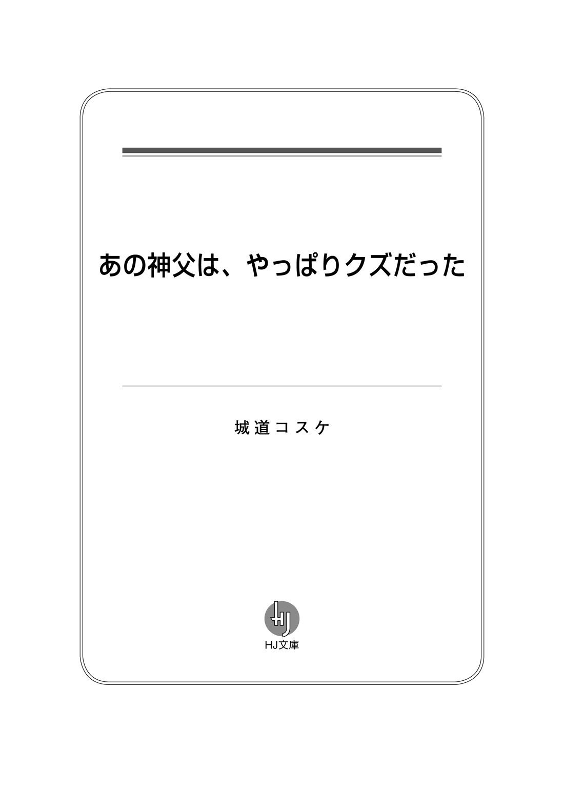
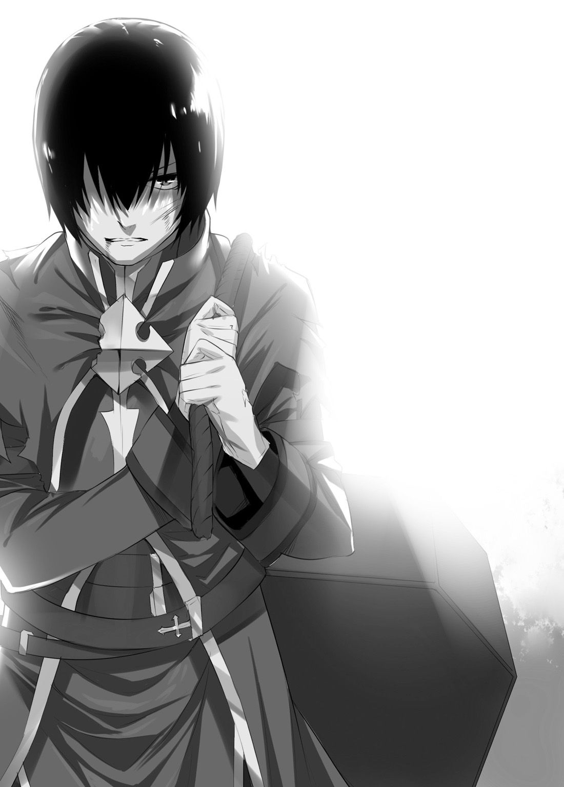

| あの神父は、やっぱりクズだった (HJ文庫) | |
| 城道コスケ | |
| (2016) | |


１ 神父が強くて、何が悪い！
「全財産の半分って高すぎっすよ、神父様」
「これは、これは、異なことを仰 います。勇者様は無 謀 な戦いに挑 み、全 滅 した所を我々がお救いしたのです。勇者様の死体を運び、復活させたのは我々です。そのことを考 慮 すれば、むしろリーズナブルでございます」
二人は聖 堂 の中にいる。ステンドグラスからは色とりどりの光が差し込み、聖堂を神秘的に煌 めかせている。赤色の絨 毯 が敷 かれており、絨毯の先には祭 壇 がある。祭壇をはさみ、二人は向かい合っている。
勇者と呼ばれた男は若い男だ。チェインメイルを着て、その上からはマントを羽織っている。腰 には剣 が下げられており、いかにも勇者然とした格好だ。勇者は作り笑 顔 を浮 かべているが、その下に人を小 馬 鹿 にした態度が見 え隠 れしている。
「運悪くゴールデン・ゴーレムを倒 したところで、金一杯 持っていたんすよ。その半分はねぇ、ちょっとキツイんすよね」
勇者は拝むように両手を合わせた。
「この通り、お願いしやす」
「勇者様のお頼 みでも、これは規則ですから」
神父は事務的に感情のない声で言い、勇者の組んだ両手を冷ややかに見る。
神父は一〇代と見える若い男だが、その目は完全に腐 っている。頭には長い青の帽 子 を被 っているが、どこかだらしなく曲がっていて神への敬意を感じられない。身体には青いローブを着ているが、所々にシワが寄っている。
勇者は探 るように周りを見 渡 す。
その目つきは盗人 じみている。勇者が蘇 生 代金を踏 み倒 すのはよくあることで、この勇者もその手の類 なのだろう。聖堂に礼拝客はおらず閑 散 としている。その様子を見て取ると、勇者の顔が邪 悪 に歪 んだ。
「こっちが下手に出てりゃ、調子に乗るんじゃねえ！」
勇者の口調に強さが混じり、剣を抜 いた。
「いいんですかい？ ここに神父の死体が転がっても、誰 が犯人かわからねえ。俺 たち勇者様と違 って、あんたは生き返れないんすよ」
抜 き身 の剣が銀色に光った。
その銀の光が神父の黒い目に映った。彼 の瞳 は漆 黒 よりも暗く、勇者の脅 しなど意に介 していないようだ。神父の口から赤くて長い舌が伸 びて唇 を舐 めた。まるで蛇 が獲 物 を見つけたかのようだ。
「ヒッヒッヒ」
不気味な笑い声が聖堂に響 き渡 った。その笑い声はおよそ聖職者には相応 しくない邪悪なものだ。
「勇者ごときが俺を脅しているつもりか......面 白 い」
「あ、ああ!? 」
神父の挑 発 に驚 きを表しつつも、勇者の顔は納 得 顔 に塗 り替 えられていく。
「もしかして、あれっすか。俺様を低ランク勇者と勘 違 いしたんすか。確かにＤランクやＥランクの勇者なら、神父ごときにも勝てねえかもしれねえ。だがな......」
クククと勇者は笑いに自信を込めた。
「聞いて驚くんじゃねえ。この俺様はＡランク勇者だ！」
勇者にはランクがある。ＥランクからＳランクまである。Ａランクは二番目に高いランクで、この勇者の実力の程 が窺 える。
しかし、ランクを聞いても神父の顔色は少しも変わらなかった。
神父がＡランクの勇者を倒せるとしたら、神父がＳランクの勇者相当の実力があることになる。事実ならば勇者でなく、神父が魔 王 と戦ったほうが早い。そんな馬 鹿 げたことが、通常ならあるはずがない。
勇者は言う。
「Ａランクを嘘 だと思ったか。ならば実戦で見せてやる！」
勇者の身体から魔 力 がオーラとなって発散される。青の衝 撃 波 は祭壇の上に乗っていた蝋 燭 を転がり落とし、羊皮紙製の聖書をベラベラとめくる。そして神父の頭に乗っていた情けない帽子も風に飛ばされた。
勇者の魔力は本物だ。Ａランクの実力は嘘 偽 りなどではなかった。むしろＡランクの中でも上位だろう。
「死ね！ 糞 神父！」
勇者の剣が銀色の弧 を描 こうとした。しかし、それよりも早く勇者の身体は吹 き飛 ばされた。凄 まじい勢いで床 に叩 きつけられてバウンドしたが、勢いは衰 えない。木製の扉 を突 き破 り、聖堂の外に転がった。
勇者を退けたのは、ただのパンチだった。
勇者の身体は魔 法 によって、通常の人間を超 える身体能力に強化されている。神父も同じように魔法で強化されている。しかし、同ランクならば勇者が使う魔法による身体能力の上 昇 の方が大きい。
すなわち両者にはとてつもないランク差があることになる。
「フンッ」
神父は鼻を鳴らすと、扉に向かって歩き始めた。勇者が流した血の跡 が、赤い絨毯の上に続いている。それを追って、神父は外に出た。
外に出ると高く昇 った昼間の太陽が神父を照らした。神父は日光を避 けるように目の前に手をかざした。自分には太陽が似合わんとでも言いたげだった。その黒い瞳で教会の周りを見渡す。
教会は防 壁 に囲まれている。かつては防壁の中に宿 坊 、豚 舎 、鍛 冶 工 房 などがあったが、今ではとり壊 されている。そのため大きな敷 地 にポツンと聖堂があるだけだ。敷地に点々と残る血の先には勇者がいた。
勇者が血まみれの双 眸 で歯 軋 りする。
「な、何をやったかわからねえが、まぐれだ。まぐれに決まっている」
勇者は剣の切っ先を神父に向ける。
「だがな、手前の運もここまでだ。手前も聞いたことがあるだろう。勇者最大の必 殺 技 勇者雷斬 の名を。冥 土 の土産 に見せてやる！」
勇者は剣を大きく横に構えた。剣から青いオーラが発散されて、剣身を包む。さらに剣の周りがバチバチと電気によって光り始めた。その小さな電気はやがて大きな稲 妻 となって、彼の剣にまとった。
「くらえ！ 勇者雷斬！」
雷 鳴 を轟 かせて、神父に斬 りかかった。神父は全く動かず抵 抗 すらしなかった。神父に当たった剣は電 撃 による大 爆 発 を巻き起こした。地面は黒 焦 げになり、焼けた匂 いと煙 が周囲に充 満 した。
「へへっ、やったか......、悪いのは手前だ。勇者様を怒 らせた手前が悪いんだ。骨も残らず消し飛ばしちまったか？」
勇者は白い煙の中で会心の笑 みを浮かべた。
しばらくすると爆 発 による粉 塵 が晴れていく。
煙の中に薄 らと黒い人 影 が浮かんだ。勇者は神父の死を確信していたのだろう。彼の顔が驚 愕 に青ざめた。
「な、なに!? 」
勇者の目の前には神父が平然と立っていた。
服にも身体にも傷一つなく、つまらなそうな顔をしている。そして神父の拳 は固く握 り締 められていた。その拳が唸 りを上げた。凄まじい速度で突 き上 げる拳は、空気を切 り裂 き風の鎧 をまとう。音速を超 えたとき、ソニックブームの耳 障 りな音が響き渡る。空気との摩 擦 熱 によって、拳は炎 の筋を引いた。
「ひっ！」
溶 岩 弾 の如き一 撃 は、勇者の身体を空に踊 らせた。まるで人形のように勇者の身体は高く空に昇っていく。肉眼では捉 えられないほどの高さにまで昇り、星になったかに見えた。しかし、しばらくして勇者の身体は悲鳴の尾 を引きながら地面に落ちてきた。
醜 い音を立てて、勇者は地面に激 突 した。
勇者の身体はぼろぼろだった。腕 はちぎれ、全身から出血している。骨も何本か折れているだろうし、内臓も痛めている。立ち上がる気力はないが、そのトマトのような顔を神父に向けた。
「つ、強い、強すぎる......。何なんだよ、お前のランクは......」
「俺か、そうだな......」
神父は口元の端 を吊 り上げた。
「５Ｓランクの神父だ」
「ば、馬鹿な。そんなランクあるわけがねえ！」
「天才なんだよ、天才！ 才なき者は天才の前に跪 く、それがこの世界のルールだ」
逆光を浴びた神父の顔は、黒き悪に輝 いていた。
魔法の強さは純 粋 に生まれ持った才能と魔法職種との相 性 によって決まる。そこに努力や工 夫 の余地は少ない。そして魔法は身体能力も強化する。すなわち魔法も肉 弾 戦 の強さも生まれによってほぼ決定する。
「本来、お前如きクズに見せるものじゃねえ。だが、生き残ったことに敬意を示して、見せてやるか」
神父の身体から白きオーラが爆発する。その眩 き白さは目に刺 さるほどの明るさで、地上に太陽が降りてきたかと見 間 違 えるほどだ。そしてオーラがもたらす聖風は、土 埃 を巻き上げて瓦 礫 を吹き飛ばす。
そして勇者の身体をゴミのように転がす。
勇者は石 壁 にぶつかり、その石壁にしがみついて風に耐 える。
晴 れ渡っていた空が、突 然 曇 り始めた。黒く分厚い雲が太陽を覆 い、まるで夜のような暗 闇 に包まれた。空を飛んでいた鳥は木に降り、地を歩いていた犬は不思議そうに空を見上げる。神父の魔法は魔法と呼ぶより、もはや天変地異や災害の領域に手を突っ込んでいる。
「何なんだよ、何なんだよ、これは！」
暗闇の中で勇者の瞳 孔 は開ききり、全身は血と冷 や汗 にまみれている。身体をガクガクと震 わせていて、情けないことに失禁までしている。その血 塗 られた顔を、今度は眩いばかりの光が照らした。
厚い雲の合間から、何本もの光の筋が差し込んでいる。
「冥暗の闇 を切り裂くは、天招く光の柱。天光招来 」
神父の詠 唱 が終わると、光の隕 石 が空から降ってきた。その隕石の雨は地上に当たると、白き爆発を次々と引き起こす。爆発は建物に被 害 を及 ぼすことはない。しかし、その浄 化 の光は不 浄 なる者を灰 燼 に帰す。
勇者の身体は降り注ぐ白い光に飲み込まれていった。
神父が黒い瞳でつまらなそうに空を見上げる。空はすでに晴れ渡っていて、普 段 の空を取 り戻 していた。下を見れば、灰になった勇者の死体があった。服などは綺 麗 なままだったが、身体は灰だ。
「何度死のうが生き返る身体か......」
神父の顔に微 かに懊 悩 が浮かぶ。
この世界の勇者の定義は簡単だ。蘇生の魔法が効くか効かないかだ。効けば勇者だし、効かなければ勇者ではない。確かめる方法は実際に死んで、蘇生の魔法が効くか試 すしかない。ただ真の勇者たるものは、時が来れば死んで勇者の証 を立てると言われている。
神父は勇者の死体の周りに円 陣 を描く。そして呪 文 を唱える。
「冥府を彷 徨 したる勇 魂 に、神 佑 を持って命じる。勇者蘇生 」
灰となっていた勇者の身体が徐 々 に集まっていき、人のような形を成していく。灰から炭のような固形物になり、表面に血の赤みを帯びてくる。そして桃 色 の皮が表面を覆っていき、人間らしさを取り戻してくる。
「二度目の復活に、指導料。全財産没 収 だ」
神父は勇者の身体を漁 り、たっぷりと金が詰 まった袋 を取り出すと、自分の懐 にしまった。
「ヒヒッ......。いや、この程度じゃ、まだ足りねえ」
今度は勇者の衣服と剣を奪 った。そしてパンツ一枚になった勇者をボールのように蹴 り飛ばした。勇者の身体は街の中まで飛ばされた。
「ありやとやんした」
２ 神父の天敵登場!!
魔王が領土を拡 げ始めたのは三〇〇年ほど前になる。
魔王軍の侵 攻 は当初小規模なものだったが、徐々に大規模になっていった。遂 に魔王軍が王都に近いスキット山を征 服 するにあたり、危機を感じた王は軍隊を送る。だが魔王軍の圧 倒 的 な強さに返 り討 ちに遭 ってしまう。そこに颯 爽 と駆 けつけたのが勇者王アーリックだった。彼の率いる勇者部隊は、魔法の力と鍛 え上げられた肉体で魔王軍を山から追い出した。
そして現在に続くまで平和が続いている。
庶 民 は平和を喜んでいるが、平和を望まない者もいる。勇者や異 端 審 問 官 など魔法を使える者たちだ。彼らは魔王との戦いを口実に、勇者法や異 端 審 問 法 などの特権を得てきた。魔王に攻 め込む意志がないと判明すると、特権を手放さなくてはならない。その事態を避けるために、彼らは魔王の脅 威 を喧 伝 している。
レジナルド王国、セバスティアン伯 領、ボルトン。それがこの街の名前だ。大きな商業都市で、街の周りは城 壁 に囲まれている。メインストリートは石が敷かれていて、様々な店がひしめいている。
そして神父がいる聖堂は、街の最 北 端 の小高い丘 の上にある。そこからは賑 やかなメインストリートを見渡すことができる。もっともメインストリートからは距 離 が離 れているため、この教会には一 抹 の寂 しさがある。
聖堂の中には参拝者はおらず、神父は退 屈 していた。長 椅 子 の上で寝 転 がって、ぼんやりとしていた。その身体に風が吹 き付 けてきた。神父は寝 返 りを打って、風が来た方向を見やる。
「あ～あ、面 倒 くせえ。自分でやるのも面倒くせえし、人に頼めば金がかかるしなあ」
勇者との戦 闘 で壊れた扉は、未 だ直っていなかった。隙 間 と呼ぶには大きな穴が空いている。そこから、まだ寒さの残る春風が吹き込んできている。早く直したいところだが金の問題があった。
「大体、なんで本部と異端審問会が九割も持っていくんだよ」
彼が金に困っている原因は非道なシステムのせいでもある。
町の中心には大聖堂があり、中には司教を長とする教会本部がある。大聖堂は幾 つかの町や村を宗教的に治めている。神父は教会本部に許可を得ることによって、初めて正統派の神父となれる。無許可で営業すれば異 端 に認 定 されて最悪処 刑 されてしまう。
さらに神父は教会本部に多額の上納金を払 わなければならない。その額は勇者を蘇生して得た金の九割にも上る。そのため彼はギリギリの生活を送っている。悪徳に儲 けている勇者から蘇生料の二重取りでもしないとやっていけない。
神父はだらしなく寝転がっていたが、ピクピクと耳が動いた。立ち上がると祭壇の前に移動して、乱れた服を直した。真 面 目 に仕事をしていた振 りだ。
「よいしょ、よいしょっと......」
可愛 らしい声と共に、ズルズルと何かを引きずる音が聞こえてきた。
「あれえ？ 扉が壊れているね。まあ、いっか」
半 壊 した扉を開いて、あどけない少女が入ってきた。彼 女 の後方にはピンク色の棺 があり、縄 をつけて彼女が引きずってきたのだ。
彼女は神父と目が合うと、手を上げた。
「おはようございます、ラルフ神父」
「ああ、死体回収屋か、ヒヒ......」
ラルフがにやついた。
笑みは彼女に向けられたものではなくて、棺へのものだ。
ラルフは祭壇から降りると、棺に近づいた。
「まさかグロテスクな死体じゃねえだろうな？」
「大 丈 夫 だよ。今回の勇者は綺麗なお姉さんだったよ」
「ほほう」
ラルフは生々しく舌なめずりした。
「さてと、じゃあ開けてみるか」
ラルフはピンク色の棺を開く。中に入っていたのは黒 髪 ロングの、綺麗な女の子勇者だった。血の気がないせいか、肌 は白く芸術的な美しさがあった。そして胸は柔 らかそうで大きい。
ラルフは少女の肩 に手を置いて彼女をねぎらった。
「よくやった」
「えっ？ は、はあ......」
少女はラルフの意図をつかめないようだ。
そしてラルフは勇者の左 腕 をめくる。
すると腕には白く輝く魔法の模様が浮かんでいた。その奇 妙 な魔法刻印は、この教会に所属していることを示すものだ。勇者が死ぬと左腕に魔法刻印が浮かぶ。それを目印にして死体回収屋は所属の教会まで運ぶ。
今度は右 腕 をめくると、魔法の数字が浮かんでいた。
「金額はたいしたことないか」
この数字は勇者の所持金を示している。死体回収屋は数字と魔法刻印を、大聖堂にある教会本部に見せてから教会に運ぶ。そのため教会が不正を行ない上納金の額を減らせば、すぐに露 呈 してしまう。金の細かな分配は五割が教会本部で、異端審問会が四割だ。そして残りのわずか七分が教会、そして三分が死体回収屋に渡る。
そして神父は彼女に三分以上の金を渡した。
「神父様、少し多いですよ」
「いや、それは感謝の気持ちだ。前からお前はできるやつだと思っていた」
「あ、ありがとうございます」
ラルフが必要以上の金を渡すことなど初めてだった。少女は自分の仕事が評価されたと思ったのだろう。彼女の顔が明るく輝いた。
「さあ、お前は早く帰りなさい」
「あっ、はいわかりました」
「これから勇者様と大事な話し合いがあるから、ヒヒ......」
ペコリと一礼してから、彼女は出て行った。
その後ろ姿を見送ると、ラルフの瞳は欲望に血走った。
ラルフは扉に休業中の看板を掲 げると、隣 にある部屋まで棺を引きずっていった。中に入ると閂 をしっかりとかけた。狭 い石造りの部屋にはベッドが置かれている。勇者を棺から出すとベッドの上に置く。
「見れば見るほどいい女じゃねえか」
いかがわしい目つきで彼女の身体を舐めるように見回す。早 速 、手を出したいところだが、残念ながら彼女はまだ死体だ。
「まずは生き返らせるか......」
勇者の死体の周りに円陣を描いて呪文を唱える。
円陣は白い光を放ち、勇者を優 しく包み込む。一回、大きな心臓の音が部屋に響いた。勇者の青白い顔がピンクに色づき、太ももには張りが戻ってきた。蘇生をした途 端 に目を覚ますわけではない。大体、五分から一〇分ぐらいは眠 っていることをラルフは経験から知っている。
「ここで用心しとかねえと」
ラルフは扉に取り付けられた閂を見やるが、動く気配はない。次に窓 際 に近づくと、しがみつくようにして外を見回す。
彼ほど最強の神父でも恐 れる者がいないわけではない。だが幸いにして、恐れる者の気配はなかった。安 堵 の溜 め息 をつくと、ようやく寝 ている勇者に近づく。
ベッドの上に飛び乗ると、彼女の上に馬乗りになる。
ラルフは欲望に耐えかねたかのように、帽子を投げ捨てた。
「勇者様にマッサージでもしてやるか。へへっ......」
ラルフの両指が波のように蠢 いた。
だが閂を掛 けた扉の前に人の気配を感じ、ラルフは面 を上げる。
ガタガタと閂が揺 れる。
さっき確 認 したはずだが、いつの間にか人が来たようだ。まともな来客ならばノックの一つでもしそうなものだが、扉の向こうの人物にその配 慮 はない。まるでラルフが良からぬことをしているのを知っているかのようだ。力ずくで扉を開けようとしているが、なかなか開かない。
グラグラと揺れる扉に、ラルフの心も揺れる。その有 無 を言わせぬ強 引 なやり方には覚えがある。ラルフは慌 てて隠れ場を探すが、時 すでに遅 し。
バキッと激しい音がして、扉が蹴り破られた。
「あ、ああ!? 」
そこに立っていたのは金 髪 ツインテールの可 憐 な少女だった。手にはハンマーを持ち、白色のローブを着ている。身長はやや低めで、目は大きな猫 目 だ。まるでゴミ虫を見るかのように、ラルフを見ている。
「お、お前は異端審問官シャロン」
「そう、そしてあんたが最後に見る人間よ」
幼さが残る凛 とした声が部屋に反 響 する。
ラルフの顔に動 揺 が走る。Ａランク勇者ですら、彼の表情は微 動 だにしなかった。だが、このか弱そうな少女相手ではまるっきり違った。目は左右に泳ぎ、額には薄らと冷や汗がにじんでいる。
「勇者の上に跨 って、何をしようとしていたのかしら？」
「いや、それはその......」
ラルフは必死に言い訳を考える。
だが閂を掛けていたのも不 審 だし、勇者の上に乗っかる正当な理由があるはずない。こうなったら証人の口 封 じしかない。
ラルフの瞳に害意が宿る。
「キィー、死ねえ！」
ラルフは彼女に飛び掛 った。しかし、その動きは勇者戦で見せた人間を超 越 した動きではなかった。ただの凡 人 の動きだった。シャロンはラルフの攻 撃 を鮮 やかにかわすと、ラルフは半壊した扉をぶち破って廊 下 に転がった。
シャロンもラルフの後を追って風のように廊下に出る。
ラルフは瞳に恨 みを込め、立ち上がる。
「俺の魔力を停止しやがったな」
「当たり前よ。異端審問官の名において、あんたの魔力を停止したわ」
シャロンは幼さの残る顔に自信を浮かべて、手の甲 をラルフに見せつける。
手の甲には猫の顔のような魔法刻印があり、光を放っている。
異端審問官は相手の魔力の流れを停止することが可能だ。魔力を人体に例えれば血液のようなもので、審 問 官 は血液の流れの元である心臓を止めることができる。心臓が止まれば血液が流れない。同じような原理で彼らは魔力を停止できる。それゆえに魔法を使える者は、彼ら異端審問官を恐れている。
「で、どうするの。まだ歯向かうつもり？」
「当たり前だ。今日こそ血祭りに上げてやる」
ラルフは腰に帯びたモーニングスターと呼ばれる武器を取り出した。メイスの一種であり、片手で扱 うことが可能だ。丸い頭には無数の刺 を備えている。
「特別に魔法を使わないであげるから、かかってきなさい」
「な、なめやがって」
ラルフは魔法を使えないと凡人だ。それでも貧弱ではなく、並の人間以上の力はある。それに対して彼女は小 柄 な女の子だ。魔法の援 助 がない今、通常ならばラルフが勝てるはずだ。だが彼女が並でないことはラルフの身に染 みている。
ラルフは警 戒 感を露 にする。
それに対しシャロンには余 裕 がある。小動物のような可愛らしい外見とは裏腹に、彼女の構えは明らかに手練のものだ。
ラルフは得物を振りかぶった。
唐 竹 割りの要領で振 り下 ろされた打 撃 は、彼女の肩 口 に喰 らいつこうとする。彼女は白いローブを翻 して、舞 うようにバックステップでかわす。モーニングスターが地面に食い込み床の破 片 を飛ばす。
狭い廊下では得物を自由に振るうことができない。必然的に得物を縦に振ることになって、かわすためには後ろに引くしかない。そこにラルフの勝機がある。そのまま彼女が後ろに退いていけば扉にぶつかる。
彼女に反 撃 の隙 を与 えないように、ラルフは滅 多 やたらにモーニングスターを振り下ろす。その度にシャロンは流 麗 なステップで後ろに引く。そして彼女が木製の扉に当たったとき、彼女は一 瞬 怯 んだ。
「もらった！」
ラルフは懐に手を入れると、砂を投げつけた。彼がいざというときのために肌 身 離 さず持っている七つ道具の一つ、目 潰 しの砂だ。砂は煙 幕 の帳 となって両者の視界を妨 げる。だがラルフは彼女の位置をしっかりと目に焼き付けておいた。
「勝つのに卑 怯 もクソもあるか！」
ラルフは記 憶 を頼 りに、凶 器 を振り下ろす。
その顔はすでに勝利を確信している。すでにシャロンが参りましたと土下座している脳内図も描かれている。
しかし、人体の手 応 えはなく、代わりに扉が壊れた。扉を勢いよく壊したラルフは、そのまま聖堂になだれ込んだ。
シャロンはラルフの攻撃をジャンプしてかわしていた。通常の人間には不可能な高さまで飛び上がれたのは彼女の訓練の賜 物 だ。ラルフが振り返ると、彼女の飛 翔 する姿があった。白い蝶 のような姿に思わず見 惚 れる。
その惚 けた顔に彼女の蹴りが炸 裂 する。
「げっ!? 」
ラルフは蹴りの衝 撃 で倒れそうになったが、そう楽にはさせてくれない。トドメとばかりにシャロンのハンマーがラルフの腹に叩きつけられた。重いハンマーの威 力 に、ラルフの身体は吹き飛ばされて、壁に叩きつけられた。
「つええな、やっぱ強えな......」
壁に血の跡を残しながら、ラルフの身体は床に崩 れた。勝負には負けたが、その顔は満足げだった。
シャロンは引導を渡すようにハンマーを向ける。
「まだやるつもり？」
「残念ながら駄 目 そうだ」
シャロンはハンマーを収める。
「その程度の傷ならば、魔力停止を解除すれば、すぐに直るでしょう」
「ああ、まあな......」
「さて、あんたの処分はどうしたものかしら。勇者を犯 そうとしていたなんて、最悪魔力の無期限停止まであるわね」
ラルフの顔が引きつる。
「いやいや、何を仰います。シャロン様。あれは胸をマッサージしようとしただけで、犯そうなんてとんでもない」
「じゃあ、強制わいせつね。どっちにしても何年かの魔力停止もありうるわ」
「魔力が無くなったら生きていけません。どうか御 慈 悲 を」
ラルフは土下座した。魔法が使えなくなったら、ラルフは凡人に過ぎない。他の職業に就 く技術も根 性 もない。
「あんたねえ......。プライドってもんがないの？」
シャロンは完全に呆 れ顔 だ。
「まあいいわ。今回は未 遂 だし、それにあんた以外にもクズ神父がウヨウヨいるのよ。まあ、そいつらに比べれば、あんたの罪状なんて微 々 たるものだから......」
「ははーっ、シャロン様の御慈悲に感謝感激であります」
「ただし、今度やったら魔力を無期限停止するからね」
「もちろん心得ております」
「わかったならいいわ。魔力を戻してあげるから、勇者を帰らせて紅茶を淹 れなさい。もちろんダージリンよ」
「わかりました」
町の中心にある大聖堂の中には、教会本部だけでなく異端審問会もある。異端審問官はそこから派 遣 されてくる。審問官の仕事は主に二つある。一つは異端の教義が広まっていないか監 視 することだ。もう一つは魔法を使える者の監視だ。魔法を使うに値 しない人物と判断すれば、彼らの魔力を停止する。
ラルフは勇者を帰らせた後に、紅茶を淹れた。そして教会にある一室に紅茶を運ぶ。部屋の中は狭いが、上品なアンティークの家具で飾 り立 てられている。年季と風格を感じる机の横には、赤いソファーが置かれている。その上に彼女が座 っていた。
戦闘で乱れてしまったツインテールの結び目を直している。彼女はどこか人間離 れした清潔感があり、妖 精 のようにも見える。肌は透 き通 るかのように白く、そのまま日光に溶 け込みそうな雰 囲 気 がある。
彼女は猫目で部屋を見渡す。
「あんたにしては、品のいい部屋じゃないの」
「って、お前が用意させたんだろう」
「あら、そうだったかしら」
ラルフはトレイに二つの紅茶を載 せて持って来ていた。彼女はなぜか遠いほうの紅茶を手にした。ラルフはソファーに腰 掛 ける。
「こんな小 汚 い部屋は私にはあわない、とか言いやがって......。ソファーは何工 房 のあれにしろとか、色々注文つけただろう」
「でも、よかったじゃない」
「はっ!? どこがいいんだ。ただでさえ神父は儲からないのに、糞高い家具まで買わされて......。全部自腹だったんだ、自腹。お陰 で一時期は餓 死 するかと思ったぜ」
ラルフの苦言を軽く受け流し、澄 ました顔で紅茶に口をつけている。
「でも、あんたドＭでしょう？」
「馬鹿なことを言うな。むしろドＳだ」
「あら、そうだったの。なら悪いことをしたわね。でも私に殴 られたとき喜んでいなかった？」
「はっ？ ああ、あれか......」
さっきの戦いの最後でラルフが満足げな顔をしていたことだろう。
「別に喜んでいたわけじゃない。世の中には珍 しい人間がいると感心していたんだ。いや、希少生物を見た喜びとでも言おうか」
「なによ、それ？」
「お前の戦闘技術のことだ。かなり練習したんだろう？」
「まあね」
「そんなみみっちい練習をしても、結局は魔法が強い奴 が勝つ。それなのにお前は地道な努力を重ねている。まるで魔法が無かった時代の人間だ。何でそんなことをしているんだ？」
「決まっているじゃないの。異 端 審 問 官 だって魔力を停止されることがあるからね。そんなときに頼れるのは自分の力だけでしょう」
「異端審問会に逆らわなきゃ大丈夫だろう？」
「ええ、でも腐った審問会のいいなりになんてならないわよ」
「相変わらずだ......。まあとにかく、俺はドＭの変態じゃない。というわけで家具に使った金を返せ」
ラルフはどうにか金を手にしようと食い下がるが、シャロンは澄ました顔で受け流す。
「どうせ、あんたがお金を持っていても、まともなことに使わないでしょう？」
「馬鹿言え。俺 には壮 大 なプランがあるんだ」
「じゃあ、その壮大なプランとやらの中身を聞きたいわね」
「うう......」
ラルフは人に言えるような金の使い方は思いつかなかった。彼女はお見通しだと言わんばかりに、顔に軽 蔑 を含 んでいる。
「いかがわしいお店で金を使うか、カジノか、飲み食いするかのどれかね」
「くっ......」
「図星ってところね。そんな所にお金を使うぐらいなら、アンティーク家具にしとくのが一番よ。使えば使うほど価値が上がるから、いい投資になるわ」
「馬鹿言え。将来の大金より、今の端 金 だろ」
「あんたねえ......」
「まあいい。誰 かさんがクビになったら、家具を売 り払 ってやる。その金をカジノに注ぎ込んで、一〇〇倍にする。そして、このクソみたいな仕事を辞 めてやる。ああ......我ながら完 璧 な計画だ」
「賭 けに負けて全財産失うのが落ちよ。それに私以外の異端審問官だったら、あんたの金なんて賄 賂 として全部取られちゃうわよ」
「ま、まあな......」
ラルフも彼女の善良さは認めている。
一 般 的 な異端審問官は極 悪 人 だ。魔力を停止されたくなかったら金を出せと脅 して、なけなしの金を巻き上げるのが世の常だ。
シャロンが言う。
「それで何か変わったことは？」
「変わったこと？ ......ねえな。変えて欲 しいことはいくらでもあるけどよ」
「言ってみなさい」
「教会本部と異端審問会側の取り分が高すぎる。九割って何だ？ 悪徳金貸しより、ひでえじゃねえか」
「ああ、それね。ほとんどの神父が同じこと言うけど無理ね」
「あっさり言うんじゃねえ」
「私も一応お願いしているのよ。でも上の方は極悪人ばっかりでね。クズ司教とクズ異端審問官が、利権を手放さないのよ」
「クズばっかりじゃねえか。俺を見習えっての」
シャロンはジロリと睨 みつける。
「あんたのどこを見習えってのよ」
「い、いや......、言葉のあやってやつよ」
「でもあんたも気をつけなさい」
「何を？」
「少し前に大きな魔 法 を使ったでしょう？」
「何で知っているんだ？」
「晴れていた空がいきなり黒雲に覆われれば、あんたかもって思うわよ」
「あれか。糞 生意気な勇者がいたんで、ちょっと本気を出しただけだ。粉みじんになってくたばった。ザマミロって......ああ、もちろん蘇 らせたけど」
「強力な魔法は控 えなさい。あんたの才能は他の異端審問官に知られていないからいいけど。知られたらロクなことにならないわよ」
「ああ、確かに......」
「いくら魔 力 を停止できても、あんたほど強力ならば、いつ寝 首 をかかれるかわかったもんじゃないからね。あんたの存在は審問会にとって危険なのよ。それならば、難 癖 をつけて魔力の無期限停止や異 端 認 定 して先手を取ると思うわ」
「だ、だろうな......」
異端審問法は年々、条文が増えている。彼 らが悪用しやすくするためだ。条文の文言には『魔法を使うに値しない人格を有する者を無期限の魔力停止にする』と記されている。こんな条文では解 釈 しだいで、魔法を使う者を誰でも罷 免 可能だ。
ラルフは紅茶の渋 味 を三倍増しに感じた。
「すでにちょっと後 悔 し始めた」
「しょうがないやつね」
シャロンは猫目を閉じて、紅茶を味わう。
「まあ過ぎたことは忘れよう。それでお前の仕事はどうなんだ」
「最悪よ」
「ほう」
シャロンは苦々しげな顔で紅茶を置いた。
「テンプル騎 士 団 副団長のクラブって聞いたことある？」
「聞いたことはある。テンプル騎士団のくせに真面目に職務をこなしているって聞く。だがクラブが職務熱心なのは、異 端 者 を殺すのが趣 味 だからって話だ。正気とは思えねえ。お前の担当じゃなかったか？」
「ええ。そうよ」
テンプル騎士団も異端審問会などと同じく大聖堂に拠 点 がある。テンプル騎士団は団長を頂点とした異端審問会の下部組織だ。異端審問会が異端の認定や裁判を行い、実際に捕 らえるのはテンプル騎士団だ。いわば実力行使部隊だ。
「お前に賄賂を渡 そうとして、五年間魔力を停止された馬 鹿 だろう。もっと相手を選べっての。俺が賄賂を渡すならばこんな堅 物 じゃなくて......」
シャロンは頬 をふくらませ怒 気 を露 にしていた。顔に幼さが残っているので、どことなく可愛い。だが今にも脇 においてあるハンマーに手を伸 ばしそうだった。
ラルフは慌てて咳 払 いをして誤 魔 化 す。
「ごほん......、こんな高潔なお嬢 様 じゃなくて、もっと与 しやすいクズにするな。うん......、で、そいつがどうかしたのか？」
「そいつの魔力停止を解除することになったのよ」
「まだ一ヶ 月 も経 っていないだろう？ 五年もの魔力停止ならば、クビになるのが普 通 だろう」
魔法を使う仕事で、魔力を停止されれば仕事ができない。そうなればクビになるのが普通で、そこが審問官の恐ろしい所でもある。
「食うに困って仕事でも探していると思ったんだが」
「普通ならそうね。でもクラブはかなりのお金を持っていたみたい」
「なるほど、その金で異端審問会の有力者でも買収したってことか」
「ええ。もちろん私は魔力停止の解除に反対したわ。でも、会の決定には逆らえないから、仕方なく解除したのよ」
「異端審問会には、よくある話だ。俺も買収しようかな」
そっと金貨を忍 ばせて、机に置く。だがその手をピシャリと叩 かれる。
シャロンは顔に凄 みを利 かせた。顔は可愛いままだが、目には迫 力 がある。ラルフは金貨を懐に戻した。
異端審問官は一人で一〇人以上を受け持つのが通例だ。自分を担当する異端審問官に賄賂を渡すことはよくあり、それで異端審問官は私服を肥やしている。賄賂を渡した人物はお目こぼしを得て、やりたい放題のことをする。
「でね。クラブが異端審問官たちにお金を渡していたのは、魔力停止を解除するためだけではないらしいの。他にも大きな目的があるみたい」
「大きな目的？」
「噂 では団長を退けて、自分が団長になろうとしているらしいの。審問官たちに賄賂を渡して、テンプル騎士団に働きかけるのよ。異端審問会に次期団長として推 してもらうつもりなの。テンプル騎士団は異端審問会に逆らえないから、会の推 薦 を無視できないでしょう？」
「賢 いやり方だ。団長ともなれば色々とやりたい放題だからな......羨 ましい」
ラルフは金と権力に囲まれた生活を夢見て垂 涎 する。
「それが違 うのよ。クラブは殺しが趣味の狂 人 でしょう。団長になったら、片 っ端 から異端の嫌 疑 をかけて、殺して歩くつもりよ」
「金より殺しねえ......確かに狂 っている」
「現団長はクラブのやり方に反対していたらしいの。クラブに異端者の討 伐 を命じれば、関係ない人まで殺しちゃうからね」
「ほう。現団長がまともな人間だから、クラブにとっては邪 魔 ってことか。で、お前はどうするつもりだ？」
「決まっているじゃない。クラブの計画を阻 止 するのよ」
彼女は猫目に断固たる決意を滲 ませる。
「かなりの異端審問官を味方につけているんだろう。危険じゃねえのか？」
「そうね。最悪、私が異端に認定されるかもね......。でも私は異端審問会をよくするために異端審問官になったのだから、クラブは認められない」
ラルフはやれやれと両手を拡げた。
「まったく、お前もクラブも正気とは思えねえ」
「ちょっと、変なのと一 緒 にしないでよ」
「いいや、ある意味、両者とも一緒だ。片や副団長で、片やＳランク異端審問官様だ。問題を起こさなければ、悠 々 自 適 な生活が待っている。それなのに異端殺しや、正義の実行のために自らの身を危険に晒 そうとしている。俺にはリスクとリワードが釣 りあっていないと思うんだが」
「まあ、あんたに理解されるようじゃ、私も終わりよ」
言って、シャロンは立ち上がった。
「これは、これは、異端審問官様。もう、お帰りですか？」
「ええ、そうよ。......にしても随 分 と嬉 しそうな顔をしているわね」
「まさか。別れが惜 しくて涙 が止まりません」
ラルフは白々しく袖 で目をぬぐった。
「そんなに言うなら仕方ないわね。この部屋で寝 泊 りすることにしようかしら」
「えっ!? 」
ラルフの背筋に冷たいものが走った。
彼女に監視されていては、悪事を働くのは不可能だ。
シャロンは嗜 虐 的な微 笑 を浮 かべる。
「冗 談 に決まっているじゃない」
「さすがＳクラス異端審問官様、冗談もＳクラスです。ヒッヒッヒ！」
ラルフは笑いながらも心は煮 えたぎっていた。
（こいつめ、いたいけな俺の心を弄 びやがって！）
だが異端審問官には勝つことはできない。心を落ち着けてから言う。
「それで次はいつお越 しで？」
「それを言ったら、安心して悪さをするつもりでしょう。一時間後かもしれないし、一週間後かもね」
「いつ来ても大丈夫です。真面目だけが取り得ですから」
「はいはい。じゃあね」
手を振って彼女が部屋を出た。
３ 魔王？ いたな、そんなヤツも
ステンドグラスから赤みの強い光が差し込んでいて、午後の気だるさを孕 んでいる。教会には珍しく人が集まっていた。といっても数は少なく、長 椅 子 はガラ空きだ。老 婆 がうとうとしている横で、子供が騒 いでいる。
毎週、金曜日の夕方に説教を行うのは神父の義務とされている。神への敬意など微 塵 もないラルフにとっては面倒この上ないが、かってに住人が集まってくるので仕方なくやっている。
ラルフはいつも通り青い神父服に身を包んでいて、右手には聖書を持っている。覇 気 のない声で聖書を読み始める。
「ええと、魔 王 が出現してから太陽は雲に隠 されて、地上は炎 に包まれました。困った人類は神に救いを求めました。すると神は魔王を倒 すための奇 跡 、すなわち魔法を授 けたのです......だとよ」
ラルフのやる気のない説教は不人気この上ない。
だがやる気のない神父には、聞く気のない聴 衆 が集まる。彼らの大部分は説教のときに配られる聖 餐 ――つまりパンとワイン目的で来ている。聖餐が目的ならわざわざ混み合った人気の神父のところに行く必要はない。
老 翁 はワインを飲もうと、木製のカップを傾 けた。だがすでにワインは空になっていて二、三滴 垂れただけだ。老翁は悔 しそうに唸 ると、カップを投げ捨てる。そして長椅子の上に横たわり、ふて寝を始めた。
ラルフは構わず続ける。
「武器商人は言いました『魔王って奴はそんなに悪い奴なんですかねえ。あっしとしては武器が売れて、むしろ助かっているんですがねえ』聖職者は言う。『慎 みなさい。魔王が悪であることを疑うのは、神の存在を疑うのと同じことです』しばらくして、武器商人の一族は、魔王によって皆 殺 しに遭 いました。ケッ、嘘 臭 え話だ」
毎度の説教でラルフにとっては聖書など読み飽 きている。この退 屈 から救いを求めるように聴衆を見 渡 して、舌打ちした。
（まったく可愛い女の一人もいやしねえ......）
ラルフは聖書をめくる。
「ある町で飢 饉 が起こりました。民 が怒 って言います『私たちは死にかけているのに、勇者や異 端 審 問 官 はたらふく食べている』同意した民が勇者たちを襲 って、一時の飢 えを凌 ぎました。ですが勇者たちが去った町は、魔王に襲われて滅 びました。神から魔法という奇跡を授かった彼らを攻撃することは神を攻撃するのと同じです」
ラルフは聖書を放り投げた。
ラルフは聖書が正統派にとって都合よく書かれたものと熟知している。最初と次の話では、魔王を絶対悪に仕立て上げている。正統派はあまりにも魔王を宿敵視するため、昔は魔王派と呼ばれていた。他の派 閥 を撲 滅 してからは、正統派と呼ぶことを強制した。
そして最後の話では、本来憎 むべきは特権階級の異端審問官や勇者なはずなのに、魔王へと目を逸 らせようとしている。
大聖堂から午後六時を告げる鐘 が鳴 り響 いた。
聴衆たちはいそいそと席を立ち始めた。もう用は済んだと言わんばかりに、振 り返 りもせず去っていった。外は暗くなってきていて、室内に灯 された蝋 燭 が目立つようになってきた。
彼らが去ると、散らかったコップが祭りのあとの如く残されている。
文句を言いながらコップを片付ける。こんなとき頭に浮かぶのはシャロンだ。
「あ～あ、何かあいつを懲 らしめる方法はねえかな～」
シャロンに殴られるのは自分が悪いせいだと気付いてはいるのだが、正論で気持ちが収まるのなら苦労はしない。せめて一度ぐらいは彼 女 に『まいりました』と言わせたい。そうすれば溜 飲 も下がるというものだ。
「何も戦 闘 で勝つ必要はない。手段を選ばず、ただ勝てばいい」
口元を吊 り上 げて凶笑を象 った。
「となれば毒、罠 、呪 いの類いか......」
だが証 拠 が残ると、今度こそは本当にクビになりかねない。ラルフは思案するが、名案は出てこない。
ラルフが思案に耽 っていると、外から声が聞こえてきた。
「ここが教会か、本当に営業しているんだろうな」
「小汚ねえ場所だ」
扉 の外では悪口ばかり言っているようだが、その手の人間に限って客の可能性が高い。神父という職業に嫌 気 が差し、ため息をつく。ラルフは青い帽 子 を正して、祭 壇 の後ろに移動した。
「何だ？ この扉、ぶっ壊 れてんぞ。オラァ！」
激しい音がして、扉が蹴 り破られる。扉は二つに割れて床 に転がった。元々、半 壊 していた扉だが、完全に壊れてしまった。
「勇者様御 一 行 の到 着 だ！」
ギャハハと下 劣 な笑い声と共に入ってきたのは四人組の男女だ。勇者、僧 侶 、戦士が男で、魔 法 使 いが女だ。典型的なパーティといえる。そして、品性と他人への配慮がないことまでもが典型的だ。
ラルフは壊された扉を見て、血管をピクピクとさせる。今回は勇者以外も混じっているから、気軽に殺せない。何とか平静を保ちながら言う。
「大いなる神の申し子よ。我 が教会に何の御 用 ですかな？」
教会に定められた定型文で、挨 拶 のようなものだ。
それを聞いて筋骨隆 々 な戦士が顔に嘲 笑 を浮かべる。
「おい聞いたか神の申し子だってよ！」
一同が嘲 るように笑う。
「俺たちは神より偉 大 な勇者様なんだぜ」
「それは失礼いたしました」
頭を下げようとしたラルフの横をカップが通り過ぎた。戦士がカップを拾って投げつけたのだ。カップは背後の壁 に当たり砕 け散 った。
「俺様のプレゼントが受け取れねえってのか？」
戦士は悪意に歪 んだ顔をラルフに近づける。
「おーっ。何だ、その面は？ まさか俺様に文句でもあるのか、ああ？」
この手の輩 と対 峙 するのはいつものことで、手を出さないのに苦労する。だが顔には嫌 悪 と殺意が滲 み出 てしまう。
「その位にしておきなさい」
流麗にして重みのある声だ。自然と皆 の視線が声の主に集まる。勇者だ。銀色のサラサラとした髪 を持つ男だ。線が細くて一見して柔 和 な雰囲気が漂 っている。ただし目は糸のように細くて、真意が窺 えない目だ。
「ああ？ 勇者だからって調子に乗るんじゃねえぞ」
今度は勇者に挑 みかかりそうな勢いだ。その顔には傲 然 とした驕 りがある。勇者にすら勝てると信じているようだ。戦士の暴走に慣れているのか、仲間がさして慌てる風もなく引き止める。すると戦士はフンと鼻を鳴らして大人しくなった。
勇者が困ったように頭をかいてから言う。
「では神父様、この教会にソウル・バインドをお願いします」
「わかりました」
戦士がつまらないものを見たかのように言う。
「俺たちは先に外で待ってようぜ」
「はあ......」
気弱そうな僧侶が同意する。
「お前も来い！」
戦士は無理やり魔法使いの手を取ると、三人で外に出て行った。
ソウル・バインドとはこの教会と契 約 することを言う。すなわち左 腕 には死後、この教会固有の魔法刻印が浮かぶ。死んだら死体回収屋がこの教会に勇者の遺体を運ぶ。この勇者は神父の客となるわけだ。
勇者は北の台地に向かうときは、大 抵 この町でバインドする。この教会が街の最 北 端 にあるメリットの一つだ。
ラルフはソウル・バインドの魔法を唱える。
「茫 漠 として揺蕩 うは勇 敢 なる魂 。勇魂が求めるは安 寧 たる束 縛 。魂束縛 」
勇者の足 下 に白き魔 法 陣 が浮かぶと、巨 大 な重力が勇者を襲う。その重力に勇者が跪 く。魔法陣が消えて、勇者が立ち上がる。
「全く困ったものです」
ラルフが言う。
「どうかしましたか？」
「神父様も見たでしょう。あの戦士を」
「はあ、確かにあれは......」
ラルフにも気分のいいものではなかった。
特に戦士系の人間に、あの手の人物が多い。戦士と呼ばれているが、もちろん魔法も使える。ただ使える魔法のほぼ全てが身体能力向上なので戦士と呼ばれている。そして残念ながら脳みそは身体能力向上の範 囲 には含まれない。
「ああいう付け上がる奴が必ず一人はいるんですよ。勇者と呼ばれ羨ましがられていますが、裏ではいつも人間関係に悩 ませられています」
「勇者様の御 心 労 、お察し申し上げます」
「あの戦士は勇者になったつもりのようですが、誰が本当の勇者かわからせてあげる必要があるようですね。フフッ......」
勇者の細い目が冷たく光った。
「神父様、この近くで一番凶 悪 なモンスターがいる場所はどこですか？」
「この街の北門を出て、そのまま北に進むと看板があります。その看板に従って東に行くと、暗 闇 の森と呼ばれる場所があります。森の中を非常に素 早 く動く猿 系のモンスターが厄 介 ですし、動きは遅 いですが強力な力を持つ植物系のモンスターがいます」
「ふむ、なるほど。僕 たちのパーティで勝てると思いますか？」
ラルフほどの実力者なら一見しただけで相手の実力がわかる。この勇者はＢランク相当の勇者だ。暗闇の森はＡランク相当の実力でないと生き残ることは難しい。ラルフとしては死んでくれたほうが儲 かる。だが、嘘 を言ったことがばれると、かえって客を失うことにもなりかねない。
「失礼ながら、勇者様のパーティでは難しいかと......」
「ふむ......」
返ってきたのは意外な言葉だった。
「いいね」
「はい？」
「足の速いモンスターがいるってことは、逃 げるのも難しいってことだね」
「まあ、そうですが......」
「そこなら簡単に全 滅 できそうだ」
「えっ!? 」
「あの戦士も気に食わないし、魔法使いの女の子にも飽きてきた頃 だ。そろそろパーティをリセットする頃 合 だしね」
「そ、それは......」
さすがのラルフも眉 をひそめた。勇者は生き返ることができる。しかし他の仲間は死んだら二度と戻 らない。リセットなどと軽い言葉は当てはまらない。ともすれば間接的な殺人に相当する。
だが、この勇者が特別残 忍 でないことをラルフは知っている。彼が今まで出会ってきた勇者たちも同じような考え方をしていた。特別な自分は何をしても許されると思っているし、実際その程度のことは闇 に葬 られている。
「大体僕たち勇者にとっては、魔王を討伐したって良いことなんかないんだよね」
「と申されますと？」
「考えてもみなよ神父様。魔王を討伐したら僕たち勇者は『魔 王 討 伐 』の大 儀 を失ってしまうんだよ。そうしたらモテモテの勇者生活から、一気に今日のご飯にさえ困る浮 浪 者になっちゃうんだよ」
「はあ......」
「だから僕たち勇者は適当に功を上げつつも、魔王を弱体化させないように気を使っているんだよ」
この考えも標準的な勇者の思考だ。勇気や努力などの考えはまるっきりない。ラルフが考える理想の勇者像とはかけ離 れている。
勇者は思い出したように言う。
「そうだ銀行に金を預けないと。これから全滅する予定だからね」
勇者が死んだときに、所持金が腕 に浮かぶ。だが、その所持金は身につけている金だけで、銀行や家に置いてある金は含まれない。危険な地に赴 くときは、全国各地に支店がある銀行に預けるのが勇者の心得だ。
勇者がつい失念したとばかりに頭をかく。
「僕としたことがうっかりしていたよ。神父様の手取りが少なくなっちゃうね」
勇者は懐 から金貨を取り出して、祭壇の上に置く。
「話を聞いてくれたお礼も込めて」
「はあ......」
「じゃあ、死体となってすぐ会えると思うけど」
勇者は別れを告げて外に出た。勇者たちが去っても、彼らが残した暴力と世の中の理 不 尽 さの匂 いは消えない。
「胸 糞 悪いな......」
蝋燭の灯 が金貨に当たり、キラキラと輝 いている。ラルフの大好きな輝きだが、今日は素 直 に喜ぶ気にはなれない。
「どっちにしろ、あんな奴じゃ魔王に勝てねえだろうが......」
言った後に、ラルフはニヤリとした。
「そうか魔王がいたな」
ラルフはシャロンのことで妙 案 を思いついた。真 剣 に考えているとアイデアが出ないが、他の事をやっていると思いつくタイプだ。通常のやり方では彼女に通用しない。だが人に知られていない毒や呪いなら可能性はある。
「魔王が持っている毒や呪いの類いなら、さすがのあいつでも気付かねえ。ヒヒ......」
その場所は常 闇 だった。空は暗く血のように赤い雲が覆 っている。禍 々 しい形をした巨大な黒い城は、天に向けて青い光を放っている。地面にはそこかしこに白骨の死体が転がり、巨大なカラスが目玉をつついている。血の川が流れ、死 臭 と血 臭 を放っている。ここが俗 に言われる魔王城だ。
「相変わらず臭 え場所だ」
そこにラルフはいた。
並の人間なら立っているだけで、瘴 気 と毒気に侵 されて気分が悪くなる。彼は魔法によって邪 気 から身を守っている。全身をコーティングする魔法は白く輝くオーラとなって彼を包んでいる。
だが眩 いオーラは敵がここにいると主張しているようなものだ。
たちまち一匹 の魔 物 がにらんできた。
城門から神父を見 据 えるのは四つの目だ。犬のような生物だが、犬よりも遥 かに大きくて家ほどのサイズがある。ケルベロスと呼ばれるモンスターだ。特 徴 的 なのは頭が二つあることで、その二つを使った同時攻 撃 は強力だ。
神父はケルベロスの前に立つと、巨大な影 がラルフを覆った。だがラルフは珍 獣 を愛 でるように見上げる。
「こいつは可愛 い犬コロだ。撫 でてやる」
挑 発 に乗ったケルベロスは、一つの頭で噛 み付 いてきた。暗闇に赤い目が軌 跡 となってラルフを襲う。その赤い輝きは神父が放つ白光によってかき消された。神父の手にはケルベロスの頭があり、赤い瞳 を瞬 かせていた。
「ああ？ 頭を撫でただけなのに外れちまったぜ。取り外し可能になってんのか？」
かつて首があった場所からは噴 水 のように血が湧 き出ている。残った一つの頭は信じがたいように震 えると、空に向かって吠 えた。その遠 吠 えは悲調の響きがあった。
吠え終わると、牙 と敵意をむき出しにした。
「そんなに食い殺してえのなら、いいぜ。かかってこいよ」
無防備なラルフに、ケルベロスは噛み付いてきた。真っ赤な口がラルフの前を覆ったが、ラルフは自ら右 腕 を差し出した。ケルベロスは歓 喜 せんばかりに、右腕に喰 らいついた。ガチンと歯をかみ合わせる音に続いて、砕ける音がした。だが砕けたのは右腕ではなくケルベロスの歯だった。
ラルフはパラパラと零 れ落 ちる黄色い歯を一 瞥 する。
「虫歯だらけじゃねえか、ちゃんと歯を磨 けよ」
ケルベロスはラルフに噛み付いたまま、わなわなと震えている。
「食えねえんなら仕方ねえ。自ら食われてやるぜ」
ラルフは口をこじ開け、ケルベロスの体内に入っていった。それと同時にケルベロスは七 転 八 倒 し始めた。中から『オラオラ食われてやったんだぞ。もっと喜べ』というラルフの声が聞こえてきた。
背中の辺りが膨 らんだかと思ったら爆 発 して、血と肉をぶちまけた。次は腹の辺りが爆発して大量に出血した。ケルベロスは痙 攣 してその場に倒れこんだ。目からは生気が失われ、口からはだらしなく涎 を垂らしている。どうやら死んだようだ。
だが、死んだはずの口が大きく開かれた。ラルフだ。血だらけのラルフが口の中にいた。ケルベロスの口が裂 けるまで開くと、飛び降りた。
「何だ。もう壊れちまったか、つまらねえ玩具 だ」
死体を足 蹴 りにして堀 に落とす。白きオーラを強めると血は霧 散 した。
ラルフが城を見上げる。
その形は異様の一言だ。
人間が作る城は防衛がメインだが、この城は威 圧 感や力の象 徴 として建てられている感がある。表面は金属のような物質に覆われていて不気味に黒光りしている。また城は威 嚇 するように、刺 状 の突 起 が幾 つも並んでいる。
ラルフが目を落とすと、巨大な木製の門がある。
一〇メートルもありそうな程 の高さがあり、厚みは底知れない。だがラルフにとっては問題ない。ラルフが一 蹴 りすると、分厚い扉は木 っ端 微 塵 に砕け散る。
城は黒い口を開けた。
生き物のように侵 入 者 を喰らおうとする不気味な雰 囲 気 がある。中はとてつもない広さで、ラルフが小人になったかのような場所だった。廊 下 なのだろうが、城の大広間より広い。紫 色 の妖 しげな松明 が光り、周囲を紫に染めている。
「魔王の居場所はどこだったかな」
ラルフが辺りを見回す。
「考えるまでもなく最上階だった。馬鹿と魔王は高い所に上りたがる」
城主を貶 める言葉を平然と言う。
魔王を馬鹿にされて怒っているのか、そこかしこから殺気が放たれている。
廊下の出 会 い頭 や、部屋の中、天 井 の上。ありとあらゆる所に尋 常 ではない力が感じられる。
「ああ面 倒 くせえなあ......。そうだ魔王に秘密の抜 け道 を教えてもらったっけな」
ラルフは抜け道を思い出そうと首を捻 ったが、度忘れしていた。
「まあ、いっか。マラソンの始まりだ！」
ラルフは走り始めた。
白い光が尾 を引いて魔王城を駆 け巡 る。脇から合 成 獣 キマイラが飛 び掛 ってくる。しかしラルフは軽くかわすと、そのまま走り続けた。しかし、キマイラもただの雑魚 ではない。ラルフの後を追ってきている。
今度は天井から巨大なコウモリが次々と襲 い掛 かってきた。
ラルフが拳 を捻ると、それが巻き起こす圧 倒 的 な破 壊 力 は嵐 を巻き起こしコウモリを飲み込む。コウモリの身体は微塵に砕け散り、残 骸 が嵐と共に回転する。それでも生き残ったコウモリがラルフを追 跡 する。
ラルフは巨大な階段を駆 け上 る。
階段の最上段には人型の巨大生物が待ち構えていた。頭は牛、身体は人間。ミノタウロスと呼ばれる魔物だ。ラルフが眼 前 に迫 ると、持っている巨大な斧 を振り下ろした。巨大な質量は床を砕き、破 片 を散 弾 のように撒 き散らす。
並みの勇者ならその破片に当たっただけで死ぬだろう。しかしラルフに効くはずもない。勢いに乗ったラルフは立ち止まりもせず、そのまま突 撃 する。ミノタウロスの腹に巨大な風穴を空けて、先へと進む。
二階に来るとさらに凶悪な魔物がいる。上半身人間で下半身が蜘 蛛 の生物が糸の網 を吐 いてきた。小さな蜘蛛の糸ですら強力なのに、巨大な蜘蛛の糸は常 軌 を逸 している。鉄の鎖 より丈 夫 で柔 軟 性 を持っている。
しかし神父の身体は燃え盛っていた。高速で動く神父は摩 擦 で身に炎をまとっていたのだ。その炎で蜘蛛の糸網を焼ききる。それでも諦 めきれず蜘蛛の化け物は、神父を追ってくる。
三階に入ると紫色の毒の沼 に覆われていた。ボコボコと沼が沸 き立 っている。激しい刺 激 臭 と腐 乱 臭 がして、喉 と目を焼きつかせる。近くにいるだけで並みの勇者なら身体が溶 けてしまうだろう。
「おおおぉ、アッチイイイイ！」
燃え盛るラルフは毒の沼に飛び込んだ。炎はジュッと音を立てて消えた。ラルフは毒沼を海水浴でも楽しむかのように泳ぎ始めた。しかし罠は毒沼だけではない。壁に張り付いた巨大な毛虫が緑色の酸を吐き、天井にへばりついた蛾 が毒の粉を撒き散らす。狙 いは正確でラルフの頭に命中した。
「洗 髪 料 とは気が利くじゃねえか！」
ラルフの哄 笑 が響き渡った。
最強と呼び声が高い魔王軍ですら、ラルフには太 刀 打 ちできない。血と屍 を築き上げながら、ラルフは侵 略 する。彼が描 く白の暴力は、らせん状に魔王城を駆け昇 っていく。
そして遂 に最上階へと辿 りついた。
振り返ると魔物の大群が追いかけてきていた。上には飛行生物が羽根をばたつかせていて、毒々しい燐 粉 が舞 っている。中央には山のように巨大な生物が陣 取 っている。下には蛇 やら芋 虫 のような地を這 う生物がうごめいていた。
「こいつあ、手間が省けるぜ」
ラルフはその軍勢に向けて手をかざす。
「翕 然 たる悪 鬼 に仁 恕 なし、聖光たる爆発から逃げる術もまた無し。聖光 爆発 」
神父の手が白く輝いた。
その光は何十もの光の筋となって、魔物に襲い掛かる。
白く輝く光の筋は蛇の頭を穿 ち、かわそうとする巨 人 の喉を貫 いた。傷そのものは大きくない。しかし傷口から侵 入 した浄 化 の光は、体内の不 浄 と激しく反応する。その反応は大きな爆発となって、血と肉をぶちまける。
しかも光線は敵が全滅するまで消えない。一匹殺せば次の魔物に飛び移る。光線がもたらす白の爆発に続いて、血肉による赤い爆発が起こる。それはまるで花火のようだ。
「ヒューッ！」
ラルフは満足げに口笛を吹 くと背を向けた。背後で起こる白や赤の光がラルフの背を照らして、悲鳴や爆 音 が耳を撫でる。背後に恐 怖 と絶望を背 負 い邪 悪 に微 笑 む姿は、さながら彼こそが魔王に見える。
ラルフは大きく開けた場所に出た。
魔王城はどこも大きいがここは特に大きく、異様な雰囲気がある。巨大な鉄の扉がラルフの前を塞 いでいる。扉の下から黒い煙 のような瘴気が漏 れ出ている。部屋に収まらないほどのオーラを発するとなれば、中に魔王がいるのだろう。
部屋に入ろうとしたラルフの足が止まった。
誰 かに見られている気がした。見上げると、巨大な四体の巨 像 がラルフを見下ろしていた。四体の巨像はお互 いに肩 を組んで円 陣 を築いている。
「ああん？」
一見するとただの石像だが、よく見るとその目が動いた。生きているようだ。そして地 震 のような地 響 きを伴 い、その巨 体 が台座から跳 び降りた。凄 まじい重量なのだろう。彼 らが降りると城が壊れそうなほど揺 れ、粉 塵 が巻き起こった。
石像の目が炯 々 と黄色く光った。
「よくぞここまで来た。我 等 は魔王配下の四天王。我は北方を司 る......アー」
ラルフが放った蹴りは四天王の一体を粉みじんに砕いた。しかも蹴りがもたらした疾 風 が刃 となって他の三体に襲い掛かる。三体とも胴 が二つになって、その巨体は動かぬ巨像に変わり果てた。
「寝 た振りしていたほうが良かったんじゃねえか？」
ラルフは再び扉の前に立つと、扉を蹴り飛ばした。
「魔王いるかー？」
鉄の扉はくの字にひしゃげると内側に倒れた。
中は真っ暗だった。
「明かりぐらいつけろっての」
その言に応 えるかのように一 斉 に火がともった。赤い絨 毯 が道のように敷 かれていて、それを二列の松明が挟 んでいる。そして赤い絨毯の先には玉座があり、そこに魔王が頬 杖 をついて座 っていた。
他の魔物と比べて大きくはなく、三メートルもない。人型の魔物で身体は青黒い色をしている。背中には一 対 の羽根が生えている。頭には二本の角が生えていて、銀色の髪が覆っている。赤い目には目玉が見えなく、人間味を感じさせない。
「よお。久しぶりだな、魔王」
魔王の身体はピクリとも動かない。血のように赤く輝く瞳は何の感情も表していなかったが、ラルフが瞳に映ると激情に揺れた。いかなる感情かは不明だが、瞳が爛 々 と燃えているかのようだ。
「ラルフ神父か......、貴様が最強だったのは過去の話だ」
「ほう......」
「余はあの頃の余ではない」
「なら試 してみるか？」
魔王は立ち上がった。
それだけの動作で、周囲は一変した。魔王が放つ黒のオーラは波 紋 のように周囲に闇を解き放つ。黒い雲のようなものが部屋全体に広がる。誰かにしがみつかれているような身体の重さを感じる。
魔王が赤い目でラルフを睨 む。
魔王の目はただの目ではない。邪 眼 だ。邪眼は強力な効果を持っている。睨まれただけで並の人間なら石になってしまうだろう。勇者だとしても全身の血が沸き立ち、身体が硬 直 し始めるほどだ。
「者共、死にたくなければ魔王城から去るがよい」
魔王の低くて威 厳 のある声が城中に響 き渡 った。階下で大きな音が聞こえ始めた。おそらくは魔物たちが逃げ出しているのだろう。
静かになると、魔王は軽く床を一蹴りする。彼の身体は宙に浮いた。そして魔王の周りの空間に闇が集 い始めた。
手のひらサイズの闇が六つあり、魔王の周りを漂っている。その闇が徐 々 に収束し形を成していく。目だ。六つの閉じられた目が、魔王の周りにある。
そして、六つの目がカッと見開かれた。
充 血 した目からは赤い光線が発射される。赤い光線は床を焼 き払 いながら、ラルフへと向かう。ラルフはその熱線をジャンプしてかわす。しかし降りたところに新たな光線が照射される。
ラルフは手をかざすと、その光線を握 りつぶした。ジュッと煙が昇った。
「こんなチンケな魔 法 じゃ効かねえ」
六つの赤い光線が踊 る。
次々と柱を切り倒していく。柱の一本がラルフに倒れかかる。ラルフが殴 ると、柱は吹き飛ぶ。柱は回転しながら魔王の肉体に衝 突 する。柱は微塵に砕けたが魔王の身体には傷一つない。
ラルフは光線の中、悠 然 と近づく。
部屋を乱 舞 する赤い光線は石の床を熱し灼 熱 に輝かせる。そして熱せられた石は、やがて溶けて溶 岩 になった。沸き立つ溶岩の熱気は空気を歪める。しかしラルフの歩みを歪めることはできない。
魔王は埒 が明かないと考えたのだろう。六つの光線を一点に集中した。六つの光の焦 点 となったのは、もちろんラルフだ。しかし光線が焼いたのは白い幻 影 のみだった。滑 るように移動したラルフは魔王の懐に入ると、隕 石 のような掌 底 を放った。
魔王は血 反 吐 を吐いて、向こうの壁まで吹き飛ばされた。
「なるほど少しは強くなったみてえだ。昔のお前なら今の攻撃で死んでいた」
壁にめり込んだ魔王が、力なく床に崩 れ落ちる。
魔王は片 膝 をつきながら、剣 の柄 に目をやる。魔王はその強大な力を誇 る剣を抜くことにためらいがあるようだ。その剣を抜けば魔王城に危害が及 ぶだけでなく、惑 星 の危機すら招きかねない。
だがラルフは惑星の危機など意に介 さない。
「抜けよ！ 魔 剣 ネクターブラッドを」
立ち上がった魔王は剣を抜く。
その刺 々 しいフォルムの剣は青黒く、濡 れたように光っていた。見るものを魅 入 らせ、自らの首をその剣に捧 げると言われる呪われし魔剣だ。そのままでも強力な剣に見えるが、その本領はこれからだ。
魔王は剣を高く掲 げた。
剣から凄まじい力が放射される。剣から発射した黒いオーラは、天井を突 き破 り空高くまで昇った。空高く上ると、巨大な一つの目となった。月よりも大きなそれは、全世界に魔王が剣を抜いたことを示す導 となった。
魔王が剣を抜いた。
その恐怖は人類のみならず魔物すら震いあがらせた。人類は赤い空に目があることを見 咎 めると、店をしまい子供を家に隠した。空を飛んでいた魔物は木 陰 に隠れ、地を這っていた魔物は地中に隠れた。
そして天空の目が見開かれる。
森に隠れていた巨人が、その場に倒れこんだ。身体から力を吸われ、力が赤い霧 となって宙に浮 かぶ。各地で同じような現象が起こった。強力な力を持った魔物や人間が力の一部を奪 われた。
世界中から立ち上る霧は、巨大な目に吸い込まれていく。霧が吸い込まれるたびに白かった目は充血を始め、どんどんと赤みを増していく。そして遂に白目が赤目に変わったとき、目は血の涙 を流した。
目からは赤い血が滝 のように流れ落ちた。魔 力 、呪力、怨 念 、様々な力が宿った滝の落ちる先は、魔王の魔剣だった。その血を飲み干すと、魔剣は真価を発揮し、赤いオーラを放った。
それを目にしてもラルフに動 揺 の欠片 もない。
「来い、魔 王 ！」
魔王は赤き剣を掲げ、ラルフに突撃する。ラルフは拳を回転させて、空間に拳を放つ。その回転は渦 を作り、烈 風 の刃となって魔王に襲い掛かる。その尋常ならない烈風を魔王は横に避 けてかわす。しかし、その破壊力は圧倒的だ。直 撃 を避けたものの風に巻き込まれ、脇 腹 が血 煙 を上げた。
魔王もこの程度では怯 まない。その赤き目に必殺の覚 悟 を宿し、ラルフに近づき魔剣を振り下ろす。魔剣はラルフの首元に吸い込まれていく。だが剣よりもラルフは速かった。白い尾を引きながら移動して、魔剣は空を斬 った。
だが、呪われし魔剣の威 力 は空を斬るだけでは満足しなかった。
赤い刃は魔王城の後ろ半分を切った。
一 瞬 の静 寂 が訪 れた。
まるで魔王城は斬られたことに気づかなかったかのようだ。だが、すぐに大きく揺れ始めると魔王城の半分は瓦 解 した。瓦解した魔王城は轟 音 を立てながら、溶けるように地上に沈 んでいく。
斬られた場所からは暗い空が見えた。
「景色が良くなったじゃねえか」
その嘲りを魔王の剣が薙 ぐ。
刃は魔王城の柱を切り裂く。すでに半分が崩 壊 しているが、支えを失い遂に崩壊を始めた。魔王城はぐらぐらと揺れて、天井が落ちてくる。床も割れて、二人の身体は地に落ちていく。落ちながらも二人は余 裕 の表情で睨 み合 っていた。
二人が地上に激 突 すると、爆音と共に粉塵が上がる。
もうもうと立ち上る埃 は二人の姿を視 認 できない。ガラガラと崩れ落ちる音はやがて静寂に飲みこまれ、埃は闇に溶け込んだ。赤い雲から差し込む僅 かな光が、二つの人 影 のようなものを浮かび上がらせた。
二人は大崩落を生き抜いていた。
ラルフは白いオーラを、魔王は赤いオーラを放つ。
魔王は歯ぎしみをして、額には苦 渋 の皺 が刻まれていた。必殺の威力を持つ魔剣もラルフが相手だと直接斬らなければ効果がない。しかし、ラルフの速度は剣の動きより勝 る。足止めしないと勝機はない。
魔王は再び六つの目を展開させた。
放たれる赤い光線にはラルフを倒 す意志がなかった。ラルフを囲うように光線を放ち、その逃げ道を塞ぐことに目的があるようだ。しかし、ラルフはその作戦を見 抜 いた上で、鼻で笑った。
「そんな小細工をしなくてもいい。正面から受けてやる！」
魔王の咆 哮 が闇に木 霊 した。
白き光と赤き光は、光線が織り成すトンネルの中を走り始めた。
二人の対決は二人の命運を分かつだけではなく、この惑星の運命をも分かつ。それを感じ取った大ガラスが悲 嘆 に嘆 き、屍が踊る。空に光る星は輝きを増し、大地を抱 く空気が震え、海は荒 ぶり始めた。
二つの光が衝突した。
白き光と赤き光が混じり、白赤の爆発が起こった。その爆発に巻き込まれた生物は例外なく死亡し、その破片すら残らない。その超 新 星 爆 発 のような輝きは、数百キロメートル離れた場所からでも見えた。
「な、何と！」
その爆 心 部 で魔王は驚 愕 に目を丸くした。その魔剣はラルフによって白 刃 取りされていた。ラルフの黒い目が妖しく輝くと、その魔剣がポキリと折れた。そして魔王の腹には蹴りが打ち込まれた。
ダイヤモンドより固い魔王の肋 骨 がへし折れる。ゴムよりも柔軟性がある魔王の臓器が血を吐き出した。トドメとばかりに放たれる頭 蓋 への一 撃 を何とか角で受ける。角が折れ、魔王の身体は瓦 礫 だらけの床 を転がった。
魔王の剣は力と輝きを失い、元の黒い剣に戻った。魔王はそれを投げ捨てる。しかし、魔王の爛々と輝く目は闘 志 を失っていなかった。立ち上がろうとして反 吐 を吐いて、片膝をついた。それでもわななく脚 で、もう一度立ち上がった。
魔王はペッと血を吐く。そして黒きオーラを振 り絞 る。高 濃 度 に圧縮された黒きオーラは、刃 物 のように鋭 く辺りを切り裂いていく。魔王の殺意に呼応して、暗い空は厚い黒雲に覆われた。雷 鳴 を轟 かせて、激しい雨を降らせた。
「魔法勝負か......、いいだろう」
ラルフが応じると、空が二つに割れた。
一方は魔王が呼び寄せた黒い雲だ。雲は闇よりも黒く、雷鳴は神の怒 りにも匹 敵 する。もう一方はラルフが呼び寄せた晴れやかな青空だ。太陽は見たこともないほど巨大で、空は抜けるように青い。
降りしきる雨と晴れの間には虹 がかかった。そして二人の間も虹が分けた。一方は満身創 痍 の魔王。もう一方は余裕の表情のラルフだ。二人は虹を挟んで睨み合っていたが、意を決したように魔王が唱え始めた。
「魔王の名において命じる。天満たすのは絶望の驟 雨 、地満たすのは地 獄 の業 火 。隕石嵐 」
魔王の命に宇宙が応えた。万 有 引力ならぬ魔王の引力。魔王は宇宙に散らばる星々の欠片を、自らの許に引き寄せた。宇宙で列をなす星々の欠片は、大 気 圏 に突 入 する。自らの身体を燃やし、地上に降ってくる。
隕石はもう一つの引力、すなわちラルフに吸い寄せられるように落ちてくる。ラルフの身体を真っ赤な光が覆う。ラルフが凄 絶 に微 笑 すると、隕石は粉々に砕 け散 った。欠片は炎 の尾を引きながら地面を転がる。
隕石は次から次へと落ちてきて、地表にクレーターを残し火の海に変える。隕石のサイズは様々だ。ラルフといえど強大な隕石が落ちてきたらただでは済まないだろう。
「ふん、やるじゃねえか」
ラルフも抗 し、魔法を唱える。
「我は天なり。我に弓引くは天逆の徒。劫 所 、劫 末 、森 羅 万 象 。全て我 が掌 にあると知れ。世界終焉 」
魔王が隕石を引き寄せるのなら、ラルフは太陽を呼び寄せる。
太陽はあっという間に大きくなって青空を覆った。恵 みをもたらしていた太陽の輝きは、死をもたらす焦 熱 となって大地を焼く。太陽の熱気と、隕石の熱気で周囲はたちまち地獄絵図と化した。
巨大な太陽は隕石を飲み込み、さらに膨 張 する。そして、突 然 の磁気嵐は緑色のオーロラを引き起こす。オーロラがダンスを踊り狂 っている最中にも魔王は怯まなかった。隕石の雨は驟雨の如き激しさとなった。
だが魔王の努力は虚 しく、二分されていた天が太陽に支配されてきた。
大勢は決した。太陽が放出する熱は隕石を一瞬で蒸発させた。幾ら隕石を落とそうとしても、地上にたどり着くまでにその身を蒸発させてしまう。しかも太陽の膨張は止まらない。このままだと太陽が惑星ごと飲み込んでしまう。
魔王は土下座した。
魔王は強かった。地上では最強だった。しかし所 詮 地上で生きる生物に過ぎなかった。地上そのものがなくなれば、魔王も消 滅 するしかない。
「ラルフ様、どうかお許しを！」
「ああ？ ようやく負けを認めたか」
魔王は全てのプライドを捨てた。数千年生き抜いてきた誇りや、ラルフと会うまでは最強だった自負もあるだろう。しかし、その全てを捨ててみすぼらしく頭を垂れた。
空は元の暗い空に戻った。
後に残るのは破壊され尽 くした魔王城と、その主だけだった。魔王が使っていた椅 子 だけは無事だったようで、ラルフの前に残されていた。ラルフはそこに座り、魔王は彼の前に額 づいた。
「やはり俺 様はこの椅子が似合う」
「その通りでございます」
「強いものに弱いものは従う。魔物らしいルールだ」
「左様でございますか」
ラルフは巨 躯 の魔王を見上げてから言う。
「俺よりでかいのは気にくわねえな」
「はっ、直ちに」
魔王は少女のようなサイズと外見に変身した。
曲がった角があり髪 の毛 は銀 髪 、青黒い服を着ている。身体の色は人間らしい色に変化している。爛々と輝く赤い目が、やや人間離 れしている。全体的には一〇才ちょい位にしか見えない。
「まずは恭 順 の証 に靴 を舐 めろ」
玉座に頬杖をついて、魔王の前に靴を置く。
「ペロペロペロ......」
「よし、もういいぞ。大分俺様の気分も晴れてきた」
魔王が靴から離れる。
「前来たときに俺様は魔王の部屋までフリーパスだと言ったはずだ。なぜ約束を破った？」
「調子に乗りすぎました。前回よりも力をつけたんで勝てるんじゃないかな、なんて思っちゃったんです」
「まあいい、今回は大目に見といてやろう」
「はは、ありがたき幸せ」
魔王は額を割れんばかりに地に叩 きつけた。
「それにしてもラルフ様は次期魔王にはならないのですか？」
「ああ、魔王なんて面倒くさいだけだろ。部下に命を狙われるは、勇者にまで命を狙われる。それに女は化け物ばっかりじゃねえか」
「それならば私を殺して、英 雄 にでもなれば良いのでは？」
「弱肉強食の世界に生きているだけあって、単純な頭をしてやがるな」
「と申されますと？」
「まあ、人間の世界は複雑なんだ。強いだけじゃ、部下の心はつかめない。それに魔王が死ねば人間界に内乱が起こって、それどころじゃなくなるだろう」
「どんな勢力が内乱を？」
「既 得 権益を持つ勇者やらの魔法を使える者に対して、庶 民 、領主、王等が戦いを挑 むことになるだろう」
「なぜ内乱が？」
「そーだな。人間界においては魔王こそが絶対悪だとされていることは知っているか？」
「はい。たまに人間界を偵 察 しますが、全ての悪の根源とか酷 い言われようですね」
「魔王を絶対悪として喧 伝 しているのは、勇者とかの既得権益者たちだ。だが大敵だと煽 っている奴 らこそ、魔王が死ぬと困る。数々の特権を持っている理由が、魔王を倒すための措 置 だからだ。そして奴らが特権階級にも拘わらず目の敵にされないのは、魔王という巨 大 な悪に目を逸 らさせているからだ」
「なるほど。そんな奴らが魔王、というか私が死ぬと、どうなるのですか？」
「特権を持つ理由が消滅する。だが素直に特権を手放す奴らではない。あの手この手で特権を維 持 しようとして王、領主、庶民と対立するだろう。魔法を使える者は数としては少数派だが、戦力としては強力だ。王や庶民と良い勝負になるだろう。戦力が拮抗している故 に両者は譲 らず、結果として血みどろの内戦になる可能性がある」
「殺 伐 とした世界ですね」
「ある意味、お前らみたいに弱肉強食の方がスッキリしている」
「でも、それで長年の謎 が解けました」
「何だ。それは？」
「人間たちは私を目の敵にしているのに、私たちの城に攻 め込んでこないのですよ。ラルフ様を除けば、五〇年は人間が来ていませんね」
「ほう」
「その五〇年前の事件も酷いものでした」
「どんな事件だったんだ？」
「巨 大 蜂 をご存知ですか？」
「ああ。あの子供ぐらいの大きさの蜂 だろう」
「ええ。五〇年前はその巨大蜂が大繁殖した年だったのです。人間は魔王について勘 違 いしているようで、凶 暴 な生物はみんな魔王の配下と考えているようです。実際は意思疎 通 ができないような生物も多いです。それに魔王軍は最大派 閥 なだけで、他にも色々な派閥がいます。ですから仮に魔王軍が全 滅 しても、人間が言う魔物は一〇％も減らないでしょう」
「その巨大蜂はお前の配下じゃなかったってことか？」
「ええ、そうです。配下どころか会話もできませんでした。むしろ我々の軍も巨大蜂に刺 されて困っていた所でした。それなのに人間共が押 しかけてきて『あの巨大蜂はお前の配下だろう。どうにかしろ』なんていうんですよ。勝負しろといわれれば喜んで受けて立ちますが、蜂はどうにもなりませんよ」
「人間界では悪いことは全て魔王に押し付けられているからな。頭が悪いのも、病気になったのも、火事が起こったのも、全部魔王のせいだと信じている奴もいる」
「既得権益者たちの宣伝を信じたのですね」
「ああ」
魔王はうなずいたあとに、思い出したように言う。
「それでラルフ様はいかなる用件で私めに会いに来たのですか？」
「ああ、肝 心 なことを忘れる所だった。そうだな、ますは人を呪 うことができるアイテムが欲 しい」
「呪いですか。死後アンデッドとなってラルフ様の配下に仕える呪いや、敵が味方に見える呪いなど、色々ありますが何にしますか？」
「いや、そんな大それたものじゃなくていい。むしろチンケな呪いがいい」
「チンケなですか......おい」
パンパンと手を叩くと、巨大な蝿 が飛んできた。
「呪いの品の目録があっただろう。持ってきてくれ」
蝿は赤い目を手でこすると飛んで行った。
「さすが魔王軍だ。まだ生きているやつがいるとはな」
「いえ、奴は逃 げていただけです」
「ほう」
「他に何か入用のものはございますか？」
「毒だ。そうだな、三日三晩ぐらい下 痢 に苦しむのがいい。相手は注意深い奴だ。紅茶に入れると匂 いや味がわからなくなるものがいい」
「ラルフ様ともあろう者が、たかが人一人のために毒を使うとは......。やはり人間社会は複雑ですね」
「まあ、そんなところだ。で、あるのか？」
「はい、すぐに持ってこさせます」
もう一匹 の蝿が宝物庫に飛んでいった。宝物庫は地下にある。非常に頑 丈 に作られているため、災難を逃 れたようだ。それと入 れ替 わるように蝿が、一枚の紙を持って飛んできた。ラルフはその紙を受け取る。
「これが呪いの品の目録か......」
「ええ、正しくはチンケな呪いの品の目録です」
「何々、禿 げる呪いに、朝起きると鶏 のように鳴く呪いだと。本当にチンケな呪いばっかりじゃねえか」
「そう仰 いましたから」
「チンケすぎるぜ......。ええと次は胸が大きくなる呪いだと？」
「ええ、胸がちょっと大きくなるだけです」
「して、呪いを解く方法は？」
「弱い呪いですから簡単に解けます。二週間もすれば自然に解けます。若 しくは胸を五〇回ほど揉 んでも呪いが解けます」
「ほほ～、それはいい」
ラルフは邪悪な笑 顔 を浮かべた。
４ 神父の完璧な作戦
教会に戻 ったラルフは、颯 爽 と町の中に出かけていた。寂 しげな教会付近とは違 い、この辺りはメインストリートとなり人でごった返している。ラルフは呪いの効果を試すべく、懐 に呪いの粉を忍 ばせていた。
昼時の強い日差しの中、石 畳 の道路の上を歩いている。道路の両側には二階建てや三階建ての家が並んでいる。
商業都市のため、いつでも街の中は賑 やかだ。
鶏が足元を駆け巡り、ウサギが飼い葉をかじっている。行き交う人々は様々な言語を喋 って、言い争ったり笑ったりしている。ピシンと鞭 を叩く音がすると、ラルフは道路わきに避ける。馬 蹄 を鳴らしながら馬車が通り過ぎていく。
様々な音と香 りが通るものを誘 惑 する。
カンカンと高い音は鍛 冶 屋 だ。開けっ放しにされた鍛冶屋からは赤い火が見えた。そして青果屋からは甘 い香りが漂 ってきた。赤いチェリーや橙 色 の柑 橘 類 などの地元で取れる馴 染 みのものから、滅 多 に見られない異国の果物まで様々だ。
だがラルフにとっては食い気よりも色気だった。
「あ～あ、可愛 い女の子でもいねえかな」
ラルフは辺りを見回し、物色を始める。あの子は幼すぎるし、あれは年を取りすぎているなどと文句を言いながら探す。果物屋の店主はラルフを不 審 げに見ている。そしてラルフは絶好のカモを見つけた。
見覚えのある勇者だった。
胸を触 ろうとしたが、シャロンに邪 魔 をされたときの勇者だ。黒く長い髪の毛は絹のように美しく歩く度に波立つ。人ごみの中でも、その楚 々 とした姿は目を引く。そして彼 女 が提 げている籠 に苺 が入っているのを見て、ラルフは思いついた。
ラルフが言う。
「おい、苺をくれ。今すぐだ。三つでいい」
「えっ、はい。わかりました」
ラルフの様子を怪 しげに見ていた店主だが、客とわかるや笑顔で対応した。
ラルフは苺を受け取ると、素 早 く薄 暗 い路地裏に入った。懐から黒い呪いの粉を出すと、苺に振りかけた。不思議なことに黒い粉はどんどんと苺に吸収されていき、見た目には普通の苺と大差なくなった。これで見事、呪いの苺の完成だ。
ラルフは路地から出ると、勇者が向かう方向に先回りした。
待 ち伏 せしていると、勇者が近づいて来る。ラルフは余 所 見 していたと言わんばかりに、下を向いて歩く。そして彼女にぶつかる。
「きゃあ！」
「おっと、すいません」
ラルフはしゃがみ込み、何かを拾うような動作をした。そして、立ち上がると手の平を広げた。手の中には三つの苺があった。
「落ちましたよ」
「えっ、はい。ありがとうございました」
勇者は少し戸 惑 ったが、ラルフが既 知 の人物だと気付くと苺を受け取り籠に入れた。そして、無 垢 な微笑を向けた。
「神父様ですね。先日はお世話になりました」
ペコリと礼 儀 正 しく頭を下げる。彼女は勇者にしては稀 有 な人格者だ。ラルフが聞いた話では、一人で旅をしているそうだ。彼女はＥランクで魔王を倒すことは諦 めているが、魔王の部下ぐらいは倒そうと考えているらしい。
「お役に立てて幸いです」
ラルフはなるべく人徳者に見える微笑を作ろうとしたが、顔が引きつっただけだ。
「勇者様はご存じないかもしれませんが、近 頃 この辺りでは呪いが流行 っているのですよ」
「呪いですか？」
「はい。一見して呪いに見えないような異状も呪いの可能性があります。幸いにして当教会では呪いの治 療 割引キャンぺーンをやっています。呪いかなあと思ったら、ぜひ当教会にお越 し下さい」
「はい、わかりました。それでは失礼します」
勇者は何の疑いもなく一礼して、ラルフの許 を去っていった。
「ヒヒヒ......」
ラルフは一つ目の目的を果たした。
次はシャロンに下痢薬を飲ませるための下準備だ。
さらに先に進むと市が見えてきた。今の季節は市が立ち、ただでさえ賑やかな商業都市が、ますます賑やかになる。市には出店が多い。屋根を取り付けた簡易的な建物の軒 には珍 しいものが並んでいる。
「神父様、いいものありますぜ」
声を掛 けた男の店には、宗教用具が並んでいた。神父なら興味があると思ったのだろう。銀や金の杯 に聖 書 、燭 台 など様々なものが並んでいた。中には聖人の遺骨などと書かれた妖 しげなものも売られていた。信 仰 心 が高い敬 虔 な神父なら興味を持っただろうが、もちろんラルフには関係ない。
「ふっ、くだらん」
「ええ!? あんた神父でしょう？」
店主の苦言など気にせず先に進むと、よい香りが漂ってきた。軒 先 に並べられているのは、紅茶の葉や珈琲 の豆だ。その芳 醇 な香りと茶葉の種類の多さから、なかなかの店であることがわかる。
ラルフは紅茶を手に取った。
ラルフがシャロンに出す紅茶は、ダージリンの中では最低クラスの品質だった。ラルフが今手にしているのは、最高級の葉だ。葉が大きく、春に取れたばっかりの茶で瑞 々 しい香りがする。値段も金貨が必要になるほど高価だ。
ラルフの口元が不気味に弧 を描 いた。
「ヒヒッ、これでやつもイチコロよ」
「誰 がイチコロだって？」
「ふぎゃあ！」
振り返るとシャロンがいた。いつものように白いローブを着て、金 髪 ツインテールの少女だ。外見には幼さが残るが、その猫 のような目には不審が宿っていた。
「何で、お前がいるんだよ？」
「別に、今日は仕事ないから、ぶらぶらしていただけよ」
「そうか、驚 かせやがって」
ラルフは安 堵 に息をつく。
「もしかして私が仕事中だったら困ることでもしていたの？ 大きい声を上げて驚いていたわよね」
「いやあ、まさか」
「じゃあイチコロって何？」
「い、いや、それは......ああ、いい頃 合 だって言っただけだ」
「何がいい頃合なの？」
「ほら、この紅茶だ。新 鮮 な香りがするだろう」
シャロンが葉に鼻を近づける。彼女の大好きな茶葉だ。うっとりするように目を閉じて匂いをかぐ。
「確かにいいわね。でもこんな高級なもの買えないでしょう？」
「実はお前のために買おうと考えていた所だ」
「わ、私のためにっ！」
大きな猫目をさらに大きくした。
「黙 っておいて驚かせようと思っていたんだが、その本人が来たから驚いて大きな声を上げちまったんだ」
自分の事ながらナイスな言い訳だと感心した。
「どういう風の吹 き回 しよ。あんたがそんなことをするなんて」
「いやあ、俺も考え直したのさ。お前に一〇回以上も殴られて、ようやく目が覚めた。俺も真 面 目 に生きていこうと考えたわけだ。そして真面目に生きていこうと決意したとき、お前への感謝があふれ出てきたって寸法さ」
「ふ～ん、やっぱり信じきれないけど......」
ちょっと嬉 しそうな顔をして、ジロジロとラルフの顔を見る。
「とりあえず信じてやるわ」
「そうそう信じるものは救われる。これ、下さい」
そう言ってラルフは代金を払った。
店を出て、シャロンが言う。
「ケチなあんたが本当に買うとは思わなかったわ」
「俺の思いも本気だってことさ。暇 なときに教会に来いよ」
「じゃあ近いうちに、あんたの所に行くわ。そのときは紅茶をお願いね」
「ああ、任せとけって」
去ろうとする彼女に声を掛けた。
「今日は休みなんだろう。これからどうするつもりだ？」
「服を買いに行くのよ」
「服？ 丁度いい。俺も服を買いに行く所だった。一 緒 に行かないか？」
「何であんたと一緒に行くのよ」
「似合うか見てくれる人がいたほうが便利だろう？」
「まあ、そうだけど。......わかったわよ」
「じゃあ、行くか。どうせあの店だろう」
「ええ」
二人は歩き始めた。
神父はいつものように青いローブに青い神父帽 を被 っている。そのためかなり背が高く見える。隣 のシャロンが小さいためさらに際 立 つ。
シャロンが言う。
「あんたも休みなんでしょう。何でその服を着ているの？」
「俺は万年休みみたいなもんだし、服はいつもこれだ」
シャロンは鼻をつまむ。
「いやいや、同じ服を何着も持っているって意味だから」
「なら服なんて要 らないじゃないの？」
「フフ......、それが新たに必要になった。大体この服を着ていれば、すぐに神父だってばれちまう。それだと色々と不都合がある」
「悪 巧 みじゃないでしょうね？」
「いや、まさか......ヒヒ」
「それならいいけど......」
「そういうお前も仕事着だよな。何でなんだ？」
「うう......。実はあんまり私服がないのよ」
「何だ。俺と同じだ」
「ち、違うわよ。私はちゃんと持ってはいるのよ。ただ......」
「ただ？」
「友達にダサいって言われたのよ。だから着て歩けないの」
「ああ、なるほど。仕事以外興味ない、堅 物 って感じだし」
「うるさい」
二人は橋を渡 って、服 飾 店 に入った。
この服飾店は非常に大きい石造りの店だ。服は機を織って自分で作るか、仕立屋に作ってもらう人が多い。だが、ここは商業都市で様々な人が出入りするので、でき上がるまで何日も待っていられない人も多い。地方から単身で出 稼 ぎに来る者や、貿易のために何日か滞 在 する者がいる。それらの人のために、この服飾店はある。
二人は二手に分かれて、目当てのものを探し始める。
赤、青、黄様々な色の服が並ぶ。右側の男物を見れば、青いマントは毛皮で裏打ちされていて暖かそうだ。麻 布 の肌 着 も暖かそうだ。女物を見れば、金や銀をあしらった華 美 な薄 絹 や、錦 織 のこった絹織物などもある。
ラルフが手に取ったのは、フード付きのコートだ。薄 い毛織物で服の上から被ることができそうだ。色も地味なくすんだ色で、会った途 端 忘れてしまいそうな色だ。これなら色々な悪事に使えそうだ。
他にも肌着や靴 下 などを買い、シャロンの所に向かう。
「たいていの女は、買い物に手間取りやがるからな」
ラルフは彼女の金髪ツインテールを見つけた。
「あ、あれ？ もう買い終わったの。これ似合うかな？」
シャロンは地味な色をしたワンピースを身体にあてていた。スカートの丈 は長く、裾 が地面を擦 りそうなほどだ。少女が着るというより、熟女が着そうなデザインだ。
「お前、絶対彼 氏 いないだろう」
「なっ、なんてこと言うのよ！」
シャロンの首元辺りから赤いものが昇 ってきた。
「図星か、図星か？」
「うるさいわね！」
「だが安心しろ。俺のセンスで選べば、お前のようなダサい女も生まれ変わってモテるようになる」
「別にモテなくてもいいわよ。馬 鹿 にされなければ」
「まあ、任せとけって」
こういうときにラルフが考えることは一つしかない。ロングスカートやパンツなど相手にしないし、素材や肌 触 りなど全く考えない。いかに丈が短いかだ。ラルフもシャロンの器量の良さは認めていて、可愛らしい服を着た姿を見たくなった。手にしたのは超 短 い桃 色 のミニスカートだ。
「ほら、これにしとけば間 違 いない」
見ただけで彼女の顔は赤くなる。
「な、何よ、それ。布切れじゃないの！ そんなの下着よ！ 下着！」
「そりゃ言い過ぎだ。それに、あまり大きな声を出すな」
「あっ......」
商品を見る手を止めて、何人かの人が見ていた。
「す、すいません」
今度は小さく言った。
「む、無理よ。こんな短いの」
「お前の友達ってやつもこの位の長さのやつを履 いているんじゃねえか？」
「ま、まあ言われて見ると......」
「買わないで試着してみればいいんじゃねえか。気に入らなかったら買わなきゃいいんだ」
「そ、そうね......」
カーテンで仕切られたコーナーがあり、そこで試着ができる。彼女はそこに入ると、もぞもぞとカーテンが動く。しばらくしたらカーテンの間から彼女が顔だけを出す。もじもじと恥 ずかしそうにしていた。
「どうした、着 替 え終わったのか？」
「う、うん、一応終わったんだけど......」
「ならカーテンを開けて見せて」
「駄 目 よ」
「見ないと似合っているか、わからないだろう？」
「そ、そうだけど」
ラルフが近づいてカーテンをつかむ。
「ちょっと！」
ラルフがカーテンを開く。
「も、もう～っ」
シャロンは恥ずかしそうに上 目 遣 いでラルフを見る。上は白い肌着で、下には例のピンク色のミニスカートを履いている。彼女は太ももをキュッと締 めて、両手でスカートの裾を押さえている。
スカートはちょっとしたことで中が見えそうなほど際 どい。彼女の太ももは一度も日光に当たったことがないような白さと神秘さを兼 ね備 えていた。また柔 らかそうで、思わず触 れてみたくなる。
ラルフは込み上げてくる欲望と唾 液 を飲み込んだ。
「ちょっと何で哲 学 者 みたいな顔をしているのよ」
「ああ、いや......、似合っているんじゃねえか」
「本当に？ でもこんなの無理。何かスースーするし、裸 で歩いているみたい」
「裸で歩いたことあるのか？」
「あるわけないでしょ！」
「まあ、俺も無理にとは言わん。他にもあるし」
「そうだね。じゃあ、他のも探してきて」
「ああ、任せとけ」
カーテンが閉まると、口元を歪 めた。
「ヒヒ......」
ラルフは最初からあのミニスカートは無理だとわかっていた。しかし最初に極 端 に短いスカートを見せておけば、次にかなり短いスカートを持っていくと、なぜかマシに見えてくる。詐 欺 師 の常 套 手 段 だ。
ラルフは白を基調としたワンピースを手に取った。そのスカートはかなり短いが、ピンク色のスカートに比べれば大分マシだ。それに白は彼女が普 段 着ているローブと同じ色だ。そのことは彼女の緊 張 感を和 らげるだろう。
「ほら、これを着てみ」
「ちょっと、これも短いじゃないの」
「前のより大分長いだろう」
「そ、そうだけど......」
「そんなことだから『おばさん臭 い趣 味 ね』なんて言われるんだ」
「何でそこまで知っているのよ」
「ああ、やっぱり当たっていたか？ あの服のセンスからすれば当然だ」
シャロンはむきになったのか頬 を膨 らませた。
「見てなさい、これを着て生まれ変わってやるんだから」
乱暴にカーテンが閉められる。
しばらく中でごそごそとした音が聞こえてきたが静かになった。
もうワンピースは着たはずだ。しかし彼女はすぐには出てこない。勢い勇んで入ったものの、やっぱりスカートの短さが気になるようだ。ようやくカーテンから顔を出すと、キョロキョロと周りを窺 う。
人がいないことを確かめると、ようやくカーテンを開いた。
白いワンピースを着た彼女は、森の妖 精 を思わせる清潔さと可 憐 さがあった。抱 きしめると霧 になって消えてしまうのかと思えるほどだ。しかし露 出 した肩 と脚 には、大人になりかけの魅 力 がある。
「ど、どうかな？」
「お、お前......」
「変な所で止まらないでよ」
ラルフは彼女の可憐さに思わず息を呑 む。
「マジ可愛いな」
「そ、そう......、アハハ」
彼女は自信と恥ずかしさが混じったような複雑な表情をしている。
「よ、ようし、これを買って見返してやるんだから」
買って外に出ると、夕日の橙 の色が照らしていた。
「は～、気合で買っちゃったけど、やっぱりこんなの着られないなあ」
「俺のところに来るとき着ればいいんじゃねえ。どうせ俺には見られているんだから、恥ずかしくないだろう？」
「それもそうね。じゃあ、次にあんたの所に行くとき挑 戦 してみる」
「ああ」
あの日以来、ラルフは入り口の前に解呪強化キャンペーンの看板を置いている。看板は全呪い五〇％オフを謳 っている。
教会の仕事には解 毒 や呪いを解くといった仕事もある。しかし、その仕事が来るのは稀 で、蘇 生 に比べれば料金が格段に安い。そのため教会本部や異 端 審 問 会 にみかじめ料を払 う必要がない。
「あ～あ、あの勇者、来ねえなあ。やっぱ他の教会に行っちまったか」
ラルフはいつもの聖堂にいた。ステンドグラスからは光が差し込んで、赤色のカーペットを鮮 やかに照らしている。入り口の壊れた扉 も粗 末 ながら、何とか自分の手で直した。
その扉がゆっくりと丁 寧 に開かれた。
躊躇 いながら中に入ってきたのは例の勇者だった。相変わらず黒く長い髪 は美しい。呪いの効果のためか、胸が大きくなっている。楚々とした顔に、豊満な胸は実にアンバランスだ。
ラルフは成功を喜びながら顔だけは平静を保つ。
「大いなる神の申し子よ。我 が教会に何の御 用 ですかな？」
「あ、あの先日はお世話になりました」
可愛らしくて控 えめな声だ。動 揺 しているのか、落ち着きがない。
「病院じゃわからなくて、その......」
「わからないとは、一体何がわからないのですか？」
ラルフは全てを理解しているが、彼女の恥ずかしがる姿を見たいだけだ。
「その胸が大きくなってしまって......」
「胸が大きくなるのは、その年代の正常な成長ですよ」
「ち、違うんです。二日前の朝、起きるといきなり大きくなっていたんです」
「どのくらいですか？」
「手の平分ぐらいです。お医者様に見せても原因がわからなくて、それで神父様の話を思い出して、もしかして呪いなんじゃないかと......」
ラルフはふむと神 妙 な面 持 ちを装 う。
「何か身に覚えはないですか、例えば誰かが胸に触ったとか？」
「いえ」
「なるほど。胸を触るような関係の人はいないと......」
彼女は羞 恥 心 を煽られてモジモジとする。
「確かに呪いの可能性がありますね。しかし胸を触られたことがないとすると、呪いにかかった経 緯 がわかりませんね。......そうだ、あなたが呪いを引きつけた可能性もありますね」
「呪いを引きつける？」
「きっと体質的に呪いを呼び寄せやすいんでしょう。月に一度は検査しましょう」
ラルフの嘘 が冴 え渡った。
「そうだったんですか......。あの、どうすれば治るんですか？」
「呪いを身体の外部に搾 り出さなくてはいけません。簡単に言えば、この私が胸をお揉み致 しましょう。そうすれば治るはずです」
「よろしくお願いします」
「ヒヒ」
狭 い部屋でベッドと窓があるくらいだ。そこのベッドの上に寝 かされて、彼女は仰 向 けになった。彼女が息を吸うたびに胸が膨らんだり萎 んだりする。
それと一緒にラルフの妄 想 も膨らむ。まずは普 通 に揉む。しかし、服の上からでは効果が薄いといって、脱 がせてさらに揉む。
変態的な妄想がどんどん膨らむが、まだ頭には冷静さが残っていた。彼 の頭をよぎったのはシャロンだ。前回も彼女に邪魔された。
ラルフは窓 際 に張り付き、外の様子を窺った。新緑が目に眩 しいだけで、異変はない。耳を研 ぎ澄 ます。聞こえてくるのは少女の吐 息 だけだった。鼻は鋭 敏 にする必要もなく、少女の薫 香 を捉 えていた。
だがまだ安心できない。
「しばらくお待ちください」
ラルフは部屋を出ると、獣 の如く走った。
そして入り口に辿 り着 くと、扉の前には休業中の看板を掲 げる。そして長 椅 子 を扉まで移動させて、バリケードの如く完全に塞 ぐ。これならば彼女が来たとしてもかなりの時間が稼 げるだろう。
素早く部屋に戻る。
「神父様、どうなさいましたか？」
「いえいえ、悪 魔 が入ってこないように対策をしただけです。では、始めましょうか」
「は、はい......」
少女は覚 悟 を決めたように目を閉じた。
ラルフの一〇本の指が妖しく動き、彼女の胸を鷲 づかみにしようとした。
だが張 り詰 めた空気が場を支配した。凍 てつくような悪 寒 がラルフの指の動きを鈍 らせた。ただならぬ殺気が何 処 かから放たれている。視線を感じる。嫌 な空気が部屋にまとわり付いていた。
不 吉 な予感は木 屑 の形を伴 って現れた。
ベッドの上にパラパラと木屑が落ちてくる。そして上で何かが動く音。この部屋の天 井 には木の板で仕切られた物置があり、物を保存できるようになっている。物音はそこからだ。
見上げたラルフの目が驚 愕 に見開かれた。
バリバリと音を立てて、板が崩 れ落 ちた。
砕 ける木の板に混じり飛び降りたのはシャロンだ。落下しながらも猫のような瞳 は鋭 くラルフを睨 んでいる。
「き、貴様っ！」
「遂 に現場を捕 らえたわよ！」
「ずっとそこに隠 れていたのか？ ストーカーじゃねえか！」
シャロンは意に介 さず、死 刑 宣告のようにハンマーを突 きつける。
「それも今日で終わり。今日があんたの命日よ！」
「いや、待て、待て。俺 は呪 いを解こうとしただけだ、なっ！」
ラルフは突 然 のことに戸惑っている勇者に救いの視線を投げかける。神父を信 頼 しているであろう勇者は、ラルフを庇 った。
「はい。神父様は私の呪いを解こうとしただけです」
シャロンがムッとして言う。
「再起不能にする前に一応、話だけは聞いてやるわ。本当に呪いなの？」
「本当、マジだって、胸が大きくなる呪いなんだよ。直し方は胸を揉むこと」
「聞いたことないわね」
シャロンはチラリと勇者の胸を見る。確かに大きいが絶対に異常とは言えない。一 般 的 な異 端 審 問 官 は呪いや毒の治療には詳 しくない。しかし、彼女ほど仕事熱心なら、かなりの知識がある。
「勉強不熱心なあんたが、私すら知らない呪いの知識があるなんて怪しい......」
「最近は本気で勉強しているから」
「まあ直し方がわかっているのなら、私がやるわ」
「えっ!? それじゃ折 角 の計画が台無しっていうか......」
「やっぱり胸を揉もうとしていたの？」
「いや、違うって......」
「なら文句はないでしょう、あんたの仕事を手伝ってやるんだから」
は～とため息をつく。もはや計画は完全に潰 えた。積み上げてきたいかがわしい妄想は、ガラスのように砕 け散 り、春の日差しに吸い込まれた。情欲に歪んでいた口元は、ぽかんと開いたままだった。
「ほら、さっさと出て行って。あと首を洗っといて。治らなかったら容 赦 しないから！」
ラルフは大魚を逃した気分で外に出る。
ラルフには余りにも辛 い時間だった。一つ扉を隔 てた部屋では、桃色のパラダイスがある。それなのに彼は灰色の石 壁 に寄りかかり、古ぼけた木製の扉の染 みを見ている。その染みが何個あるか数えていた。
しばらくして、二人が出てきた。
「ありがとうございます、神父様」
ぺこりと頭を下げる勇者の胸は、いつものサイズにまで戻っていた。
「いえ」
「料金はいかほどですか？」
「タダでいい」
「えっ！ 本当ですか、ありがとうございます」
彼女はさらに礼をして去っていった。
「無料で治療するなんて......、本当に生まれ変わったの？」
「あ、当たり前だ。ハハハ......」
さすがのラルフも自作自演な上に、金までとったのでは良心が咎 めた。
「呪いの治療方法も本当だったし......」
シャロンの緑色の眼 はキラキラと輝 き、その握 られた両の拳 は期待に満ちていた。
「何だよ......」
「見直したわ」
「えっ!? そ、そうか......」
「今まで酷 いことしてごめんね。初めて会ったときから、あなたなら立派な神父になれると思っていたの。だから指導が行き過ぎるときがあって......。でもあなたはそれに耐 えて、こんな立派な神父になるなんて」
どうやらシャロンは盛大な勘 違 いをしているようだ。しかし、ラルフにとっては都合がいい。彼女がラルフを安全な人物と判断すれば、この教会への警 戒 レベルも引き下げられるだろう。そうすればやりたい放題だ。
ラルフは思わず出そうになる笑いを堪 える。だが口元と頬を引 き締 めて、作り物の真 摯 な表情で彼女を見つめる。
「いいや、俺だけではここまでは来られなかった。全てシャロン......」
そっと彼女の肩に手を置く。
「君がいたからだ」
「そ、そんな、言いすぎよ。ラルフも頑 張 ったんだから」
「そうだな。でも俺が頑張れたのも、全部お前のお陰 だ。お前が誠実に仕事をこなす姿を見て、俺もやってやろうって気になったんだ」
シャロンは両頬に手を当てて、自らの熱を確かめる。
「もう、褒 めたって何もでないんだからね」
照 れ隠 しのためか、シャロンが言う。
「ああ、そうそう。今日は約束の日だったのに、あの服着て来られなかった。ごめんね」
「そうだったな。別に構わん」
「何か変な想像しちゃってね。でも今のラルフになら見せても大 丈 夫 だよね。今度は着てくるから」
「ああ、期待しておく。じゃあ、例の紅茶を淹れてくる」
移動しようとするラルフを呼び止める。
「あっ、待って。紅茶だけじゃ寂 しいから、お菓 子 を作る用意もしてきたんだ」
「ほう」
二人は厨 房 へと入った。
大きな厨房で、中央にはテーブルがある。そして肉や魚を串 刺 しにして焼いたり、鍋 でスープを茹 でたりするための炉 が二つある。さらにパンを焼いたり、菓子を作ったりすることが可能なカマドが一つある。
「随 分 と立派な厨房じゃない」
「まあな。昔はこの教会には何十人も住んでいたらしい。そいつらの胃 袋 を満たすためには、これくらいのサイズが必要だろう」
「へえ、敷 地 は広いものね」
ただし、この厨房が活 躍 している様子はない。差し込んでくる光が、この部屋に舞 い上 がった埃 を照らしている。シャロンは隅 にかかっている蜘 蛛 の巣をどけたり、埃を払ったりしている。
「あんた、あんまり料理していないでしょう」
「まあな、たまに湯を沸 かすぐらいだ」
「食事はどうしているの？」
「聖餐の余りのパンを食べたり、ワインを飲んだりしている。あとは裏の山に行って、猪 を焼いて、食えそうな草やキノコを漁 っている」
「あんたねえ......、原始人じゃないんだから」
シャロンは少し綺 麗 になった調理場を見てうなずく。
「ようし私がたまに来て料理を作ってやるわ」
「えっ、おまえが？」
「うん、嫌だったらいいけど」
「いや助かるけど......」
「うん、うん。正直でよろしい」
よっぽどラルフが心を入 れ替 えた風に見えたことが効いているようだ。ラルフは人間関係の変化に驚いた。だがラルフも彼 女 の外見は気に入っていたし、異端審問官であることを除けば悪い気はしなかった。
彼女は持ってきた袋 から材料を取り出す。小麦粉に、卵に、バター、蜂 蜜 。それに高級品の砂糖などがある。そして彼女は自信ありげに黄色い果物を取り出した。
「はいバナナ！」
「いやバナナって言われても......」
「市に行ったときに目についたの。甘 くて美味 しいのよ。食べたことある？」
「いや、ない」
「じゃあ楽しみにしていてね。私はバナナを切るから、カマドに火を入れといて」
「ああ」
ラルフはトントンと鳴 り響 く包丁の音を背に、レンガ積みのカマドの前に立つ。薪 は充 分 に置かれている。両手に一本ずつ取ると、人並みはずれたパワーでこすり合わせると火がついた。
振 り返 ると彼女はバナナやらを長方形の鉄の容 れ物 に入れていた。
「それは何だ？」
「パウンドケーキよ。混ぜ合わせて焼くだけだから簡単なの」
「へー」
シャロンは熱くなったカマドに、鉄の容れ物を置く。
「これで、しばらくすれば完成ね」
「なら待っているか」
「うん」
二人は赤い火を横目にテーブルに座 った。心 地 よいパチパチとした火の音と、薪の焼ける匂 いが充 満 していく。
「それで仕事はどうなんだ？」
「ああ、それね......」
彼女は言いづらそうに手を組んで、親指を動かす。
「それがね。前にも話した件のことだけど上 手 くいっていないの」
「ああ、あれか。確かテンプル騎 士 団 副団長のクラブだったっけ？」
「そうよ。私の動きがクラブに感づかれて、私をクビにしようとしているのよ。しかもクラブは順調に異端審問官を味方に引きずり込んでいるのに、私の仲間になってくれる異端審問官は少ないのよ」
「だろうな。正義を行なおうとする異端審問官が多数派だったら、少しは世の中がまともになっているはずだ」
「それでね。もしかしたら、あんたも巻き込んじゃうかも」
「俺も？」
「うん。実はね。私とあんたはグルになっていると思われているらしいの」
「俺たちが？ ありえねえだろう」
「そうでもないのよ。私が担当した神父たちは、全員が何らかの犯罪をしでかしているの。その中であなただけはまだなの」
「まだってのが、ものすごく引っかかるが......。それで連中は俺に犯罪歴がないのは、お前に賄 賂 を渡しているからだと考えているのか？」
「ええ。そうみたいね」
「連中は自分がクズだから、相手もクズに違 いないと考えていやがるんだな」
「そう。でね、異端審問官を罷 免 するときは、その異端審問官が担当した神父やテンプル騎士団の団員から意見を聞くのよ」
「聞いたことはある。それで協力者に見える俺の口を封 じに来るってわけか」
「そうね。あんたに良い意見を言われたら困るからね。賄賂を贈 ってきたり、無いとは思うけど命を狙 ってくる可能性もあるわ」
「そんな奴 らが来たら返 り討 ちにしてやる」
ラルフは残 虐 な愉 悦 に口元を緩 ませた。
だが、すぐに真面目な顔つきになる。
「でも本当にいいのか？」
「何のこと？」
「お前は世間が羨 むＳランク異 端 審 問 官 様だ。クラブなんて放っておけば、一生安 泰 だろう。デカイ家でも建てて、使用人を雇 って何不自由なく幸せな生活を送れる。普通ならばそっちの道を選ぶだろう？」
「そうね。私も自分で馬鹿だと思うけど、彼らに阿 ることなんてできないの」
「ほう。そりゃ、プライドか？」
「ううん。プライドって言うより目的ね。私は異端審問会の腐 敗 を正すために異端審問官になったの。だから見て見ぬ振りをするぐらいなら、この仕事を辞 めるわ」
「お前の固い頭も筋金入りってことか、腐敗を正すねえ......。まあ、それが目的で審問官になったのなら放っては置けないか」
菓子が焼ける甘い香 りが漂 ってきた。
「あんたは、どうして神父になろうと思ったの？」
「俺か、そうだな......」
窓に目を向けて景色を見る。遠くには賑 やかな街の様子が見える。ラルフの意識も遠い過去へと飛んでいく。
「俺は勇者に憧 れていたんだ」
「あんたが!? 」
シャロンは悪い冗 談 を聞いたみたいに笑い出した。
「おい、何で笑ってやがるんだ？」
「いやー、ごめん、ごめん。あんたほど勇者が似合わない人はいないから」
「子供の頃 は純 粋 に正義に憧れていた。いや、奴らが作った聖書を盲 信 していたとも言える。だから勇者になりたかった。だが勇者になるためには死ななきゃいけないし、死んでもなれるかはわからない。だから憧れの勇者と関 われる神父になることにしたんだ」
「へー。で憧れの職業について、どうだったの？」
「最悪の一言だ。勇者なんてロクなのがいない。たまにまともな奴もいるがＥランクだけだ。弱者かクズの二種類しかいない」
「まあ、勇者のいい噂 なんて聞かないもんね」
「たまたま蘇生の魔 法 を受け付けるだけだ。勇者なんて名づけなくて、ゾンビにすればいいんだ」
「まあ真の勇者なんて幻 想 よね」
「ああ。でもどこかにいるかもしれん」
「へー、まだ信じているんだ」
「魔 王 と勇者が仲良く手を繋 ぐぐらいにはな」
甘い匂いにほんのりと焦 げた匂いがしてきた。
「あっ、そろそろできたみたい」
「そうか、じゃあ俺は紅茶を入れる」
ラルフは引き出しの前に移動する。
ラルフは振り返って彼女を見る。彼女は後ろを向いていて、金 髪 のツインテールが揺 れている。ことを成すには絶好のチャンスだ。
ラルフは引き出しを開ける。中には紅茶が入っていて、横には小 洒 落 たティーカップとソーサーが置かれている。引き出しの隅には小さな包みが隠されている。
「ヒヒッ」
彼はその包みを手に隠した。
彼女はミトンを手に、熱くなった容れ物を取り出そうと苦戦していた。
ラルフはヤカンを手にして、彼女に背を向ける。完 璧 なポジションだった。手元で何かをしていても彼女からは見えない。念のため後ろを確 認 したが、彼女はケーキを切っている最中だ。
ラルフは悪 辣 な微 笑 を浮 かべる。
そして包みに入った怪 しげな粉を、一つのカップに入れる。その上から紅茶を注いだ。この紅茶は普段と違い黄 金 色 の紅茶だ。彼はもう一つのカップに注いで、匂いと見た目を比べてみる。全く違いがわからない。
「できたわよ」
「しょえ！」
「何よ。変な声を出して」
「いや、別に何でもない」
二人は席に着いた。二切れのケーキとカップが置かれている。ラルフはケーキを口に運ぶ。焼きたてのカリッとした表面が香 ばしく、中はしっとりとしている。バナナがもたらす南国の味がアクセントになっている。
「どう、美味しい？」
「初めて食べたがなかなかのものだ。バナナだったけか？」
「うん」
ラルフは彼女が食べる姿を注意深く見る。小さな白い手にフォークを握っている。ケーキを口に運ぼうとしたが、彼女の口には大きすぎたようだ。下に降ろすとナイフで半分に切る。そして小さくなったケーキを口に入れる。モグモグと口を動かしていると、彼女の顔が明るくなってきた。どうやら美味 しかったようだ。
しかし、なかなか紅茶には手をつけない。そのことがラルフには気がかりだったが、いずれ飲むはずだと安心しきっていた。
シャロンはうっかりしていたのか、余分なスプーンに手をぶつけてしまった。カラーンと音がして、木製のスプーンがテーブルの下に落ちた。
「ごめんね。取ってくれない」
ラルフはテーブルの下に落ちたスプーンを拾う。ついでにスカートの中でも覗 こうとしたが、裾が長すぎて駄目だった。
スプーンを置いてから、ラルフは紅茶を啜 る。確かに普段と違う味わいだった。透 き通るような香りがある。緑豊かな涼 しい高原で摘 まれたようなイメージが湧 いてくる。
「これは美 味 い。さすが高級品だ。お前も飲んでみろ」
「そうするわね」
彼女が繊 細 な指でカップを手に取る。
目を閉じて芳 醇 な香りを楽しむ。それが地 獄 への誘 いだと気付いていないようだ。そして遂にカップに口をつけた。薄 桃 色 の唇 がしっとりと濡 れて、黄金色の液体が吸い込まれていく。
彼女が満足げに微 笑 む。
「さすがに美味しいわね」
ラルフは勝利を確信した。
この笑 顔 を青ざめさせ、三日三晩の下 痢 地 獄 を味わってもらえば思い残すことはない。ここに復 讐 は完 遂 する。
そう思ったのも束 の間 。
なぜか突然に腹痛がラルフを襲 った。
「ぬおお......」
「どうしたの？」
「いや、何でもない」
シャロンは事情を知らなそうな顔をしている。
腹が痛いということは魔 力 を停止されている。彼女と一 緒 にいるときは気まぐれで魔力を停止することがよくある。だが魔力停止の解除を頼 めば、怪しまれてしまう。犯人はケーキか紅茶しかない。そこから毒の結論に辿り着くのは難しくない。
「うぐぐ......」
腹痛はさらに激しさを増して、額からは脂 汗 が滲 んできた。
涼しげに紅茶を飲む彼女を、必死な形相で見やる。紅茶を間 違 えたとは考えられない。そこは一番重要なところだ。何度も確認した。となると彼女が何かをやったはずだが、いつも通りの表情をしているのは変だ。
そこまで考えて、ラルフの思考を激痛が遮 断 した。
「もう駄目だぁぁあ。腹が痛え。魔力を返してくれ。とぁのむぅ。ひぃぃぃ！」
余りの腹痛に、思わず叫 んでしまった。もはや立っていることもできず、腹を抱 えて床 に転がった。普段は信心深くない彼だが、このときばかりは神に祈 った。
だがシャロンは魔力停止を解除しない。床に転がり助けを求めるラルフを見ても、助けようとはしない。唇に指を当てて冷静に考えているようだ。
「変ね。あんたの魔力を停止したのは、紅茶を飲む前だったのよね。すると腹痛の原因は紅茶かケーキしかない。でも私は何ともないのよね......」
シャロンは原因がわかったようで、口元に嗜 虐 的 な微笑を浮かべた。
「紅茶に何かを仕込んだのね」
遂に事が露 見 してしまった。かくなる上は自力救済しかない。
「は、早く吐 き出すんだ！」
ラルフは喉 に手を突っ込もうとする。
「ちょっと、こんな所で吐かないでよ」
シャロンはラルフを蹴 り飛 ばした。
ラルフは壁に身体をぶちつけた。
「や、やべえ、今のショックで完全に胃袋に収まっちまった」
「やっぱり、あんたは最低のクズね」
「う、うるせえ」
「種明かしをしてやるわ。スプーンを落としたときに、あんたの紅茶と私の紅茶を交 換 したのよ。あんたが飲んだのは私のために淹 れた紅茶よ」
「馬 鹿 な！ 最初から気付いていたのか？」
「まさか。異端審問官は毒を盛られたりするのはよくあることなのよ。だから出された飲食物は基本口にしないの。口にするときでも飲む前に相手の飲み物と交換したりするのよ。今まで気付かなかった？」
「何だと？」
思い返すと、前回紅茶を二つ持っていったとき、彼女は敢 えて遠いほうの紅茶を受け取った。それも異端審問官の心得なのだろう。さらに過去の記 憶 を穿 り返してみると、彼女は紅茶を飲む前に何らかの不 審 な行動をしていた。
ラルフの腹がギュルルと鳴り始めた。
「第二の波が来やがった。このままじゃ三日三晩下 痢 に苦しんじまう」
ラルフはシャロンを睨 み付 ける。
「おい、早く俺の魔力を返せ！ そうすれば、こんな下痢なんてたいしたことない」
「何を勘違いしているの。あなたには四日後に魔法を返してあげるから」
「き、貴様......」
ラルフは拳を振り上げたが、込み上げてくる腹の痛みに耐えかねた。
「いいか、この借りは必ず返させてもらう」
「借りって......、勝手に自 爆 しただけじゃない」
ラルフは便所に駆 けて行った。
ラルフはカマドウマと一緒に便所の住人となった。
５ 卑劣なトラップ
ラルフはいつもの小さな部屋で目を覚ました。目をこするラルフに朝焼けの光が照らしていた。その光に導かれるように外を見る。朝焼けは赤い塗 料 をぶちまけたような色で、黒い雲が太陽の周りに集まっていた。
「何か気味の悪い天気だ。こんな日は息 抜 きに限る」
ベッドから下りると、いつもの青いローブを着る。いつものように悪 巧 みを試みようと、棚 から小さな袋を取り出す。中には前に使った胸が大きくなる呪いなどが入っている。
「へへっ......、おっと変装道具も持っていかねえと」
神父姿だと足が付く可能性もある。そのために上に被 るフード付きのローブを買っておいた。彼はそれを袋に詰める。教会を出て、どこか人目に付かないところで、着 替 えるつもりだ。
ラルフが部屋を出たときに、妙 な物音が入り口付近から聞こえてきた。バリバリと扉 が破 壊 される音だ。客とも思えないが、シャロンに露見すると困るようなことはしていない。もっともこれからするつもりだったが。
「何か妙だな......」
警戒しながら聖堂に入る。
「貴様がラルフだな？」
朝の静けさを破る刺 々 しい声が聖堂に響 き渡 った。
壊 された扉から差し込む白い光の中に三人の人物がいた。白い異 端 審 問 官 専用のローブを着た中年男性が中央に控え、脇 を固めるように鎧 兜 を着込んだ人物が二人いる。鎧兜を着た二人はテンプル騎士団だろう。
ただならぬ事態にラルフも肝 を冷やす。
「えーと、どんなご用件で？」
「この教会を預かる神父ラルフとは、お前のことか？」
「まあ、一応......」
異端審問官は酷 薄 な冷 笑 と共に書状を広げる。
「教会本部から令状を預かっている」
異端審問官はこれから言うことが愉 快 でたまらないという表情を浮かべた。
「神父ラルフ。右の者、本日付けで神父の任を解く」
「ク、クビっ!? 」
ラルフは驚 きを露 にした。
「不満そうだな？」
「あっ、当たり前だ！」
思い当たったのはシャロンの言だ。クラブの事件にラルフが巻き込まれる可能性があると言っていた。それが現実となってしまったのか。だが、クビにするとは話が随分と大げさだ。
異端審問官は口元を吊 り上げて、見るものを凍てつかせるような微笑を浮かべた。
「だが安心するが良い。ちゃんと次の行き先を考えてある。異端審問会からの贈 り物 だ」
「何だよ。それは？」
異端審問官はもう一枚の紙を手にする。
「神父ラルフ、右の者を異端審問会に対する反逆罪で異 端 に認 定 し......」
異端審問官の口は愉悦に歪 んだ。
「火 炙 りの刑 とする」
「ば、馬鹿な！」
「言い訳なら、死刑の前日に来る神父にでも言うとよい」
異端審問官が片手を上げると、合図となってテンプル騎 士 が動き出す。
「行き先は地獄だとでも言うのか。ふざけんな！」
ラルフの言い訳など聞く耳も持たず、鎧 の騎士たちは魔法によって赤色に光る。
ラルフに残された手段は大人しく捕 まるか、抵 抗 するかの二択 だ。もちろん捕まる気はない。ラルフは懐 に手を入れると唐 辛 子 粉を投げつけた。
「グワーッ！」
元々、視界が悪い鎧兜だ。唐辛子粉を撒 かれて混乱した。異端審問官も目 頭 を押 さえて、腰 を曲げている。ラルフは残虐な復讐を思い付き、口元を歪める。脚 を大きく振りかぶると、異端審問官の股 間 を蹴り上げた。
異端審問官の顔は青ざめ、魚のように口をパクパクとさせて倒 れた。
ラルフはその隙 に駆け出す。
冷静さを取 り戻 した騎士がラルフを追いかける。
騎士の赤色に輝く手から、光 弾 が発射される。赤の光弾はラルフの足元に迫 る。ラルフは足元に熱気を感じながら、長椅子を飛び越 える。バリバリと背後で長椅子が崩れる音を聞きながら、ラルフは入り口の扉から外に飛び出る。
騎士も負けまいとラルフの後を追おうとした。
だが、その騎士の肩 口 を金色に光る魔法の矢が貫 いた。異端審問官が放った魔法だ。騎士は仮面の奥 に恐 らく不審を宿して振り返った。
「この役立たずのクズが！ そんな奴を相手にするより、わしを医者に連れて行け！」
この異端審問官は職務より、自分の身の方が大事なようだ。正に典型的な異端審問官と言えよう。
ラルフは脇 目 も振 らずに、庭を駆ける。
教会の門を抜 けると、町の人ごみに紛 れる。
後ろを振り返ったが、あの男たちが追いかけてくる様子はない。
とりあえずは一安心だ。
走った距 離 はそれほどではない。だが魔法の助力がないために早くも息が切れて、額には薄 らと汗 が流れている。
汗を拭 うと今度は人目が気になった。周りの人間が異端審問官やテンプル騎士団に見えてきた。異端になった以上、彼 らに捕まれば火刑に処されてしまう。それに一 般 庶 民 だって安心できない。大 抵 は異端者に懸 賞 金 がかけられる。懸賞金目当てに捕らえようとしたり、騎士団に告げ口したりする者がいる。
人目を逃 れるために暗く狭 い路地に入る。
ラルフはバッグから、ローブを取り出す。そして被った。地味な色のフード付きの服は、ラルフだと判別するのが困難だろう。すぐには見つかる心配はなくなったが、行き場所もなかった。
「くそっ、どうすりゃいいんだ」
暗く狭い路地で途 方 にくれる。
すぐ脳 裏 に浮かんだのはシャロンだった。シャロンがどうなっているか気になった。具体的に彼らがどんなシナリオを描 いて、ラルフを異端に認定したのかはわからない。そのシナリオによっては彼女も大変な目に遭 っているだろう。
だがゆっくりと考えてもいられない。
通行人が不思議そうな目でラルフを見ている。狭い路地に潜 んでいれば、禁制品の売人とでも勘違いされて衛兵に咎められるだろう。
彼は路地から出て広い通りをあてもなく歩き始めた。
商業都市の朝は賑やかだ。日に焼けた男が荷車を引いている。満 載 しているのは銀色に輝く魚で、ピチピチと跳 ねている。女たちは井 戸 に集まり、水を汲 んでいる。中には呑 気 に井 戸 端 会議をしている者もいる。
朝日が目に入る。
眩 しさに顔をしかめる。普通の生活を送っている者たちが彼の脇を通り過ぎていく。彼らの生活が羨ましく見えた。ラルフは今日寝 る場所も怪しい。魔力を停止されただけで、彼の人生は一変した。
懐に手を突っ込み、小さな袋を握る。
その冷たい感 触 に安心する。袋には金貨が詰 まっている。彼の全財産だ。欲深い性格が幸いした。普 段 から金を肌 身 離 さずに持っていた。そのため今回のような有事に出くわしても、被 害 は最小限にとどめられた。
雑 踏 の海を歩いていても、妙に落ち着かない。まるで魚の群れの中に一匹 だけイカでも混じっているかのようだ。
ふと見ると自分と似たように違 和 感 のある人物がいた。ラルフと似たような格好をしている。頭からフードを被り、落ち着きがなく周囲を見回している。身長は小さくて、性別は不明だ。そのフードの奥で緑の目が光った。
「まさか、あいつか？」
身長と体格、それに緑色の目がシャロンに似ていた。品よく歩く姿もどことなく彼女に似ている気がした。
「尾 けてみるか......」
もとよりラルフに行く場所もない。
一〇歩位離 れた場所から、彼女らしき者の後を追う。普通に声を掛 けて確かめることもできる。しかし不安もあった。冷静に考えてみると、彼女が事件の首 謀 者 なんてこともありえないわけではない。クラブとの駆け引きに失敗して、生 贄 として協力者とされているラルフを差し出すなんてシナリオもありえる。
「まさかあいつに限って、そんなことをしないと思うが......」
ブルッと身を震 わせた。
ラルフは彼女の誠実さには一目置いていた。そんな彼女が、無実と知ってラルフを捕まえる。そんな事があったら、彼はこの世に信 頼 できるものがなくなってしまう。
男の肩 がラルフに当たる。猟 師 が猪を背 負 って、前から歩いて来る。そういう連中をかき分けて、彼女の後を追う。
危 うく置いていかれそうになりながらも彼女を追う。すると彼女が突 然 振り返った。金髪が見えた。
そして分かれ道で彼女は立ち止まった。
道を左に進むと、馬通りに入る。名前の通り馬やロバを売っている店が連なる。彼女はその通りを注意深く見ている。そして通りだけではなく、上を見る。上には城 壁 があり、稀 に警戒の兵がいる。
ラルフは彼女の横に回った。
横から見ると、彼女の顔がよく見えた。猫 のように大きい目は正に彼女だった。その顔を見ると、安心した。どう見ても人を裏切れるような人物ではない。ラルフは彼女に声をかけることにした。
「おい」
「ひん！」
振り返った彼女の目は驚きに満ちていたが、敵意はなかった。
「何をしているんだ、こんなところで？」
「えっ!? 」
彼女は周りをキョロキョロと窺 う。
「場所を変えましょう」
シャロンは強 引 にラルフの手を取ると酒場に連れ込んだ。
店内の雰 囲 気 は極 めて悪かった。朝一番だというのに、かなり込んでいる。木をふんだんに利用した酒場で、そこら中に大きな酒 樽 がある。カウンター席のほかには六つほどのテーブルがあり、二階もあるようだ。
まさにアルコール依存症の巣 窟 だ。
夜から飲んでいるのか、朝から飲んでいるのかわからないが、真っ赤な顔をしている者が多い。そして素面 の連中も額に傷があったりして堅 気 に見えない。怪しげな小包を受け取ると、大金を渡して二人は意味ありげに微笑んだ。
ラルフたちは酒 臭 い席に座った。
「もしかして俺 に隠 れて、意外と夜遊びでもしているのか？」
「馬鹿なことを言わないでよ」
「で、どうしてコソコソとしていたんだ？」
「聞いてないの？ 私は異 端 認 定 されたのよ」
「何!? 」
予想していたこととはいえ、ラルフも目を丸くした。
「いつも通り、大聖堂に向かっていたのよ。そしたらね、血相を変えて友達の異 端 審 問 官 が来たの。彼女が言うには私が異端に認定されて、大聖堂には取り押さえようと人が集まっているらしいの。だから取りあえず逃れてきたんだけど......」
「なるほど......」
シャロンはラルフの服装を見て、不思議そうに首を傾 げる。
「そういうあんたも変な格好ね」
「まあな......」
ラルフはあまり言いたくない気分だった。自分に起こった事が余りに信じがたく、言わなければ現実にならないような気すらした。だがやはり現実は現実だ。ラルフはその重い口を開けた。
「実はテンプル騎士団がやって来て、俺も異端認定された」
「えーっ！」
シャロンは呆 れたように言う。
「あいつらが、そこまでやるとはね......。で何て言われたの？」
「異端審問会への反逆罪とか言っていた」
「きっと私も同じ罪ね。反逆罪ともなれば、一人じゃ迫 力 に欠ける。だからあんたも同罪にして、二人で企 んだことにするつもりね。中々、厄 介 なシナリオよ。反逆罪ならば数少ないまともな異端審問官とも連 絡 が取りにくい。下手に連絡を取れば、彼らも反逆者の仲間にされちゃうしね」
彼女はやれやれといった感じで溜 め息 をついて続ける。
「それであんたは、これからどうするつもりなの？」
「とりあえずお前と一緒にいたい」
「私と？」
「魔法がないと俺は何もできないが、お前ならばかなり戦える。それにシャロンにだってメリットはある。お前は見た目的には弱そうだ。一人で行動すれば盗 賊 とかチンピラに絡 まれる。勝てるだろうが、面 倒 だろう？」
「そうね。二人連れなら、賊 みたいな奴らに襲われる危険は下がりそう」
「それに二人の方が心強いだろう？」
「ま、まあ、そうね。私も正直かなりテンパッていたし......」
ラルフは周りの酔 客 を見 渡 す。
「こんな会話していて大 丈 夫 か？」
「大丈夫よ。こんな柄 の悪い店に異端審問官は来ないわよ。ここにいる連中に絡まれたら面倒でしょう。あいつらは余計なトラブルを避 けて、悠 々 自 適 な生活を送るのが信条だからね。だから、この店にしたの」
「なら安心か......」
「二人で行動するのはいいけど、これからどうするの？」
「決まっているだろう。そのクラブとか言うやつをぶちのめすしかないだろう」
「まあ、ぶちのめすのはいいんだけど。魔法も使えないのにどうやるの？」
「うう......それは」
ラルフも具体案までは考えていなかった。
「とりあえず魔力停止を解除しねえと、どうしようもねえ」
「そうね。でも裁判で真実を訴 えても無 駄 よね」
「そうだな......」
裁判で引 っ繰 り返 すことが可能なら、最初からラルフたちを捕まえようとはしないだろう。その辺りは抜かりなくやっているはずだ。ならば数少ない善良な異端審問官などを説 き伏 せ、仲間にするのが有効だ。だが反逆罪となれば接 触 が厳しい上に、見張りがついているだろう。
だが見張りも永遠には続けられない。しばらく時間を置けば彼らとも接触が可能だ。それまでどこかに身を隠さなければならない。あるいは魔力停止を解除する何か別の手段を見つければ、ラルフたちも抵抗できる。
シャロンが言う。
「あっ、そうだ。ローグ派って知っている？」
「聞いたことはある。異端の一派だろう」
「そうよ。ローグ派なら何とかできるんじゃない？」
「まあローグ派がいれば、魔法を使えるシステムはあるだろう」
かつては多数の派 閥 があったが、今は正統とされる一つの派閥しかない。異端とされた派閥は正統派の手によりほとんど絶 滅 してしまった。だがローグ派だけは現在も生き残っていると噂されている。それはローグ派の特 殊 性 による。
「でも本当に存在するかも怪しい。それにいたとしても、あいつらは国中を放 浪 しているって話だ。どうやって見つけるんだ？」
「そこが問題よね。人に聞こうにも異端の話なんてしただけで捕まりかねないのだから、教えてくれるとは思えない。それに異端審問官として働いてきて、ローグ派を捕まえたなんて話も聞いたことがないわ」
ローグ派は教義として、世界各地を放浪して様々な知識を得ることが美徳とされている。それ故 に放浪派と呼ばれることもある。世界各地を放浪しているため、異端審問官も全容を把 握 できない。それ故に、現在も生き残っていると噂される。
二人は腕 を組んで考える。
そんな二人の所にレモネードが運ばれてくる。ラルフはそれを口にする。爽 やかな酸味が、頭と身体を冷やしていく。
ラルフが一計を思いついた。
「そうだ。あいつならローグ派の居場所ぐらい知っているかも」
「誰 ？」
「魔王だ」
「はあ!? 」
シャロンは開いた口が塞 がらないようだ。
「ちょっと、面 白 くもない冗談はやめときなさいよ」
「いやいや、本当だって。あいつは俺の舎 弟 みたいなもんだ。二回戦ったことあるが、俺の圧勝だった」
「あんたねえ......、どんな強さをしていたのよ」
シャロンは呆 れ顔 で続ける。
「でも今のあんたじゃ、勝負にならないほど負けちゃうよね」
「ああ、間違いない」
「大丈夫なの？ 殺されちゃうんじゃないの？」
「あいつらは弱肉強食だ。俺が弱いと知れば、直ちに殺されるだろう。だけど、奴らの城は崩壊したばっかりだから、俺に勝負を挑 むほどの余 裕 はないはずだ。俺が強い振 りをしていれば大丈夫......だと思う」
「思うって......滅 茶 苦 茶 危険じゃないの」
「そうだ。でも他に方法があるか？」
シャロンは小首を傾げるが、その表情は硬 い。
「とりあえず思いつかないわね。あんまりゆっくりしていると、追っ手が来ちゃうし」
シャロンは溜め息をつく。
「他にいい作戦が思いつくまでは、魔王の所に向かうしかないわね」
「魔王が確実に知っているとは言えないが......」
ラルフが不確実さを吐 露 するが、シャロンはさほど気にしていないようだ。シャロンは決心したようにうなずく。
「じゃあ、用意して」
「用意？」
「ええ。まずは馬ね。それから水に食料、寝 具 に着替え。魔法が使えないから火打ち石とかも必要ね。自分の分だけでいいから」
「そんな派手に動いても大丈夫なのか？」
「ええ。異端審問官は動きが遅 いからね。こういうときは一番に馬の売買を監 視 するの。でもさっき見たら、まだ手が回ってないから大丈夫」
「わかった。じゃあ用意ができたら東門で待ち合わせな」
「ええ」
ラルフは彼 女 に言われた通りに様々なものを買 い揃 えた。馬は値が張ったし、水や食料を手に入れるのにも苦労した。道中で異端審問官に会わないかとヒヤヒヤしたが、それは杞 憂 に終わった。
ラルフは東門を出て、石の上に座 った。右手には大きな袋 を持ち、左手には馬のクツワを握 っている。馬は黒い色で、胸はやや厚みがあり背はやや低めだ。長 距 離 に適している種なので、魔王城への長い道のりも問題はないだろう。
門を守っているのは領主の衛兵だ。
彼らにまでは情報が回っていないらしく、すんなりと抜けられた。その衛兵の横を通るのは香 辛 料 を積んだ荷車だ。四人もの護衛をつけている。そして、農民が鍬 を担 いで、門から出てくる。
「遅 えな、あいつ。何かあったんじゃねえだろうな」
ラルフは神経質になっていた。頼 れる者は彼女しかいない。その彼女に何かあったら、ラルフも危機的な状 況 に陥 ることは間違いない。ラルフは様子を見に行くために、立ち上がった。
タイミングよく彼女が出てきた。
白い馬を連れて、脇にはハンマーを携 えた彼女が門をくぐった。奥 深 くフードを被った姿は、客観的に見ると若 干 の不審感がある。
ラルフは逸 る気持ちで、彼女に近づく。
「遅かったじゃねえか」
「えっ、そうだった」
「ああ、ちょっと心配した」
「そうなの、ごめんね。心配かけちゃって」
「じゃあ、行くか」
二人は馬に乗って街 道 を進む。馬 蹄 の音がリズムよく響 き渡り、砂 埃 を巻き上げる。街から離れるにつれ、徐 々 に景色が変わっていく。始めは道の脇を草むらが占 めていたが、木がポツリポツリと増えてくる。そして、遂 には林となった。
日は段々と高く上ってきた。春とはいえ昼間の直射日光はきつい。ましてや毛皮を被っている馬には堪 える。馬たちの鼻息も荒 くなり、やや不 機 嫌 そうに尻尾 を振 る。隣 のシャロンはフラスコを傾 けて水を飲む。
旅は順調だった。
迅 速 な行動が功を奏した。異端審問官や、その実力行使部隊のテンプル騎 士 団 は追いついてきていない。
ラルフは慢 心 して半ば旅行気分だった。道中では小高い丘 の上でパンを食べてから、景色を見ながら昼 寝 でもしようとした。だがシャロンに止められたので、仕方なく進むことにした。
夕日が地平線に沈 む頃 に、二人は一つの村に辿 り着 いた。
鈴 風 の村と名づけられた場所で、東には過 酷 な山がそびえている。西からの旅人は山を渡るための英気を養いに訪 れる。東からの旅人は一山越えた休息に訪れる。夏には鈴 虫 の音色が響き、その音色を山に吹 き上 げる風が天へと運ぶと言われている。
周りを柵 で囲まれた村で、茅 葺 の家と芽 吹 き始めた春の畑が広がっている。二人は馬から降 りて、クツワを引いて村の中に入る。
「今夜はここに泊 まるか？」
「そうね。日も暮れてきたし、まだそれほど警 戒 する必要もなさそう」
村人たちは家路を急いでいる。家の中には火が灯 り、外には篝 火 が揺 らめいている。それなりに賑 やかな村で、旅人も多いようだ。ラルフたちを物 珍 しがる様子もなく、目立つ心配はなさそうだ。
酒場の看板が風に揺られている。
看板には狐 の尻尾が描かれていて、狐の尻尾 亭 と呼ぶようだ。壁 を隔 てた中からは、賑やかな声が聞こえてくる。早 速 、歓 談 しているのだろう。
ラルフは看板を指す。
「ここに宿をとるか？」
「ええ。選ぶほど宿もなさそうだし」
扉を開くと、オレンジ色の光と騒 音 が飛び込んできた。
ラルフは警戒して酔客たちを見回す。
赤ら顔で木のカップを傾け、話したり、サイコロ賭 けに興じたりしている。机の上には飲食物と銀貨が散らばっている。これらは大 概 が地元の客のようで、顔には緊 張 感 がなく奥まった席に座っている。
ラルフが警戒するのは入り口近くにいる客だ。
旅行客らしく、そわそわしている者もいる。だがラルフたちに注意を向けることはない。一見してテンプル騎士団ではないようだが、警戒は怠 れない。
ラルフはカウンター越しに、店の主人に話しかける。
「二人で泊まりたいんだが、部屋は空いているか？」
髭 モジャの主人は人の良さそうな笑 顔 で二人を迎 えた。
「一部屋しか空いてないんですが......二人は恋 人 か何かですか？」
「ああ。殴 りあいするほど、親しい仲だ」
ラルフの尻 をシャロンがつねった。
「ならば丁度良いですね。うちは少し値が張りますが、飲み放題、食べ放題なんで、好きなだけ飲み食いしていってください」
「そりゃいい」
店番は鍵 を出した。
ラルフは鍵と銀貨を交換して、二階への階段を上る。
一階が酒場で二階が宿屋の構造だ。比 較 的 よく見られる造りだ。店主が話したとおり二階の部屋は大体が埋 まっていた。ドアの隙 間 から漏 れる暖かそうな光が、それを証明している。
ラルフたちの部屋は一番奥の部屋だ。
廊 下 に置かれている蝋 燭 を取ると部屋に入る。
持ってきた蝋燭で、部屋の中の蝋燭に火をつける。蝋燭に香 料 が混じっているらしく、花の香 りが漂 ってきた。
「香料入りとは気が利 く」
「そうね」
彼女も満足げだ。
ラルフは清潔そうなダブルベッドを見て、ほくそ笑 む。
「ベッドはさらに気が利いている」
ラルフと違 い、シャロンは明らかに不満げな顔をした。
「ちょっと、何であんたと一 緒 に寝なきゃいけないのよ」
「俺は困らないけど」
「あんたが困らなくても私は困るの。私がベッドを使うから、あんたは床 」
「おいおい、ちょっと待てよ。それは不公平だ。ジャンケンで決めよう。勝った方がベッドを好きに使用できる」
「公平......いい言葉ね。望む所よ。正義は勝つって教えてやるわ」
シャロンは意外にも乗り気だ。
だがラルフは彼女のジャンケンにおける癖 を予 め調査していた。彼はこの手の調査を子供の頃から役立ててきた。何度か彼女とジャンケンをした結果、彼女は最初にグーを出す可能性が高い。
そのことを悟 られていると気付かず、シャロンはジャンケンに挑んできた。
「「ジャンケン」」
彼女は想像通りグーを出し、ラルフはパーを出した。
「あー!? 」
「やっぱり正義は勝った」
ラルフは大の字にベッドの上に転がる。
「いやー、ベッドを独 り占 めなんて最高だ」
彼女はグーを出したまま、わなわなと震えている。
「だが俺はお前のように非情じゃない。特別にお前も使っていいぞ」
ラルフは自分の横を指差す。
シャロンはラルフのほうを見もせず、ぶつぶつと呟 いている。
「ハンマーで殴って気絶させるか、猿 ぐつわをはめて毛布でグルグル巻きにするとか......」
「おい、何か不 吉 なことを企んでいないか？」
「まあ、ベッドのことはあとで考えましょう。とにかく疲 れたわ」
「ベッドのことは全部決定したはずなんだが......」
彼女はラルフの苦言を聞き流し、ローブを緩 めた。
ローブが落ちて、床に円を描いた。ローブの下からは白いワンピースが現れた。ラルフと一緒に買ったワンピースだ。
「それを着てきたのか？」
「うん」
まだ恥 ずかしいのか、少し顔を赤らめた。
「同じ白い服でも異端審問官のローブより可愛 げがあっていい」
「異端審問官のローブはもう着られないかもね......」
シャロンは寂 しげに俯 いた。
「まだ未練があるのか？」
「まあね。折 角 、異端審問会を良くしようとしてきたのに、この結果じゃね。自分は必要なかったのかな......なんて、考えちゃうわよ」
「俺はあのクソみたいな仕事を辞 められて、スッキリしたんだけど」
シャロンは微 苦 笑 を浮 かべる。
「あんたみたいな頭が羨 ましいわね。でも、これから大変になるわよ」
「大変てのはテンプル騎士団とかに追われることか？」
「ええ」
「でもあいつらなんて、やる気ないだろう？」
「普通はね。でもクラブとその手下たちは違うわ。人殺しが趣 味 の連中が集まっているからね。やる気というより殺る気はあるわ。なんでもクラブは異端者の火炙りを見ながら、酒を飲むのが最高の贅 沢 だって言っているらしいよ」
「そんな奴 とは関わりあいたくないんだが......」
「残念ながら関わった以上は、油断できないわよ」
言って、彼女は窓 際 に近づき、外の様子を窺う。
外はすっかり闇 に包まれていた。家々の窓から見える暖 炉 や蝋燭の火が見える。中では一家揃って食事でもしているのだろう。そんな平和な光景を一変させるように、大きな炎 が上がった。燃えているものは家か納 屋 のようなものだ。
「見て」
「なんだ。祭りでも始めたのか？」
「同じ祭りでも血祭りじゃなきゃいいんだけど......」
× ×
僅 かに時間を遡 る。ラルフたちが酒場を訪れた頃だ。
夕 闇 の中、クラブとその部下たちが、ラルフがいる村に来ていた。
一二人の部下が馬上で整列している。黒光りする鎧に全身を固めていて、兜 の下から覗 く双 眸 は不気味に輝 いている。馬は黒い軍馬だ。脚は短いが筋骨隆 々 としている。ブルルと荒 々 しくいなないた。
そして部下の先 陣 に立つのはクラブだ。
全身を赤黒い鎧で覆 っていて、顔は兜が邪 魔 で見えない。鎧の隙間からは魔 力 が赤いオーラとなって漏れている。背中にはノコギリ状の剣 を背負っていて、赤い軍馬に跨 っている。他の軍馬よりもさらに大きい。
クラブの追 跡 は憑 かれたかのように熱心だった。
大聖堂でシャロンを待ち構えていたが、定刻になっても彼女は来なかった。来ないとわかるや決断は早かった。直ちに馬の売買をしている商人を取り調べた。そして購 買 者 の風体を聞 き及 んだ。
何人かの怪 しい人物はいた。兜やローブで身体を覆ったもの。中には包帯を巻いているものもいた。通常の騎士ならそこで諦 めるが、彼は諦めなかった。長年、異 端 者 狩 りをしていた彼には経験、そして執 念 があった。
その執念は実を結んだ。
テンプル騎士団のパトロールには順路がある。その順路から離れた馬商は一つしかない。職 業 柄 、順路を知っている者ならば、ついそこの馬商で買いたくなるだろう。そして、その店で馬を購 入 した女性は一人しかいなかった。
その女性こそがシャロンだと直感した。
馬商から馬の情報を得て、次にシャロンの顔を知っている者に似顔絵を描かせる。絵と馬の特 徴 を元に、住人から情報を得る。口の堅 い住人もテンプル騎士団の旗印を見れば簡単に口を割る。あとは鞭 を打って駆 けつけるだけだった。
「あの～、私がこの村の村長です。副団長様がどんなご用件で？」
クラブに呼び出されて、白 髪 の村長が杖 をつきながらやってきた。テンプル騎士団副団長の召 喚 となれば、無下には断れない。
クラブは何も応 えず、兜の中でホーと呼吸音を漏らした。そして、懐から一枚の似顔絵を村長に突 きつけた。そこには、やや人相が悪いシャロンの顔が描かれていた。クラブの低い声が兜の中で木 霊 した。
「この女を知っているはずだ」
有 無 を言わせぬほどの、威 圧 感 で迫る。
村長は身体を震わしながら、首を横に振った。
「いえ、知りません」
「知りませんだと？」
クラブは背中の剣を抜いて、村長の頭上にかざした。
「この女が村に入ったことは、先刻承知済みだ。匿 うつもりか？」
「匿うなんて滅 相 もありません。本当に......本当に知らないのです。今から村人をかき集めて、探させます」
今にも駆け出しそうな村長をクラブの声が引きとめた。
「その必要はない。この村は異端者を匿った罪で、全員死 刑 だ」
「そんな無茶苦茶な！」
剣が村長の頭に振り下ろされる。
村長の身体は縦に真二つに裂 かれて、噴 水 のように血を噴 き上げた。人を殺しても、彼に感情の揺れは全くない。
「火だ。村に火を放て。異端者は皆 殺 しだ」
部下たちは手に持った松明 で、手 馴 れた様子で民家に火をつけ始めた。
闇 夜 はたちまち明るくなり、歓談の声は悲鳴に変わる。食欲を誘 う香りは焦 げ臭 い匂 いに変わった。パニックになり逃 げ出 す住人を部下たちが殺していく。村は火の海に包まれ、まるで煉 獄 のような有様だ。
これほどの暴 虐 を行なえば、大抵は罪を被 ることになる。だがクラブほど異端者狩りの功績があれば、たまの逸 脱 は許される。
だが、住民が苦しむのはともかく、クラブ自身が苦しみ始めた。
「火......火だ。グヌヌ......」
クラブの雰囲気が変化する。
さっきまでは彼の青い瞳 のように冷たい雰囲気があったが、今は狂 気 に燃えたぎっている。兜の下に見える瞳の瞳 孔 は開き切って、恍 惚 としている。鎧 に覆われた筋肉は緊張していて、冷 や汗 がじっとりと身体を濡 らしていく。
「火！ 火！ 火！」
クラブは馬から飛び降りると、熱風のように駆け出した。
口からは気 炎 を吐 き、野 獣 の如き唸 り声 を上げている。逃げ惑 う住民の髪 をつかむと生きたまま火の中に投げ入れた。燃え盛る住人の断 末 魔 を聞きながら哄 笑 する。だが、それだけでは収まらない。次から次へと住人を捕 らえると焼き殺していく。子供も老人も区別なしだ。
殺した人数が二桁 を越 える頃になると、彼 の目に理性の輝きが戻 ってきた。狂 喜 乱 舞 していた瞳は、退 屈 そうに火を見ている、
いくら人を殺しても心は乱れない。だが炎の熱によって古傷が痛み出した。クラブは歩みを止め、頭を抱 える。
一軒 の家から少年が飛び出した。
命からがらなのだろう。髪や服は焦げている。振り返った少年の見たものは、逃げ遅 れた家族が燃えている姿だ。
クラブは呟く。
「同じだ。我 が運命の日と......」
クラブは少年に幼き日の自分自身を重ねた。
クラブが幼いころに、村は略 奪 にあった。彼らは一通り金目のものを盗 むと、証 拠 隠 滅 のため村に火を放った。彼は炎に包まれていく家族の姿を見て、ある種のトラウマを植えつけられた。
火に怯 えるトラウマになることがあるが、彼は逆に好んで火を求めるようになった。炎に焼かれ死んでいく人間を見ることに無上の喜 悦 を感じるようになった。まるで中毒患 者 のように、もっと多くの焼 死 を見たくなった。
それがゆえにテンプル騎士団に入った。
クラブは頭を振るって現実に戻る。
「火......死......」
少年はクラブを助けに来た人と勘 違 いしたのか目を輝かせた。だがクラブは当たり前のように、少年を半殺しにして火に投げ入れた。少年が燃え死んでいく姿を呆 けたように眺 めていた。
村を焼いていた炎は早くも収まってきている。
家々は黒い炭となって白い煙 を立ち昇 らせている。大 抵 の家屋は燃え落ちてしまったが、無事な建物が一軒あった。狐の尻尾亭だ。彼の命令によって酒屋や宿屋は残しておいたのだ。この手の建物には異 端 者 が潜 伏 しやすい。
クラブは兜の中でクンクンと鼻を鳴らす。
「匂う。異端者の匂いがする」
黒い残 骸 の散らばる中に、ぽつりと狐の尻尾亭が残っている。周りはクラブの部下たちによって取り囲まれている。そして足元には亭 から逃げようとした客の死体が転がっている。そこにシャロンたちの死体はない。
クラブが中を検 めようと扉 に近づくと、扉のほうから開いた。
中から躍 り出 たのは、酒場の主人だ。人の良さそうな髭モジャの顔は、怒 りと嘆 きによって苦 悩 に満ちていた。その手には斧 が握られていた。憎 悪 の宿った瞳で、クラブを睨 みつける。
「貴様か！ 貴様が俺たちの村を！ 俺の客人を！」
「それだけではない。貴様の命も焼き尽 くしてやる」
「悪 魔 め！」
酒場の主人は斧を振り下ろした。
クラブは避けようともせず、攻 撃 は肩 当 てに直 撃 した。だが鎧のあまりの固さに、倒 れたのは主人のほうだった。強固な鎧の中でも肩付近は更 に強固だ。訓練を積んでいない素人 には荷が重かった。
クラブは容 赦 なく主人の両 脚 を切断した。脚 は鮮 血 を撒 き散 らしながら、夜の闇に飲まれていった。逃げようと這 いずる主人の首を踏 み潰 した。主人がくぐもった声を上げたが、ボキリと首の骨が折れると静かになった。
クラブは主人の死体を薪 でもくべるように火の中に放り込んだ。酒を含 んでいたのか勢いよく燃え始めた。
クラブは酒場に入った。
酒場にいた客は逃げたようでヒト気はない。もっとも大半は部下によって殺された。そして床にはカップが転がり、酒浸 しになっている。
クラブはワイン瓶 を踏み潰し、二階への階段を上る。
二階の廊下に置かれている蝋燭台を倒す。火が木製の床を焼き始めた。
二階に泊まっていた客の姿はない。各部屋の扉は開け放たれていて、中に人の気配はない。だが一部屋だけ扉が閉まっている部屋があった。一番奥 の部屋で、ラルフたちが使用していた部屋だ。
クラブはその部屋の前に立ち、残 虐 な想像に愉 悦 した。
クラブは扉を蹴 り破った。閂 が外れて床で回転する。
勢い勇んで中に入ってみると、中には蝋燭が灯っていた。ついさっきまで人がいたことが分かる。だが、すでに逃げ出したのか人 影 はない。
「グヌウ......」
クラブは無念そうに唸り、獲 物 を探すように部屋を見渡す。
だがベッドにかけられているはずのシーツやら毛布がなくなっていた。クラブはそこに違 和 感 を覚えた。
兜の下の双眸で部屋をもう一度良く見る。
すると扉つきのクローゼットが目に入った。人の一人や二人ぐらいなら隠れることも可能なサイズだ。クラブは兜の下で満足げな嗤 いをこぼした。
クラブはクローゼットを一刀両断した。
クローゼットは見事な切断面を残してずり落ちたが、斬 り慣れた人の手 応 えはなかった。中身は空だった。
クラブは勘 が外れて、荒々しく呼気を吐き出す。
呼気は流れ窓から抜 けていく。その窓に何かが結び付けてあるのを見つけた。白い布のようだ。窓に駆け寄って正体が見えた。シーツの切 れ端 を結んだものだった。異端者はシーツやら毛布を結んでロープ代わりにして、下まで降りたようだ。降りるとロープをちぎって捨てたのだ。
クラブは怒りに震 え、闇に向かって吼 えた。
６ 再訪、魔王城
ラルフたちはクラブの魔 手 から難を逃 れていた。
数日間、ラルフたちは北東に進み続けた。結局の所、魔 王 に会う以外に良い方法は思いつかなかった。馬に乗り続けていると、腰 と尻が痛くなってきた。しかし、ラルフも呑 気 にしていられないことは身に染 みた。こうしている内にも、ラルフたちの情報は広まっているだろう。
すでに魔王城の近くに来ていた。
魔王の影 響 力 により、この辺りは常 闇 になっている。周囲には青く光る光 蟲 が飛んでいる。その光のお陰 で松明なしでも何とか見える。その青い光が辺りの人面木を照らしている。幹に人間のような顔があり、ニヤニヤとしている。
二人は馬を止めた。
「道なりに進めるのは、この辺りまでね」
「ああ。そろそろ魔王軍に会ってもおかしくねえ」
道なりに進んでいけば、魔王軍の見回りに遭 遇 するのは間 違 いない。魔王軍の強さは桁 違 いだ。出会えばタダでは済まないだろう。
二人は馬を置いて、幹に繋 いだ。馬の背中に積んであった干し草を手に取ると、少し食 ませた。何日も馬を使用してきた。馬の疲れも溜 まっていることだろう。
「さあ、行くか」
ラルフたちは歩いて獣 道 のような所に入った。
森の中をがむしゃらに歩けば迷ってしまうが、本道を通れば敵に見つかる。ラルフたちは本道が見えるギリギリの場所を歩いている。そうすれば迷うことがないし、魔王軍の影 が見えたら身を潜 めればいい。
ラルフは木々の隙間から、魔王城を見る。
魔王城そのものが目印となっている。高くそびえ立つ魔王の城は、青い霊 気 のようなものを天空に放射している。それは遠くからでもハッキリと見える。魔王は逃げも隠 れもしない。その存在を誇 示 し続けている。
視線を落として木 陰 から道を覗くと、ふと青く光った。
「まずい！」
ラルフは彼女の手をとると、その場に座り込んだ。
青く光る物体の正体が見えてきた。黒い馬だった。異様な馬で地面に付けた四本の蹄 は青い炎に包まれていて、タテガミにも青い炎が燃え盛っていた。馬上には錆 び付 いた鎧を着た人型の生物が乗っていた。顔は木が邪魔で見えない。
シャロンは握った手を握り返してきた。彼女も不安なのだろう。
この幽 鬼 の実力は不明だが、仮にも魔王軍の一員だ。勝てたとしても、無傷で勝つことは無理だろう。最強であるはずのラルフが満 身 創 痍 で魔王の前に現れたら、力を失ったことが露 見 してしまう。
二人は息を潜めた。
聞こえる音は馬の蹄 鉄 の音だけだった。
このまま静 寂 を保っていれば、生き延びられる。二人は問題ないが、背後に不安を残してきた。二人はまだ馬から離 れたばっかりだ。あの馬が見つかってしまうのは間違いない。そうすれば、何者かが近くに潜んでいることを想像するのは難しくない。
案の定、馬蹄の音は静止した。
ラルフたちの馬が警戒のためか、ブルルと低く嘶 いた。存在を隠しておけば良いものだが、馬がラルフの心情を読めるはずがない。次の瞬 間 、馬の断末魔が闇を震わせた。そしてラルフの側に何かが落ちてきた。それは馬の首だった。ビクビクと痙 攣 していて、首からは赤い血を流している。
ラルフは目を背 ける。
単純にグロテスクなこともあったが、嫌 な予感がした。自分たちが待ち受ける運命も、この馬のようになりそうな気がした。
幽鬼は戻ってきた。
やはり警戒されてしまったようだ。リズミカルだった馬蹄が乱れている。時々止まっては森を見たり、空を見上げたりしている。吐 息 までも乱れている。何としてでも侵 入 者 を発見しようとしている。
二人は身を寄せ合って耐 えている。
シャロンの香りが、ラルフの鼻をくすぐった。魔 物 はラルフたちとは逆方向を向いている。このままやり過ごせそうな気もした。だが、そうは上 手 く行かなかった。闇の中を小さな猿のような獣 が動いていた。
「キキィー」
その獣が警戒の声を上げた。
幽鬼が脚を止めて、振り向いた。その顔は髑髏 だった。目の穴からは憎悪に漲 る青き炎が揺らめいていた。幽鬼は馬上で、ラルフ側に手の平を向けた。骨しかない手の平は青く輝き始めた。
距 離 は離れているが途 端 に冷えてきた。
氷の魔 法 であることは明らかだった。しかも、凄 まじい魔力だ。気付かれたかはハッキリしない。しかし、この魔法に巻 き添 えになる可能性は高い。かといって、今動き出せば確実に正体がばれる。
シャロンは痛いほど手を握り締 めてきた。
動きたいのに動けない、そのことを彼女も理解しているのだろう。そして叫 びたいのに叫べない。
魔法は完成して、巨 大 な青き光線が放たれた。
常闇に煌 めく青い光は、真 っ直 ぐに進む。闇を切り裂き、周囲にダイヤモンドダストの渦 を巻き起こす。光線は木々を凍 てつかせながら、ラルフの側 をかすめていった。危なげな軌 道 はラルフの肝 を冷やした。
光線が通り過ぎた後には静寂が訪れた。
――危 うかった。
ラルフは安 堵 に息をつく。
幽鬼は胡 乱 げな視線を向けているが、追 撃 がないことからラルフたちには気付いていないようだ。
しかし、すぐにパリパリと妙 な音が聞こえてきた。光線の通り道にあった木や生物、そして地面までもが凍 りついている。それらが一 斉 に崩 れた。木は鏡の破 片 のようにバラバラになり、地面に落ちると溶 けた。
森は巨大生物でも通ったかのように抉 られた。
それでもラルフには直撃しなかった。抉られた部分はすぐ近くだ。だがラルフの前には大きな木が残っていて、敵からは見えづらい。
あの骨はラルフたちの姿には気付かなかったようだ。しばらくすると無念そうに唸り、先に進んでいった。
二人は魔王城に辿り着いた。
木陰から覗く魔王城は圧 倒 的 だった。あれほど破壊された城も、見た目だけなら元通りになっている。禍 々 しいトゲトゲとしたフォルムは攻 撃 的 で、天に向かって放たれる青い魔力は見るものを畏 怖 させる。
「やべえ、少しチビッたかも......」
「ちょっと。行ったことあるんでしょう？」
「あるにはあるが、そのときとは状況が違いすぎる」
「まあ、そうね。最低の雑魚 でもあんたなら勝てないでしょうね。やめとく？」
「ここで止めてもジリ貧だ」
不安げにシャロンを見る。
「じゃあ、行ってくる」
ラルフは一人で行こうとしたが、シャロンが止めた。
「ちょっと待ちなさいよ。私も行くわ。私がいれば一匹 ぐらいは何とかなる」
「そうだな」
二人は城門に向かって歩く。
その足取りは重い。魔王城の周囲を黒い瘴気が揺蕩 っている。その瘴気が足にまとわりついて、歩みを遅 くする。『常人には魔王城に近づくことすらできない』その言葉を鼻で笑っていたが、今は実感としてわかる。
以前には城門にケルベロスがいて、近づく者たちを二つの首が阻 止 していた。ラルフが殺したが、代わりの魔物もいない。あれほどの魔物ともなれば、簡単には代えが見つからないようだ。
そして巨大な木製の門は破壊されたままだった。
ラルフは開け放たれた門から簡単に中に入った。
巨大な廊下が目の前に現れる。紫 色 の松明が光っている。そこかしこに敵の気配と死の気配が漂っている。松明が照らしていない闇や廊下の曲がり角では、確実な死が待ち構えている。
シャロンが言う。
「作戦はあるの？」
「ああ。秘密の通路があるはずだが......」
ラルフの希望はそこだった。普 通 に進めば間違いなく死ぬが、秘密の通路を通れば魔王の部屋まで一直線だ。
「再建築したから保証はできない。まあ、なかったら諦めて帰るしかないが......」
ラルフの不安は幸運にも外れた。
ラルフは入ってすぐ右にドアを見つけた。
鉄製の壁で、上には神父の十 字 架 が描 かれている。それが目印だ。ラルフは秘密のドアがあることに安堵した。そして普通の壁にしか見えないドアを押 す。ところが扉は開かれない。冷たい壁のままだった。
「な、何だ、これは。開かねえじゃねえか」
カツカツと何かが近づいてくる音がしてきた。鋭 い足音で、脚先が尖 っている魔物だろう。昆 虫 のような魔物を想像させる。その音がゆっくりとラルフに近づいてくる。
「開かないの？」
「ああ」
シャロンも押してみるが開かない。
「何か開け方があるんじゃない？」
「わからん......」
ラルフは周囲を見 渡 す。
隠れる場所なんてない。この巨大な建造物は、全てが大きく見通しが良い。どうにかして扉を開くか、一 か八 かで走って逃げるしかない。ラルフの頭に嫌な考えがよぎる。秘密の扉を作ったが未 だに完成していないとか、魔王が裏切って秘密の扉を作らなかった可能性もある。
いよいよ鋭い足音が胸に響 くようになってきた。
あの魔物が角で曲がれば、ラルフの姿は明るみに晒 されてしまうだろう。そうすれば一巻の終わりだ。憔 悴 する気持ちで角を見ると、化け物の長い影が映った。それは巨大なサソリのような影だった。
「ちょっと、どいて！」
ラルフの不安を振 り払 うように彼 女 が叫んだ。彼女は扉から距離を取っていて、低く構えていた。何か考えがあるようだ。
シャロンは床を蹴って疾 走 した。
そして全体重と力をハンマーに乗せて、扉を叩 いた。金属同士がぶつかり合う甲 高 い音と共に扉はグニャリと曲がり内側に倒れた。二人は中になだれ込んだ。しかし、同時にシャーと奇 声 が聞こえ、サソリの魔物が迫 ってきた。
魔物の身体が扉に体当たりする。
だが大きすぎて入れない。中に毒針だけ突っ込んで、悔 しそうに床を突 き刺 す。身体を斜 めにしたりしているが、中には入って来られない。やがて諦めたのか、不吉な足音を残しながら去っていった。
「どうやら力が足りなかったみたいだ。魔王は化物の力を基準にして、あの扉を作ったんだろう」
ラルフは長く螺 旋 を巻く鉄の階段を登り始める。
上を見上げれば暗 闇 に包まれていて、先が見えない。これほど長く巨大な鉄の階段は人間の技術では作れない。この技術、あるいは魔法があるからこそ、短期で魔王城が再建築できたようだ。
長い階段を上りきると、再び扉があった。上には神父の十字架が描かれている。
ラルフは上に着た地味な色のローブを脱 ぎ、頭には神父の帽 子 を被る。ラルフが魔法を失ったことがばれてはいけない。できるだけ前会ったときのイメージを壊さないようにする。顔を叩いて、もっと傲 慢 な顔にする。
「どうだ。魔王より強そうか？」
「うーん、見たことないけど。犬より弱そう」
「まあいい、行くしかない。お前はここで待っていてくれ」
「そうね。魔王が相手じゃ、私も役に立ちそうにないね」
シャロンは両の拳 を握 り締 めた。頑 張 れと応 援 しているようだ。
ラルフは扉を開く、今度は簡単に開いた。
魔王の部屋の前だった。かつてはここに四天王がいたが、今は無人だ。部屋には巨大な鉄の扉がある。入り口と違って、魔王の部屋の修 繕 は最優先だったのだろう。注意深く扉の周りを見るとレバーがあった。
レバーを引くと、扉が轟 音 を立てて開いた。
魔王の瘴気が一斉に部屋から吹 き荒 んで来た。それは黒い嵐 を思わせた。彼の被っている神父の帽子が風に飛ばされ、黒い髪が千切れそうにかき乱される。
その嵐の中、一歩一歩踏みしめて進む。
少しでも気合を抜けば、嵐に巻き込まれ吹 き飛 ばされる。それでも負けずに部屋の中に足を踏 み入 れる。
今度は魔王の重圧が押しかかってきた。
魔王の眼 光 を見れば、石化してしまう。直接見なくても、その範 囲 内 に入れば身体は石のように重くなる。ラルフは両手を使って、右足を持ち上げる。そして何とか一歩を進む。次は左足を持ち上げて、さらに一歩進む。
この情けない姿を見れば、一発で魔法を失ったことが露見する。しかし、濃 く黒い瘴気が部屋全体を包んでいるために、姿は見え難 い。目を合わせないように、王座の方角に目をやる。
魔王の脚が見えた。青黒い身体だ。その身体が動いた。
「貴様は、いや、あなた様は......」
突 然 、瘴気が消 え失 せ、魔王の重圧が消えた。
魔王の身体は小さくなり、銀 髪 に角、そして青黒い服を着た少女のような外見に変身した。
「神父様でしたか。入り口で止まっていたので、どっかの雑魚かと思いましたよ」
「うう......。ああ、まあ、よく建て直したものだと感心していたんだ」
「そうでしたか、見事なものでしょう。神父様に全壊させられた建物も、大方、直りましたよ。ささ、こちらへ」
魔王は玉座に案内する。
ラルフは玉座に座 る。とてつもない居 心 地 の悪さに辟 易 する。かつてはここが自分の居場所に思えたが、今は余りにも不 釣 合 いに感じた。昔 日 の皮を被って、最強の男を演じるしかない。
「それで魔王城に何の御 用 が？」
「実はローグ派に用事がある。だがローグ派は各地を移動しているらしく、どこにいるかわからない。お前なら知っているかと思ったんだが」
ラルフはローグ派のことを詳 しく説明する。
「ローグ派ですか、聞いたことがありますね......」
顎 に手を当てて、魔王は考え込む。
「数十年ぐらい前に会ったことがあります。ローグ派が訪 ねてきたのですよ」
「何!? 」
「正統派とは違 い我々は魔王に好意的だ......とか言っていました。そしてローグ派に会いたいときは、シーカーを使えとか言って、道具を渡 してきましたよ。私には用がなかったので宝物庫に放って置きました。まだ残っていると思います」
「それを欲 しいんだが」
パンパンと叩くと大 蝿 が飛んで来て、その蝿に魔王は指図する。蝿は大きな羽音を響かせ、宝物庫に向かった。
「今日は随 分 と静かな登場でしたね、神父様」
「あ、ああ、前回は壊しすぎたんで、ちょっと反省して......」
「反省？ とんでもない。強いものが弱いものを虐 げるのは当然です。どうぞ欲望の赴 くままに破壊し尽くしてください」
「お、おお、そうか」
魔王はマジマジとラルフの顔を見る。
「何か、今日の神父様は雰 囲 気 が違う気がしますが......」
「べ、別に普 段 どおりさ......、ハハ......」
ラルフは一刻も早く抜け出したい気分だったが、いつの間にか膝 が笑い出していた。そのことに気付くと、今度は手まで震え始めた。魔王にばれないようにしたかったが、すでに魔王の赤目はラルフの震えをとらえていた。
「どうかしましたか？」
「いや、ちょっとトイレに行きたいだけだ」
「トイレに行きたいだけで、全身が震えるんですか？」
「いや、それはだ......」
ラルフの苦境は、大きな羽音によって救われた。
蝿が戻ってきた。その脚に挟 んでいるものをラルフが受け取る。鉄製の方位磁針のようなもので、針の先 端 の一方が赤く塗 られている。
「それはシーカーと呼ばれるものです。その赤い先端の方角にローグ派がいます」
「なるほど、これに従って行けば見つかるってことか......。邪魔したな」
ラルフは立ち上がると、脱 兎 のごとく逃げようとした。
「神父様！」
「ふげっ！ ......な、何だ？」
振り返ったラルフを魔王が睨んでいた。
小さくなっても、その目には異様な迫 力 があった。ガラス玉のように光っていて、心まで見 透 かされているような気分だった。それでいてラルフ側からは、その心情が全く計り知れない。
「お気をつけてください」
「あ、ああ......」
ラルフは親指を立てて、部屋から出た。
ラルフの背後で扉が閉まっていく。ラルフはホッとして閉まる扉を振り返る。
「全く驚 かせやがって」
再び正面を向いたラルフの顔は青ざめた。目の前にモンスターが立っていた。二足歩行のカマキリのような生物だ。その目がギョロギョロと動いて、ラルフを見ている。カマキリ独特の動きで、首を傾 げる。
ラルフの頭をアドレナリンが駆 け巡 り、高速で思考する。
いきなり攻撃してこないが、頭を下げるわけでもない。ラルフの扱 いに困っているようだ。魔王の部屋から出てくる人間だ。相当異常な事態だ。魔王の重客に見えるが、敵にも見えるのだろう。
ならばやることは一つだ。
「まさか魔王を倒したこの俺 と、やるつもりか？」
カマキリの触 覚 が動き、目玉が回転した。そして道を開けた。
「フン、賢 い判断だ」
ラルフは秘密の階段を足早に降りていった。
× ×
ラルフが去った後の魔王の部屋。
先ほどのカマキリが入ってきて、跪 いた。
「魔王様」
「何だ？」
元の等身に戻った魔王は、憮 然 として王座に座っている。
「先ほどの人間は何なのですか？」
「人間などと軽々しく呼ぶな」
魔王は言葉に崇 拝 の念を込める。
「あのお方こそが、この魔王城を破壊しつくして、王の中の王である余に土下座させた男よ」
「あの男が!? 」
カマキリが驚きに目を丸くするが、魔王の赤い瞳は不 審 げに見やる。
「なぜ貴様が驚く？ 貴様の能力は相手の魔 力 が全身を流れているのを見ることだったはずだ。あのお方に会ったのなら、圧倒的な魔力の奔 流 が見えたはずだ」
「それが、あの男の魔力は停止していました。まるで魔法を使えない人間のようでした」
「そんな馬 鹿 なことがあるわけがない」
「ですが、人間界では魔法を使えなくなるという噂 を耳にしたことがあります」
「なに？」
魔王はラルフが言った言葉を思い出していた。一人の人間相手に毒や、呪 いを使っていた。それらはラルフにも恐 れるものがあることを示していた。そして彼が恐れるとしたら、魔法を失うことしかない。
「ふむ......」
「どうしますか？」
「弱きものが滅 びるのは定め。軍を送り、ラルフを始末しろ」
「御 意 に......」
７ 敵！ 敵！ 敵！
ラルフたちはシーカーが示す方角に進んでいた。
朝早くから、ずっと馬に揺 られていた。そして日が暮れ始めるころに、一つの街を見つけた。街の周りは石 壁 で覆 われていて、入り口付近には鎧 兜 を着込んだ人物が検問を行なっている。おそらくテンプル騎 士 団 だろう。
「またか......」
「そうみたいね。先回りされるようになってきたわね」
旅は厳しさを増していた。
シーカーに従い、南東に馬を進めていた。だが、ラルフたちの痕 跡 から、クラブが予想することは難しくない。寝 泊 りしそうな村や街に早馬を送り、検問を行なっている。
「仕方ない。どこかで野宿するしかない」
「ええ」
二人の顔には疲労が色濃く残る。野宿では体力の回復が難しく、飲食物の入手も難しくなってきた。
二人は馬首を街から外し、夕暮れの中をトボトボと進む。
しばらく進んでいると、老 婆 が立ち塞がった。年季の入った頭巾と前掛けをしていて、節くれだった杖 をついている。顔は夕暮れの日を浴びて、真っ赤に染まっている。笑っているのか、目は見事な弧 を描いている。
「旅のお方のようじゃが、この街に泊 まっていかぬのですかな？」
「ああ、その、なんだ......。金がないから野宿をする」
「それなら丁度よい。この老婆はあそこに住んでおるのじゃ」
老婆が指差したのは水車小屋と、その近くにある家だ。どうやら水車があるから街外れに住んでいるようだ。
「よかったら、泊まってらっしゃい。もちろん無料じゃ。この年になると金なんてもんには興味が失せ、今まで生きた分の恩返しをしとうなる。若い頃 には自分のことにしか興味がなかったのにのう」
シャロンは目を輝 かせた。だが、ラルフは人の善意なんてものを疑っている。この老婆の笑 顔 も胡 散 臭 く見える。
「悪いが婆さん、俺たちは先を急ぐ。寝 るのはもっと遅くなってからだ」
「それは残念じゃのう」
老婆は心底残念そうに頭を振った。
「それで、どちらに向かっておられるのじゃ？」
ラルフは進む方角に近く、それでいて違う街を思い浮 かべる。テンプル騎士団に漏 れても、微妙に違う場所に行くことになる。
「宗教都市ザルフォードに向かっている」
「おお、そうでしたか」
老婆はうなずいた後に、疑問を持ったようだ。首を傾げる。
「はて、それならば街の中を通っていくのが早くてよかろうて」
「いや、街の中はあれだ。検問とかあって時間が掛かる」
「そうじゃったのう。何でも異端者が近くにおるとか......」
老婆は笑いを崩さない。だが弧を描いた目の奥で、瞳 が光ったように見えた。
「じゃが、異端者ゆうても全員が悪人というわけじゃなくてのう。中には善人もおる。......おっとこんなことを言うたら、奴 らに捕らえられてしまうのう。ヒャッヒャヒャ」
「まあ......」
「じゃが、安心せい。ザルフォードに行くなら近道を知っておるでな。街の中を通るよりもさらに近道じゃ」
「そうか助かる」
「この老婆が案内しようぞ。こっちじゃ」
日は暮れて、三本の松明 が老婆とラルフたちを照らす。
周囲は岩山が多い場所で、ヒト気はなく畑もない場所だ。狼の遠 吠 えが響き渡り、得体の知れない魔物の爪とぎ音が山から響いてくる。暗いこともあり、不気味な雰囲気が漂 っている。
老婆はこんな暗闇でも平気らしく、スイスイと歩いている。杖 を持っているが、まるっきり必要ないようだ。帰りは老婆が一人になるが、この健脚なら何も問題がなさそうだ。
その老婆が突然に止まった。
「婆さん、どうした？」
ラルフが老婆の肩 に手をかける。
振り返った老婆の顔に、ラルフは肝を冷やす。シワだらけの老婆の顔が、狡猾な狼のように見えたからだ。
だが、それは一 瞬 のことで、すぐに人の良さそうな笑顔に戻 る。
「この洞 窟 ですじゃ」
老婆が指をさした場所に確かに洞窟があった。白くぼんやりとした岩 肌 の間に、洞窟らしきものが黒い口を開けていた。
「ここか......」
ラルフは松明で洞窟の中を照らす。だが底知れぬ闇 が見えるだけで全容はわからない。人が二、三人は並んで歩けそうな広さだ。
「では老婆はここらで失礼するかのう」
「そうか婆さん、助かった」
「礼なんていいですじゃ。さて、少し休憩してから帰るかのう。よっこらせと」
老婆は近くの岩に腰 掛 けた。
そしてシャロンとラルフが洞窟の闇に入っていく背中を見送った。彼 らの松明が見えなくなると、老婆は懐 から紙を出した。それは手配状だった。シャロンとラルフの顔が描かれている。生死による賞金の差額なども書かれている。
老婆はそれを見ると笑顔が凶 悪 な人相に塗 り替 えられた。
「異 端 者 は全員が悪人じゃない」
痰 の絡 まった異様な笑い声を上げる。
「ウシャシャシャシャ。じゃがのう、全員が金になる」
老婆が岩陰に目をやると、動物の死体が山積みされていた。まるでミイラのように乾燥した死体で、全身に糸のようなものが絡まっている。体液を吸い取られているのか身体は萎 んでいる。
「相変わらずじゃのう。ここのヌシは」
ラルフたち二人は松明の火を頼 りに洞窟に入った。
中に入ると洞窟独特の湿った匂 いと、原因不明の異様な匂いが漂ってきた。壁面はヌメヌメとしていて気持ちが悪い。地面は案外と人通りが多いらしく、埃 などが堆積している様子はない。だが、果たして『人』通りなのか疑問が湧くほど、周囲は不気味な雰囲気に包まれていた。
「何か化物でも出そうだ......」
「そうね。あのお婆さんの家に泊めてもらったほうがよかったんじゃない？」
「かもな。だが、うかうかしているとクラブに追いつかれる。それにクラブは俺たちの行動を先読みし始めた。追いつかれるのも時間の問題だ」
ラルフは火に照らされたシーカーを見る。
「それまでに辿り着かないと......」
ラルフが考え事をしていると、脚 にグニョリとした感 触 を覚えた。足元を照らしてみると、死体があった。
「げっ!? 」
奇 妙 な死体だった。身体は糸でグルグルと巻かれている。干からびているのに、まるでさっきまで生きていたかのように肌に艶 があり、目に生気がある。ラルフが触 ってみるとまだ体温があった。
「干からびるほど年月が経 っているように見えるが、体温が残っている......。とてつもなく嫌な予感しかしない」
シャロンの顔もひきつっている。
「戻るか？ 先が短いのなら進みたいが......」
ラルフは洞窟の先を照らす。
道は二手に分かれている。左手は暗闇しか見えない。だが右手はぼんやりと青白く光っている。
「出口かもしれない。行ってみよう」
「ええ」
右手に進むと、背後で物音がした。
何かの生物のようだ。人間のような足音ではない。沢山の脚が生えている。魔 王 城 で遭遇したサソリのような魔物を想像させる。その音が徐 々 に近づいてくる。二人は気配に気付いていたが、あえて振り返らなかった。
「なぜ死体があったか、なぜ温かかったのか、よく考えるべきだった」
「体液を吸い取った吸殻を捨てに行く途中だったみたいね。そこに私たちが来たから、左手の洞窟に身を潜めていたってところかしら」
「ああ。勝てそうか？」
「多分ね」
二人が振り返ると、洞窟の闇に青く光る八目があった。
ラルフたちに気付かれたと悟るや、青い目は赤い警 戒 色 に変わった。
「持っていて！」
シャロンはラルフに松明を投げる。
ラルフは二本の松明で化物を照らし出す。それは蜘 蛛 の魔物だった。胴 だけでも人より大きく、脚を広げれば相当なものだ。全身は緑色で毒々しい。歯は鋭い。すでに獲 物 を食べる姿を想像しているのか、涎 を垂らしている。
蜘蛛は口をモゴモゴとさせて何かを企 んでいる。
蜘蛛はその口から糸を吐 き出す。糸攻 撃 をシャロンは身を屈めてかわす。そして、蜘蛛の間合いに踏み込む。蜘蛛の前 脚 爪 が斬 撃 となって弧を描くが、シャロンはハンマーで弾 き返 す。蜘蛛は四本の前脚を器用に使い、次から次へと爪 撃 を繰り出す。
風切り音を伴う乱撃も、シャロンには通用しない。
攻撃は全てハンマーや柄 の部分で受け止めて、一歩一歩蜘蛛に迫っていく。そして、至近距離まで近づくと、一 閃 し四本の前脚を同時に弾いた。蜘蛛のガードが解けた隙 に、頭を叩き潰そうとした。
だが、いかにも非人間的な動きで蜘蛛によけられた。
蜘蛛は後ろ脚を使い横に動き、壁に這いよじった。そして洞窟の上から、シャロンを睨 んでいる。洞窟においてこの蜘蛛は三六〇度、自由自在に利用できる。まるで空を飛んで攻撃や防御をしているようなものだ。
その不利をシャロンはいち早く悟る。
「まずいわね。ここでは勝てない。どこか広いところに出ないと」
「ど、どうすんだ？」
「逃 げるしかないわ」
二人は背を見せて走り始めた。
来た道は蜘蛛が邪 魔 で戻れない。先に進むしかない。二人は息を切らしながら走る。背後から死の足音が聞こえてくる。かなり速い。全力疾走して、やっと距離が開く程度だ。少しでも気を緩めれば追いつかれる。
揺れる松明が二つの分岐道を示した。
「おい。どうする？ 分かれているぞ」
「二手に分かれるのは、どう？」
「二手？」
ラルフにも彼女の考えが読めた。
二人とも体力は尽きかけている。同じ方向に逃げたら出口を見つける前に、二人とも追いつかれてしまう可能性が高い。だが二手に分かれれば、どちらか片方は生き残れる。残酷だが、どちらかが食われていれば時間は稼 げる。
「わかった。だが恨 みっこなしだ」
「ええ」
ラルフは右手に、シャロンは左手に分かれた。
蜘蛛は分かれ道で、どちらを襲 うか迷ったようだ。洞窟に木 霊 する殺意の足音が、しばし鳴りを潜 めた。
だが、すぐにラルフの方に追ってきた。
「くそ。ついてねえ」
脚はもつれ始めて、呼吸は肺に痛いほどになった。
だが、無理すれば意外と走れるものだった。何とか蜘蛛に追いつかれずに走り続けることができた。後ろは振り返らず、前だけを見て走っていると、青白い光が段々とハッキリ見えてきた。
そして広い場所に出た。
「やべえな、こりゃ......」
ラルフの走りが止まり、目の前の光景に息を呑 む。
広い場所は行き止まりで、上からは繭のように生き物がぶら下がっていた。狼や狐 、それに人間までいる。いずれも目は虚ろだが、まだ生きている。どうやら保存しといて、一匹ずつ食べるつもりのようだ。
そして不幸にも体液を吸い取られる順番が回ってきたのは人間だ。繭玉にされた人間に、蜘蛛の子供が群がって体液を吸っている。人間の目は虚ろなままで、痛みは感じてなさそうなのが唯一の救いか。
微 かに見えた光の正体は蜘蛛の青く光る目だった。
あの光は希望どころか絶望だ。
「悪あがきするしかねえ」
ラルフは腰 に帯びたモーニングスターを抜 いた。
もう逃げ道はない。追ってくる蜘蛛と戦うしかない。蜘蛛はラルフが逃げられないと理解しているのか、ゆっくりと楽しむように姿を現した。その緑色の身体は毒々しく、生えている毛は禍々しい。赤いガラスのような八目の全てにラルフを映す。
蜘蛛は前脚による鋭い一 撃 で闇を切 り裂 いた。
ラルフは得物でそれを受け流した。だが凄 まじい衝 撃 に腕 がもぎ取られそうになった。続く二回目の攻撃は、ラルフの肩 口 に突き刺さった。ラルフは耐 え切 れずに、後方に飛 び退 った。
「こんな化物とあいつは戦っていたのか......」
ラルフは肩口の出血を手でおさえる。
ラルフの実力では五秒と対 峙 できそうになかった。かくなる上は卑劣な手段しかない。懐に手を忍び込ませると、目玉に向けて唐 辛 子 粉 を投げつけた。
たちまち唐辛子の粉が辺りを覆う。
蜘蛛が混乱したらその間に逃げる、もしくは攻撃する算段だ。
だが唐辛子は蜘蛛には効果がなかったようだ。粉 塵 を破って、爪がラルフの心臓に向かう。
「うっ！」
反射的に腕をクロスさせて致命傷から逃 れるが、逸れた攻撃は腕と脇 腹 をえぐった。急な出血で眩暈 がしてきて、その場に片 膝 をつく。流れる血が足元に血だまりを作っていく。
「最後が魔 物 の餌とは......」
松明を放り投げてしまったので、周りは暗くて見えづらい。だが蜘蛛の赤い目だけはクッキリと浮かび上がっている。その目がゆっくりと近づいて来る。すぐに殺すならばマシだが、毒を注入して保存食にするつもりだろう。最悪の結末だ。
絶望的な気持ちに沈 む中、蜘蛛の背後の闇で何かが動いた気がした。
始めは幻覚に思えた。だが蜘蛛が機械のような悲鳴を上げて、それが現実だと理解した。暗闇の中に体液のようなものが飛び散る。ラルフの身体にも緑色の液体がかかる。そして蜘蛛の赤い目の色が消えて闇に溶 け込 む。
「隙だらけの後ろからなら、簡単に倒 せるわね」
よく聞きなれた声だった。
そして、その人物はラルフが放り投げた松明を拾った。松明に照らし出されたのは胴体を潰された蜘蛛の死体と、金 髪 に猫 目 のシャロンだった。
「シャロン！」
「さあ先を急ぎましょう」
「お前、わざわざ俺を助けるために戻ってきたのか？」
「まあ、そういうことね」
ラルフはよろけながら立ち上がる。
「お前の行動には呆れていいのか、感心していいのか......。俺ならば放って置いて、一目散に逃げ出したはずだ」
「私にはそういうことはできないのよ」
「まあ何にせよ、助かったんだ。礼は言っておく」
シャロンは気味悪げに遠ざかった。
「考えてみると、あんたに礼を言われるなんて初めてかもね」
翌日の早朝。
森の木 漏 れ日 が二人を照らしている。ラルフの傷は包帯で巻いて、軽い粥 のような朝食をとった。傷は痛むが、ゆっくりはしていられなかった。
二人は山道を通っていた。大きな街 道 は見つかる可能性が高いので、人通りの少ない道を選んだ。周囲には緑が溢 れていて、鳥がさえずっている。ラルフはシーカーが示す方角を見ている。
「ねえ。そのシーカーを頼 れば本当にローグ派の所に辿 り着 けるの？」
「魔王の話だとな」
「そう......」
彼女は多くを語らなかったが、ラルフにも言おうとしたことがわかった。
「望みは薄 い。ローグ派なんていねえかもしれねえ。それに、このシーカーてのが本当に頼 りになるかもわからん。魔王の言った通りの性能だとしても、距 離 がわからない。下手したら海を越 えた遥 か向こうの大陸にいるかも」
「ええ......でも、それにすがるしかないわね」
彼女も不安げにシーカーを見つめる。
ラルフたちの包 囲 網 は日に日に狭 まっている。街には検問が立ち、街道にはクラブの配下が見回っている。異端者心理に長 けているクラブならば、この山道に気付くのに時間はかからないだろう。
そんなことを考えていると、シャロンが言う。
「ねえ。水の音が聞こえない？」
「ああ。飲めそうなら、飲んでいくか」
ラルフたちは馬を繋 いで、川の音へと向かう。
手持ちの水は少なくなっていた。水には細心の注意を払っていたが、村や街での補給がままならない状 況 では不足しがちだ。
二人は川を見つけた。
綺 麗 な渓流が流れ、動物たちの憩いの場になっていることを想像させる。渓流の向かい側には、鬱 蒼 とした森がある。幽霊でも出そうだ。だが幽霊の代わりに、山の中でキラリと何かが光った。
「まずい......」
「ええ。わかっているわ」
ラルフは耳に神経を集中する。
聞こえてくるのは鳥のさえずりだ。だが遠くから聞こえてくる鳥ばかりで、近くからは鳥の声が聞こえない。何者かを警戒しているのは鳥も同じようだ。
ラルフの予感は矢の形となって現れた。
鬱蒼とした森の中で何かが煌 めくと、風を切る音がラルフの頭に向かった。シャロンはその矢をハンマーで弾く。続く二発、三発と放たれる矢も鮮 やかに弾き返す。そして最後の一本を手で掴み取り、相手の意思を砕くように矢をへし折る。
「卑 怯 者 ！ 姿を現しなさい！」
鎧 の光沢と共に、テンプル騎士団が暗い森から姿を現す。ラルフたちを囲うように、四方八方から姿を現した。手には槍などの長 柄 のものから、剣 まで様々なものを持っている。待 ち伏 せだ。
そして暗がりから最後に顔を出したのはクラブだった。
クラブが出現しただけで部下の顔には緊 張 が浮かぶ。彼の放つ血のようなオーラは周囲の緑を枯らしていく。
赤黒い鎧を着ていて、左手にはボウガンを右手にはノコギリ状の剣を装備している。兜 によって顔は見えない。鎧の隙 間 からは赤い魔力が漏 れ出 ている。呼気を響 かせ、重厚な声で言う。
「異 端 の咎 で二人を捕 らえる」
「ふん、お前がクラブか。兜ぐらい取って挨 拶 したらどうだ？」
「異端者にする挨拶はない。ただ......」
クラブは横にあった木を一刀両断した。
「捕らえて、殺すだけだ」
どうやら話し合いに応じるつもりなどなさそうだ。
クラブは部下に命令を下した。
「捕らえろ。できるだけ殺すな」
鎧の騎 士 たちが円を詰 めるようにして、一 斉 に襲 い掛 かってくる。
シャロンは地を蹴 った。
彼 女 は疾 風 となって地を駆 け、一瞬にして騎士との距離を詰めた。騎士は魔 法 を使えぬ弱者と侮っていたのだろう。兜の下から驚 愕 の声を漏らして、槍を突き出した。だが彼女はすでに騎士の背後に回っている。彼女のハンマーによる重い打 撃 は兜をひしゃげ、騎士を昏 倒 させた。
「喰らえ！」
もう一人の騎士は長 剣 をシャロンの肩口に振 り下 ろした。彼女は身を横手に捌 くと、振り上げるような打撃を腹に打ち込んだ。鉄製の鎧が容易く変形し、騎士は血 反 吐 を出しながら落ち葉の中に沈んだ。
「挟み撃ちだ！」
今度は二人の斧 を持った騎士が左右から挟み撃ちにした。敵は強いと悟ったのだろう。シャロンを警戒している。お互 いに目配せして、タイミングを計る。そして二人同時に斧を振り上げた。
シャロンは身を低くし、騎士の脚をハンマーで叩 く。バランスを崩した騎士は、そのまま向かい側の騎士に倒れる。お互いの斧が肩口に突 き刺 さり、血が噴き上がる。そして抱き合うように二人は倒れた。
シャロンは落ち葉を滑 るようにして、次なる標的に接近する。ハンマーの頭を向けると、騎士は怯えを見せた。必勝を期していた騎士は、自信が崩れて後ずさりする。渓流に足を突っ込み、具足を水に濡らす。
シャロンの強さに騎士の間で動 揺 が広がっていく。動揺は伝染病のように伝わっていき、身体と精神を蝕 んでいく。
ほぼ全員の視線がシャロンに集まる中、ラルフはのらりくらりと騎士の攻撃をかわし続けていた。騎士はシャロンの方に、一瞬気を取られてしまった。その隙にモーニングスターが足元を掬 った。モーニングスターのトゲは鎧の隙間に入り込み、肉を抉った。
「ぐうう！」
騎士はその場に跪 いた。ラルフは騎士の頭を殴 ると、騎士はドウと倒れた。気を失ったようだ。
シャロンが粗 方 騎士を片付けてしまった。残った一人は素 早 く逃げて、森の中に消えていった。援軍でも呼ぶつもりなのだろう。残った二人の騎士は戦意を喪失している。シャロンが一歩近づくと、彼らは一歩後ろに引いていく。
「どけ！」
逃げ腰になった騎士の胴体を剣が貫 いた。ノコギリ状のクラブの剣だ。そして哀れな犠牲者を放り投げた。味方を殺すのに躊 躇 などない。
「魔法を使わずに、その強さとは面 白 い。雑魚 は殺し飽きたところだ」
ノコギリ状の剣を振るうと、緑の草に赤い血が飛び散った。
シャロンの顔には緊張が漲 っている。
「手を出さないで。あいつは危険すぎる」
ラルフはうなずく。
クラブの殺意は魔力の奔流となって鎧から溢れている。最低でもＡランクだ。Ｓランクでもおかしくない。それに残 忍 な性格。ラルフにもただならぬ敵だとわかる。今のラルフには勝てないだろう。
「気をつけろ」
シャロンが答える間もなく、クラブが赤黒い影 となって襲い掛かってきた。シャロンはラルフを横に突き飛ばす。さっきまでラルフがいた場所の地面は剣撃によって抉り取られていた。黒い土が剥 き出 しになっている。
だが、クラブの背はがら空きだ。
そこにシャロンのハンマーが落とされる。背中に当たったが、魔法と鎧の力で効いている様子はない。反 撃 として低い位置から心臓目掛け剣先を突き出すが、シャロンはハンマーの頭で受ける。強烈な力はハンマーを微細に震 わした。手が痺れてしまったのか、シャロンの顔に苦痛が浮かぶ。
力だけでなく俊敏さも相当なものだ。
クラブは大気を震わせるような雄 叫 びを上げると、果敢に攻 め立てた。剣から繰り出される乱撃は、次々と空に弧を残していく。その苛 烈 な攻撃をシャロンはハンマーでいなしていた。だが余 裕 がないことは彼女の表情を見れば明らかだ。
魔法の助力がない今、彼女は並々ならない修練で得たテクニックのみが頼りだ。人間を超えた耐久力があるわけではない。クラブの攻撃をまともに受けたら一撃で殺されてしまうだろう。
僅 かに弾きそびれた剣筋が、シャロンの脇腹をかすめた。シャロンは脇腹を押さえる。指の隙間から、血が漏れ出る。
「シャロン！」
ラルフの叫びを、騎士の嘲 笑 が上書きする。
「ハン。他人の心配なんてしている場合か？」
いつの間にかラルフの背後に騎士が回っていた。残っていた最後の一人だ。先ほどはシャロンに怯えていたが、落ち着きを取 り戻 したようだ。
「貴様の相手は、この俺様だ」
騎士は細身の剣先をラルフの前にチラつかせた。
「あの女は化物だが、貴様は違 うだろう？」
「さあ、どうだかな」
「この俺様は弱いもの苛めが好きでな」
「奇遇だ。俺も雑魚を苛めるのが好きでな。特に強者の威 を借りる雑魚は」
「ほざけっ！」
振り下ろされる剣とモーニングスターが噛み合い火花を散らした。二人は鍔 迫 り合 いになり、得物を挟 んで睨 み合 った。兜の下の灰色の瞳と、黒い瞳が敵意をぶつけ合う。
騎士は鍔競り合った剣に力を込める。魔法の助力を得た力は強力だ。ラルフに敵うはずもなく、どんどんと押 し込まれる。剣は肩口に刺さり、血が流れる。ラルフは耐え切れず騎士の脇腹に蹴りを入れたが、騎士は腕で軽くガードした。ラルフはたわみを利用して、後方に飛び退った。
騎士は鼻で笑う。
「距離を取った所で無 駄 だ。いや、むしろ魔法を使えない貴様は窮地に立たされた」
騎士は手を広げ、魔法の矢を放つ。
手の平から離 れた矢はラルフの太股の辺りをかすった。
「ぐわっ！」
かすっただけだが、ラルフは大げさに叫ぶ。そして、背を見せてその場にうずくまった。
「強い、強すぎる。とても俺 には敵わない、降参だ」
騎士はあっけない幕切れに鼻白んだ。
「さっきの威勢はどうした？」
騎士は嘲 りと共に、ラルフに近づいて来る。
「大人しくしてりゃ、痛い目にはあわせないでやる」
もちろんラルフは諦 めていない。地面にある手頃な石を探している。そして近づいて来た所に石の一撃をお見舞いする算段だ。
だが騎士も馬鹿ではない。
ゴソゴソと地面を漁 っている後ろ姿を見て取ると眉 をひそめた。
「貴様、何か企んでいるな？」
「くっ......」
事が明るみに出た以上、仕方ない次善の策だ。
ラルフは振り向きざまに黒い粉を投げつけた。
「おおっと」
だが、警戒する騎士に効くはずもない。黒い粉は兵士に当たったが、肝 心 な目の部分は腕でガードされてしまった。
「目 潰 しとは卑劣な真似を。とうとう異端者の本性を現したな。だがこの俺様には無駄だったな」
しかし勝利の確信を打ち砕くように、ラルフがクククと笑った。
「何がおかしい？」
「俺の勝利が確定したから笑っているのさ」
「なんだと!? 」
「その黒い粉は目潰しのために投げたんじゃない。鎧の隙間から身体に入った粉は、もっと危険なものだ」
騎士は兜を脱 ぎ、腕に付着した黒い粉に鼻を近づける。
黒い粉から漂う臭気は炭のような匂いに腐 った卵のような匂いが混じっている。それは火薬を思わせた。
「ま、まさか......」
「そのまさかだ。下手に動かないほうがいいぞ。ちょっとした刺 激 で爆 発 が起こり、お前の身体は内部から焼かれることになる」
鎧は簡単に脱げるものではない。内部に火が付いたら死のダンスを踊 るしかない。兜を脱いだときは冷静さに彩られていたが、今は灰色の瞳が忙しなく動いている。それでも目には理性の輝きがわずかに残っている。
ラルフはその理性を封 じるように続ける。
「自業自得って奴だ。お前も沢山の異端者を焼き殺してきたんだろう。今度はお前の番だ。いや、鉄板の中で蒸されて死ぬんだ。もっと悲惨か」
騎士の脳 裏 には今までの悪行が浮かんだのだろう。顔が引き歪 んだ。そして最も悲惨な異端者の死でも思い描 いたのか、顔からは理性が消えた。そして恐 怖 が逃げどころを求めるように叫んだ。
「や、やめろ！」
ラルフは騎士の泣き言に聞く耳などない。得物を構えながら近づく。
騎士は後ずさりする。騎士が下手に攻撃や防御をすると爆発してしまう。残された手段は逃げるしかない。だが、後ろに下がっていると根っこにつまずいて倒れた。
「うわ!? 」
「爆発しなかったか。運のいい奴だ」
「やめろ。死にたくねえ！」
懇願する騎士の胴体に無情な攻撃が放たれる。そして続く頭部への蹴りで、騎士は目を回して気絶した。
「残念ながら火薬を買えるほど裕福じゃないんでな」
ラルフが撒いた黒い粉は火薬ではなかった。炭の粉に腐った卵を混ぜたものだ。匂いと見た目は火薬と大差ない。
「シャロン......」
こんな騎士よりも気掛かりなのは彼女のことだ。ラルフはシャロンの所に駆け寄る。そこでは凄 絶 な戦いの跡 が残されていた。落ち葉で満ちていたはずの地面は、黒土を剥き出しにしている。点々と残る血の跡は、まるで戦争があったかのようだ。
血の跡を辿 ると、二人は渓流を挟んで向かい合っていた。
クラブの姿は一変していた。兜の口部分は変形していて、砕 けた顎 が見える。口からは血混じりの涎を垂らしている。脇腹辺りの鎧は砕け散っていて、腹からはかなりの出血をしている。
シャロンの姿は痛々しい。
彼女の服は血と返り血で紅 に染め上げられている。太股辺りには深い傷があり、ドロリと血が流れている。いつ倒れてもおかしくない出血だが、彼女の緑の瞳からは強さが消えていない。
ラルフは拳 を強く握 った。今のラルフには彼女を応 援 することしか出来ない。
ラルフの事情など歯 牙 にかけず、クラブが剣を素振りした。
シャロンとの距離は五メートル以上離れていて、攻撃が当たるはずがない。だがシャロンは飛来する何かをかわすように身を翻 した。すると水面が水 飛沫 を上げた。何らかの魔法を使ったようだ。
クラブは再び剣を薙 いだ。
今度はラルフにも見えた。円盤のような形をした空気の刃 がクラブから放たれていた。枚数は二枚。一瞬見えたが手元を離れると、高速で移動する刃は見えない。だがシャロンは恐 れるどころかクラブに向かって走り出した。
風の刃は目の前に来るまで見えない。
シャロンの間近で空気が揺 れ動いた。
それをハンマーで弾く。鉄製のハンマーは衝撃に鉄粉を舞い上がらせる。だが彼女の顔は安心していない。もう一枚の風の刃が先ほどの刃の後ろに隠 されていた。彼女は何とか身を捌 くが、間に合わない。回転する刃は彼女の上腕を裂く。
だがシャロンは怯 まず、浅い川を駆ける。
クラブは追 撃 に、風の刃を空に走らせようとした。だがシャロンの口元は何かを確信したかのように弧 を描いた。クラブの手元で空気が揺らぐ。その揺らぎ目掛けて、どこからともなく空気の歪みが飛来する。先ほどシャロンが弾いた風の刃だ。二つの風の刃はぶつかり合い、その破 壊 エネルギーを爆発の形で発散した。
爆発音とクラブの咆 哮 が山に木霊した。
クラブの手元で起こった爆発は彼の左 腕 を消し飛ばした。呆然とするクラブに彼女が肉 薄 する。左からの攻撃を手で防御しようとするが、その手はない。
シャロンは身体を半回転ほど旋回させ、クラブの頭に全精力を叩き込む。クラブは仰け反ってかわそうとする。シャロンの攻撃は急所には当たらなかったが兜に当たった。兜は舞い上がり、川に落ちた。
クラブが野 獣 の如き声を上げた。
日の目を浴びたクラブの顔には、火傷の古傷が痛々しく残っていた。後遺症なのか毛 髪 や、眉毛などはない。ケロイド状の皮膚は妙 に生白く、日に当たらないようにしてきたようだ。クラブは激しい感情を示し、顔を右手で隠した。指の間から青い目が覗いている。その目が狂 気 に血走っていく。
彼が炎 を見たときと同じような表情だ。
「見たな。この俺の顔を！」
クラブは自己の顔を見られることに嫌 悪 があるようだ。
「殺す！ 殺す！ 殺す！」
彼の表情からは冷酷さが消 え失 せ、殺意と熱情に塗 り替 えられた。だがクラブは片腕を失うほどの重傷だ。機を逃さずシャロンはトドメを刺そうとしたが、その場に片 膝 をついてしまった。彼女もかなりの傷を追っている。紅に染まった服と共に倒れてもおかしくない。
「シャロン！」
ラルフは思わず叫ぶ。
その叫び声にクラブが反応してラルフを睨んだ。
「殺す！」
青い瞳 にラルフを映すと、ラルフ目掛けて疾 走 した。
目にするものは誰 でも殺そうとする衝動に支配されている。水飛沫を上げながら、ラルフとの距離を詰める。瞬きする間もなく、赤黒い鎧の巨 躯 が目の前に肉薄する。クラブの双 眸 が殺意と狂気に青光りする。
ラルフがモーニングスターを振り上げようとするが、それよりも早くラルフの身体は吹 き飛 ばされた。浅い川を転がり、倒木にぶつかって止まる。倒木のすぐ後ろは滝 壺 になっていて、危 うく落ちるところだった。
朦 朧 とする意識の中で、痛みと水の冷たさだけはハッキリとしている。焼けるような痛みを伴う胸元に触る。ヌラリとした血の感触があった。胸元が剣で切り裂かれていた。振り上げようとした得物がクラブの邪魔になり、一命を取り留めた。
霞む瞳は目の前に迫 る赤黒い死の影を映した。
だが赤黒い影の前にシャロンが立ち塞がった。クラブのノコギリ状の剣は体重を乗せた重い突きを繰り出す。シャロンはハンマーで受け止める。
二つの人 影 がぶつかり、衝 撃 波 が水柱を上げる。衝撃の余波はシャロンの小さい身体を震わせ、彼女は歯を食いしばり耐える。だがハンマーは耐え切れなかった。苛烈な戦いに幾度となく使用されたハンマーは、悲鳴を上げるように亀裂が走った。
そしてハンマーは砕け散った。クラブの剣を防いでいたハンマーが消失し、剣が彼女の柔 らかな腹部を突き刺した。
「シャロン！」
シャロンは片膝をつく。だが彼女の意志は砕けていなかった。彼女の意志を体現するかのようにハンマーの柄が残っている。彼女はその柄を血が滴 るクラブの左脇腹に突き刺した。クラブは血塊を吐き出してよろめく。
「ぐぬう......殺す、殺す」
青い瞳には戦う意志が残っているが、身体がついていかないようだ。後ろ髪を引かれるように後ずさりして、滝壺に落ちていった。
「死んだか？」
ラルフが滝壺の下を見ると、クラブが倒れていた。ピクリとも動かない。おそらく死んでいるのだろうが、かなりの高さがあり下まではいけない。それに今はシャロンの方が気になる。
ラルフが振り返 ると、シャロンは儚 い微 笑 を浮 かべた。
緊張の糸が切れたのか、身体は力を失い前のめりに倒れそうになる。ラルフは彼女を抱きとめる。小さく軽い身体は、あの巨躯と戦っていたようには思えない。彼女の身体を抱きかかえ、木の幹に寄りかからせた。
「まったく無茶しやがる......」
「そうね」
「歩けるか？」
「駄 目 みたいね」
彼女は微笑を浮かべるが、身体のあちこちは怪我だらけだ。中でもクラブの剣が刺さった腹部の傷が酷 い。まともな治 療 を受けなければ、長くはないだろう。だが、街に行けば異 端 者 として捕らえられてしまう。
そんなラルフの考えを邪魔するように、金属音が轟いた。
馬 蹄 の音が近づいて来る。旅用の軽装の馬ではない。重い軍馬の音だ。クラブの手下の一人が逃げていったが、援軍を呼びに行っていたようだ。音からすると人数は二桁 に届きそうなほどだ。
「ねえ......」
「なんだ？」
「あなたは私を置いて逃げてくれない？」
「なに!? 」
ラルフは動揺する。
「今ならクラブがいなくなって、テンプル騎 士 団 は混乱していると思うの。あなただけなら逃げられる。今が唯一のチャンスよ」
シャロンは迷いなく言う。自分が犠牲になる提案を逡 巡 なく言える強さを持っているのはラルフが知る限り彼女ぐらいだ。
だが、ラルフも良心が咎 めた。
「お前には二度も助けられた。今回の件も、蜘 蛛 の件も......」
「いいのよ。自分が好きでやったんだから、それに二度も助けたあんたが死んだら私が報われないでしょう」
「そうか......」
ラルフは彼女の顔を正面から見 据 える。
「前から思っていたが、お前は本物の勇者みたいなやつだ。蘇 生 の呪 文 を受け付けるって勇者じゃない――自己犠牲と勇気って奴 か。お前みたいなのが勇者ならば、この国はきっと変わっていたのだろう」
馬の音に驚 いて、鳥が木 陰 から飛び出した。テンプル騎士団はすぐ近くに迫っている。悠長に考えてなどいられない。
「わかった。俺は逃 げる。例えローグ派が見つからなくても、どこかに身を隠す時間ぐらいはあるだろう」
ラルフはパンを食べながら歩いていた。
実に数日振りのまともな食べ物だ。
周りは青々とした小麦畑で太陽がさんさんと照っている。
「敵は撒いたか......」
ラルフは後ろを振り返る。
小さくなった教会と、農村が見える。ラルフはあの村で容易く食料を手に入れることができた。クラブを失ったことは相当の痛手だったようで、検問や見回りのテンプル騎士団とすれ違うこともなかった。こうなればあとはシーカーを頼 りに進んでいけば、ローグ派に会うことも難しくないだろう。
少し先の方に一軒 の家が目に入った。
背後には山を控 え前には畑が広がっている。猟 師 の家らしく、軒 先 には大量の鹿の角やら、肉が干されている。そして金髪でツインテールの女の子が庭で駆け回っている。まだ十歳にも満たない少女にシャロンの影を見た。
「シャロン......」
ラルフは彼女のことを気にしていた。
彼女がブルック城と呼ばれるところにいることを突き止めた。距離的にはかなり近く、ラルフも一度様子を見に行った。だが、警備は堅く付け入る隙 はなかった。助けたい気持ちはあるが、それは難しい。
小麦越しにぼんやりと少女を見ていると、彼女の表情が強張った。そして悲鳴と共に家の中に駆けて行った。家の中からは入 れ替 わるように中年の男性が出てきた。少女とよく似た金髪の下の顔は憂慮と恐怖が刻まれている。
「オラァ、勇者様の参上だ」
ラルフは気付いていなかったが、勇者パーティが横から猟師の家に来ていた。
中央の勇者は太った男で白い豚を思わせる。悪 趣 味 な色の鎧を着た巨漢が戦士で、ヒョロリとして杖 を持った男が魔 法 使 いだろう。勇者は干してある肉を手に取ると、クチャクチャと噛み始めた。もちろん無許可だ。
猟師はその様子を不服げに見ていたが、気 丈 に言う。
「勇者様が何か御 用 で？」
「決まってんだろ。この家にある食料に金、全部持って来い。銅貨一枚も残さずにだ」
「そんな無茶苦茶な」
「無茶だと......。おい、聞かせてやれ」
勇者は背後の魔法使いに振り返った。魔法使いは一枚の紙を手にして、痩 身 を歓 喜 に震わせていた。まるで、これを読むために生きているかのようだ。その細身から出ると思えない大声で叫ぶ。
「勇者法一〇条一項！ Ａランク以上の勇者が寝 食 、武器、その他を求めているときは、市民は直ちに供給しなければならない！」
市民は魔 王 討 伐 のために様々な犠牲を払 わなければならない。それを条文にしたのが勇者法だ。この条文で勇者たちは略 奪 し放題だ。だが、ランクによって条文が違う。例えばＣランクならば寝食の内、寝 床 だけで構わない。この勇者の風格からして、とてもＡランクには見えない。
「あんたみたいなやつがＡランク勇者とは思えない」
「うるせえ！」
勇者は猟師を殴りつけて、猟師は鼻血を出しながら倒れた。
「出さねえなら、仕方がねえ。実力行使だ。おい......」
今度は戦士が力任せに略奪を始めた。早 速 、家に押し入ろうとしたが、閂 が掛かっていた。少女が掛けたのだろう。
「ゲーハッハッ！」
だが戦士にとっては造作もない。その巨漢を生かして何度も扉 に体当たりする。その度に家全体が揺れて、壊 されるのも時間の問題だろう。壊されたら最後、家の中の壺やタンスから根こそぎ奪 われてしまう。
麦畑の陰から覗いていたラルフにとっては悩 ましい問題だった。神父として勇者への積年の恨 みは甚だしい。一泡吹かせたいところだ。だが、低ランクとはいえ相手は三人もいる上、ラルフは追われている身だ。
どうするか倦 ねていると勇者の背後に恐るべき影が近づいてきた。
ラルフはその意図を訝 しみ、身を隠した。
そのことに気付かない猟師と勇者は剣 呑 な雰 囲 気 だ。
猟師は鼻血を拭いて勇者に食いかかる。
「何が勇者だ。お前らなんて山 賊 よりも性質 が悪い」
「何だと？」
勇者は肉をしゃぶりながら、その肥えた頬 を憎々しげに歪める。
「悔しかったら魔 王 でも倒 してきやがれ」
「なんだ、そんなことか。この俺様が本気を出せば、魔王なんか一 撃 よ。だが貴様らの態度が悪いから、生かしておいてやっているんだ」
明らかな嘘 だが、猟師の顔は青ざめた。勇者の後ろに近づく影を見たからだ。その表情を見て、勇者は自分のホラ話を猟師が信じたと思ったようだ。調子に乗ってさらに言う。
「ハッハッハッ！ ビビッたか。もう一度言ってやる。この俺様にかかれば、魔王なんて一撃よ！」
「ほう。魔王様を一撃と申すか」
ガラスのように透 き通 った声が、勇者の背を撫 でた。
振り返った勇者は目が飛び出さんばかりに驚いた。そこにいたのは魔王軍だった。
声の主は全身クリスタルのような材質に覆 われた魔 物 だ。二足歩行で身体が透けていて、手の先は鋭 い刃 物 のようになっている。そして彼 の透けた背には芋 虫 の魔物や、青い炎に包まれた怪物が陣 取 っている。
「ま、魔王軍がなんで......」
勇者が言い終わる前に彼の首は宙を舞 った。青々とした麦畑に赤い血を撒 き散らしながら転がっていく。クリスタル製の魔物が彼の首を斬 ったのだ。その刃物状の手には生々しい血が滴っている。
扉を叩いていた戦士は魔王軍を見ると、その場で失禁し気を失った。魔法使いは麦畑で案山子の振りをして立っているが、どう考えてもばれている。
だが涼しげな魔物は彼らを歯牙にもかけない。
魔物の一匹 が怯えている猟師に石版のようなものを見せる。そこには人物が彫られているようだ。
「この男を見なかったか？」
「し、知りません。神父様のようですが全く身に覚えは......」
いかにも嫌 な予感がした。
石版がハッキリと見えないが、魔王が捜し求める神父といったらラルフしかいないだろう。ラルフを手助けに来たとは思えない。魔王にとってラルフは目の上のたんこぶだ。死を望みこそしても、手助けなどありえない。ラルフにとってよくない目的を持っていることは確かだろう。
「そうか失礼した」
クリスタルの魔物はあっけなく諦めて猟師に背を向けた。
ラルフの予想を裏付けるように魔物の手元でシーカーがキラリと光った。どうやらシーカーは複数あり、それを頼りに追ってきたようだ。
魔王軍の正確な目的はわからないものの、ラルフがさらに厳しい状況に追い込まれたことはハッキリとした。弱体化したとはいえテンプル騎士団の追っ手に加え、魔王軍にまで追われることになった。まさに最悪の状況だ。
だがラルフは別の見方をした。
「これで希望が湧 いてきた」
８ クズにも譲れないものがある
ブルック城はシャロンが捕らえられた場所よりも南にある。かつては雷 鳴 の男 爵 と呼ばれた貴族が所有していた。だが後継ぎがなく、今では廃 墟 となっている。城 壁 の一部は崩れて、今では蜘蛛とネズミの住処となっている。
テンプル騎士団たちは一時しのぎとして、シャロンをここに監禁している。彼らは南にある宗教都市ザルフォードまで彼女を連れて行き、そこで火 炙 りにするつもりだ。元異 端 審 問 官 の処 刑 ともなれば、それに相応しい場所で行なわれる。
地下牢の中にポツン、ポツンと水が滴る音が響 き渡 る。灯明は廊 下 の壁 にかけられた松 明 があるだけで、今が昼か夜かもわからない。
シャロンはこの地下牢の一室でうずくまっていた。傷の具合はよくない。ザルフォードまでもつか怪 しい。だが死ぬのが早いか遅 いかの違いしかない。
（私のやってきたことは間違っていたのかな......）
シャロンは異 端 審 問 会 を良くしようとして、努力してきたがこの態 だ。他の審問官も助けに来ない。口では現状の異端審問会に異を唱える者もいたが、身を挺 して彼女を助けようとはしない。結局はわが身が一番大事だったようだ。
そんな絶望的な気分に沈 む中でも、わずかな光を感じた。その光は小さいが今のシャロンの心を支えている。
「私が勇者か......」
シャロンはラルフが言った言葉を思い出していた。
自分がやってきたことは、少なくとも一人の人物の心を動かした。そして、一人の人物の命を助けることができた。それは誇れるものだった。やはり自分は間違っていなかったのかと考え直す。
希望を抱いて、出口を探す。
だが、鉄格子は揺らしてもビクともしない。窓もなく、脱出するのは困難だ。鍵 がなければ脱出できないだろう。そんなことを考えていると、ドアを開ける音が牢獄に鳴 り響 いた。シャロンは毛布をかぶって、隅 っこで大人しくする。
足音のリズムが妙だった。
階段を降りる音が、前回食事を運んできた人物とは違う。バランスをとるのが困難なようで、リズムが乱れている。足音に混じって聞き覚えのある呼吸音が聞こえてくる。コーホーと響き渡る音だ。
その人物がシャロンの前に来て、彼 女 は絶句する。
顔には真新しい赤黒い兜 を被 っている。そして左腕がなくなっている。鎧 は古いままで脇 腹 には穴が空いている。まだ完治していないらしく包帯が見える。兜の隙 間 から覗 く青い目には冷たさが宿っている。
「クラブ......生きていたのね」
クラブは肘すらなくなった左腕を見せびらかす。
「俺は死なぬ。俺の腕 をこんな風にした奴に復 讐 するまでは！」
「殺したいなら、今すぐ殺しなさい」
「フン。俺の復讐方法は一つしかない。焼いて殺すことだ。この場で焼き殺してもいいが、やはり見物客がいないと盛り上がらない。衆人環 視 の中で俺の顔のように焼 け爛 れて......ウグググ......」
クラブの内から激しい感情が湧いてきたのか、頭を抱 える。だがすぐに落ち着きを取り戻す。
「医者を呼んでおいた。今日中に来る。火炙りする前にお前に死なれたら、我 が復讐は永遠に果たせぬ」
「それは、ご親切ね」
シャロンの皮肉にもクラブは動じない。
だが上から聞こえる騒 音 は気になったようだ。何か争っているような音と、破壊される音だ。シャロンは騎士団が酒盛りでもしていると思ったのだが、クラブにはそう聞こえなかったようだ。瞳に不信感を宿して、シャロンの前から去っていく。
クラブが去ってからも騒ぎはさらに大きくなる。
悲鳴が混じり、人間ではない蛮声が轟く。地 震 のように牢獄全体が揺れる。何が起こったかわからないが、シャロンはこの機に脱出を企む。
ガタがきている城なので壁の一部は欠けて落ちている。石片を拾い、やすりの要領で鉄格子を削ってみる。ギコギコとやってみるが、あまり効果は見られない。だが数少ない希望だ。夢中で鉄格子を削る。
「何やっているんだ、お前？」
「ひゃあ！」
いつの間にか鉄格子の前に人が立っていたことも驚きだが、その人物も想像さえしなかった。
「ラルフ！」
「そんな嬉 しそうな顔するな」
「でも、どうやって？」
「探せば色々と手段はある。まあ、最悪の手段だけど......」
ラルフはどこからか持ってきた鍵束を取り出す。そして牢獄の鍵を開けようとする。どれが牢獄の鍵かまでは知らないようで、何本か試 している。
シャロンはラルフの服がボロボロなのに気付く。別れたときと同じ服で、さらに血と汚れが目立つようになっていた。ここに来るまでの道のりは茨の道であったに違いない。だが不思議なことにラルフの目は輝 いていた。そんな目をしているラルフを見るのは、初めてだった。
「まったく、お前は厄 介 な奴だ」
「何、それ？」
「いや、なんだろうな。お前の行動を見ていたら、俺もやらなくちゃって気持ちになっただけだ。そして気付いたら、なぜかお前を助けに来ていた」
「ラルフ......」
錠前が外れる音がして、キイと扉を開いた。
「行くぞ」
ラルフがシャロンの手を握り、外に連れ出す。
× ×
ラルフはシャロンの手を取り階段を上る。
ラルフは改めてシャロンの容態を見る。やはり顔色はよくない。早く何とかしなくてはならない。
地下牢から上に出ると、倉庫に入る。激しい爆発音があり、倉庫がぐらつく。カラの瓶 が倒れて割れる。倉庫の扉を開けて、外に出る。
そこは一面地 獄 絵図となっていた。
空は一面、煙 で覆われていて太陽が見えない。そして魔 法 によって火の玉が降り注いでいる。城門には家ほどのサイズがある魔物が陣取っていた。やぐらの頭を掴むと城に向かって投げつけた。激しい揺れを伴 い、城の一部に風穴が空いた。
下を見れば、死体が転がっている。鎧 兜 のテンプル騎 士 から、毒々しい色をした芋虫のような魔物の死体がある。そして火の手が上がり、焼 け焦 げた匂 いが充 満 している。
「ちょっと、どうなっているのよ？」
「力を失ったことを魔王に感づかれた。それで魔王が俺を殺すために、部下を送ってきたんだ。俺は自ら魔王軍に正体を明かし、ここまで引き連れてきた。そうしたらテンプル騎士団と争いを始めた」
ラルフは魔王軍に追われ、テンプル騎士団に目を付けられている最悪の状 況 だった。そしてシャロンを置いてきたことを後 悔 し始めていた。ラルフはこの二つの問題を一挙に解決する方法を思いついた。
それがテンプル騎士団と魔王軍の衝 突 だ。
まずはこの城の下調べをする。そして早馬を盗んで、魔王軍を挑 発 する。魔王軍を引き連れて、崩 れた城壁から城に侵 入 する。外敵の存在に気付いたテンプル騎士団と魔王軍が戦 闘 を始めた。
ラルフたちの近くに火の玉が落ち、激しく爆発した。
「呑 気 に話している暇 はない。急ごう」
城壁の一部が崩れ落ちている。そこから外に出ることができそうだ。外に出れば、簡単には見つからないだろう。
「貴様、いつの間に逃げ出しやがった！」
騎士の一人に気付かれた。
「ちっ！」
ラルフがモーニングスターを抜 く。だが、騎士の背後に現れた影 にたじろぐ。
「ぎゃああっ！」
矛を交えることもなく、騎士の胴 体 は斜 めに切 り裂 かれた。切り裂いたのは全身クリスタルのようで透けている魔物だ。武器はないが手先が刃物のように鋭くなっている。血 煙 の向こうで、その刃物を向けた。
鎧を装備した人間の胴を一撃で斬る魔物だ。受け止めようとしてはいけない。なんとか避けなくてはならない。
魔物の手元が光る。
次の瞬 間 、目の前を無数の剣 筋 が踊った。とても並の人間に見切れるものではなかった。ラルフは全身を斬りつけられ、血が迸 った。ラルフは、その場に膝 をつく。
シャロンには見えていたようだが、彼女は身体がついていかない。ラルフに手を握られていないと、歩くのも困難なようだ。
魔物は本気ではなかった。本気だったら、今の攻 撃 で死んでいただろう。
「貴殿がラルフか？」
そうだ、と言えば殺されるだろう。だがラルフの情報は知っているはずだ。しばらくラルフの容姿を眺 めている。情報と相違がないことを確かめたのだろう。
目玉も口もない顔で、静かにうなずいた。
「魔王様のために、貴殿の命、頂戴いたします」
慇 懃 な態度のあとに大きく身体を引いて構えた。
どうやら本気を出すようだが、ラルフたちにはなす術がない。だがラルフに後悔はない。元々、逃げようと思えば逃げられた戦いだ。シャロンを助けると決意したときから、この結末は覚 悟 していた。
だが、その覚悟を挫 くような凶声が轟いた。
「火！ 火！ 火！」
炎の中から、クラブが飛び出した。
そしてクリスタルの魔物に斬りかかった。不意をつかれた魔物は対処できずに、腕を斬り落とされる。だが怯むことなく、魔物は残った左腕から無数のクリスタルの針を射出する。針はクラブの赤黒い鎧を貫き、彼は炎の中に吹き飛ばされた。
普 通 なら死ぬが、彼が普通でないことは明白だ。
クラブの瞳に映る炎は彼を狂気に導き、尋 常 ならざらない力を呼び起こす。炎の中で立ち上がると、赤いオーラを発散させた。彼の迫 力 に炎が怯えたように退いた。涼しげなクリスタルと、クラブの燃 え滾 る狂気が火花を散らせた。
クラブがシャロンを助けたのは、もちろん善意などからではない。自らの手で火炙りにしたい欲求からだろう。
ラルフはシャロンの手をとる。
この隙に逃げ出すつもりだ。忍んで移動するが、クラブに気付かれる。彼が獣 じみて踊りかかってくる。
だが、クラブの行く手をクリスタルが阻む。
赤黒い鎧と青のクリスタルがぶつかり合い、死闘を繰り広げる。二人の戦いは獲 物 の奪い合いだ。ラルフたちを殺す権利を賭 けて戦う姿は常 軌 を逸 している。だが、ラルフたちにとっては千載一遇のチャンスだ。
ラルフたちは崩れた壁から、外に出る。
シャロンが倒れそうになったので、ラルフは肩 を貸す。
「ありがとう」
二人は肩を寄せ合い、熱気と殺 戮 の場から遠ざかる。
その歩みは遅々としていて、ときどきよろける。どちらがバランスを崩したかも、ラルフには不明瞭だった。魔物に斬られた痛みが全身を駆 け巡 る。
城から出ると森に続いている、道ならぬ獣 道 を進む。肩 越 しから伝わる彼女の体温は高い。どうやら熱でもあるようだ。だが彼女は弱音も吐 かずに歩いている。
ラルフは随 分 と歩いた気がして、背後を振 り返 る。
木々の間から見える城は、それほど遠ざかっていない。いまだに炎に包まれていて、煙が立 ち昇 っている。
「まだこんなものか......」
ラルフは先を急ぐ。
敵はどこに潜 んでいるかわかったものではない。ガサガサと擦れる葉の音や、藪 の中で動く物音に注意して進む。テンプル騎士団に加えて、魔王軍も敵だ。それに住民だって賞金に目の色を変えている。
だが幸運にも彼らに遭うことなく、見覚えのある場所に出た。
「この辺りに馬があったはずなんだが......」
ラルフは予 め馬を用意しておいた。
魔王軍に正体を明かす前に、全ての計画を練っておいた。シャロンが捕らえられた古城の情報を調べた。だが計画には狂いが生じるものだ。その嫌な予感は焼けた匂いとなって現実化した。
「これは......」
ラルフは一本の倒木を見つける。焼け焦げている。どうやら魔王軍が使っていた火の玉の魔法が直 撃 したようだ。繋がれていた馬は逃げてしまった。
「歩くしかなさそうだ」
「そう......仕方ないわね」
運にまで見放されてしまったようだが、ラルフに迷いはない。
「前に進むしかない」
ラルフは懐 からシーカーを出す。
シーカーの針がグルグルと回転し、東の方角を指す。ラルフにやれることは、この赤い針が誘 う方向に進むだけだ。クラブが復活した以上、彼女の傷を治すには魔法の力を取り戻すしかない。
ラルフはシャロンの顔を見る。青ざめているが、まだくじけていない顔だ。ラルフと目が合うと微笑した。
「なに見ているの？」
「世の中にはお前みたいな馬 鹿 がいるって感心していたんだ」
「ちょっと。なによ、それ」
「俺 みたいな奴を二回も助けても、何の得にもならない。それに異端審問会をよくしたって、おまえ自身には見返りは少ない。でも......」
ラルフはシャロンの強い瞳を見据える。
「俺はそういう奴に憧 れていた。ずっと」
ラルフが憧れる勇者はそういう人物だった。話や絵本に登場する勇者は、自己の利益など省みない。時には他人のために命を懸けることもあるが、その見返りは雀の涙 ほどしかない。だが、それでもやってしまうのが勇者で、そんな姿を見ているとラルフにも勇気が湧いてきた。
「それは光栄ね」
シャロンは冗 談 めかしてクスクスと笑う。その笑いは儚くて、どこかに消え入りそうな感じさえする。
幼き頃 から憧れ続けていた人物が隣 にいる。その彼女の命運は絶望的だ。ラルフは何としても彼女を助けたかった。
森の密度がやや疎 になり、見晴らしがよくなった。
やや小高い場所があり、そこに廃墟があった。貴族が建てた別荘のようで、かなりの大きさがある。今は誰も使っていないようで、庭は荒 れ放題荒れている。豪華そうな屋敷は塵と埃 に塗 れている。
「ねえ、あの中で少し休みましょう」
「ああ」
二人は中に入る。
盗 賊 にでも荒らされたのだろう。椅 子 が倒れていたり、壁に穴があったりする。それでも探せば、旅に必要なものが見つかりそうだ。だが、とりあえずは休憩だ。
二人は階段を上る。
三階まである造りだ。中は緋 色 の壁紙に覆われていて、扉は盗まれたようだ。扉がないため風が吹き抜けてくる。その風を浴びてシャロンは少し元気になった。ラルフの肩から離 れて歩き始めた。
「見てみて！」
シャロンに導かれた場所にはテラスがあった。
広く眺めのよい場所で、長 椅 子 が置かれていた。
二人はそこに座 って、黄昏 の景色を眺 める。山の裾 野 には村が見える。
シャロンが景色を見ながら言う。
「あんたは逃げなくていいの？」
「ああ、最後までお前と一 緒 にいる」
ラルフは魔物に全身を切り刻まれたが、傷は深くない。ラルフだけならば逃げるのは容易になるが、一人で逃げるつもりはない。
「俺はお前がやることを一緒に見ていたい。世の中をよくしたいんだろう？」
「ええ。でも、あんたには興味ないでしょう？」
「馬鹿言え。俺は世のため人のために魔王を倒そうとしたほどだ」
実際それは事実だった。
魔王は勇者や異端審問官の存在を認める免 罪 符 となっている。魔王を倒せば、彼らの存在意義がなくなる。そして全ての特権は消失すると、ラルフは考えていた。だが魔王を倒す直前になって気づいた。
魔王を倒したら、素 直 に特権を手放す連中だろうか？
答えは否 だ。結果として内戦にでもなりかねず、さらに酷いことになりそうだった。だから魔王を殺さなかった。
シャロンは、そんなラルフの考えなど知る由もない。おかしな冗談を聞いたような顔をしてクスクスと笑う。
「お前、絶対信じていないだろう？」
「まあね。でも、あなたは味方だって信じられる」
言って、シャロンは肩を寄せてきた。
「おいおい」
恥 ずかしがるラルフを気にすることもなく、シャロンは村の方角を指差した。
「見て」
村にはテンプル騎士団らしき人物が検問を行っているのが見える。夕日を浴びて輝く鎧は遠目でも確 認 できる。ブルック城は未 だに燃えている。もはやラルフたちが逃げられる場所はなさそうだ。
「もう私の味方はあなたしかいないの」
「シャロン......」
ラルフはそっとシャロンの髪 を撫でる。
シャロンは嫌がるどころか甘えるように瞳 を閉じた。彼女はずっと孤独に戦ってきた。だがもちろん一緒に戦ってくれる仲間を求めていたのだろう。
「何があっても俺はお前の味方だ」
「うん......」
ラルフは彼女にせめてもの休息を望んだ。蜂 蜜 のように照らす夕日は甘 くて穏やかで、この時間がずっと続くように思えた。
だが、そうはならなかった。
シャロンがハッとしたように目を開いた。
「危ないっ！」
シャロンがラルフに覆いかぶさり、長椅子の上に倒れた。
「何だ!? 」
倒れたラルフが見たのは屋根の上にいる赤黒い人 影 だった。手にはボウガンを持っていたが、矢が尽きたらしく投げ捨てた。
「クラブ！ まだ生きてやがったか」
ラルフは起き上がろうとしたが、彼女の背に矢が刺 さっているのを見つけた。位置的に心臓の辺りで、致命傷といえる。
「シャロン......」
シャロンはかすれ声で言う。
「大 丈 夫 。あなたなら倒せる。火よ。火を使うの......」
こんなときにもラルフの心配をしているのは彼女らしい。ラルフとしては彼女の容態の方が気になったが、彼女の気持ちを汲 んだ。
さらに聞きたかったが、彼女の身体から力が抜けていく。
「その位置は致命傷か......。せめて死ぬ前に火炙りにしてやる」
「テメエ、好き放題、言いやがって」
「当然だ。俺の方が強いからだ」
言ってクラブは、下に飛び降りる。
ノコギリ状の剣を抜く。今は炎 を見ていないからか、兜の中の瞳には冷静さがあった。全身にはクリスタルの欠片 が突き刺さっている。あの魔物との戦闘は壮絶を極めたようだが、未だ死の影がない。
「そこをどけ、女を火炙りにする」
「断る」
クラブの一閃が放たれた。
ラルフは避 けるついでに、テラスから室内に転がり込む。クラブはあれだけの傷を負いながら、未だに腕に陰りがない。まともに戦ったら勝ち目はない。ラルフは右手にモーニングスターを持ち、左手に砂を握 る。
「くらえっ！」
ラルフはクラブの顔に砂を投げつけた。
砂は命中したが、クラブのまとう圧 倒 的 なオーラが弾 き返 した。砂 埃 の中でクラブが嘲 笑 した。しかし目 潰 しにはならなかったが、命中を狂わすことはできた。クラブの剣は胸元の皮一枚斬っただけだった。続く重い蹴 りによって、ラルフの身体は吹き飛ばされた。
壁に叩 きつけられ血 反 吐 を出す。
のんびりと痛みを味わっている暇はない。何とか立ち上がると隣の部屋に移動して、入り口の陰に隠 れた。クラブがラルフの位置に気付くまで、一秒程度は時間が掛かるはず。その隙 を狙 って攻撃するつもりだ。
だが中々クラブが入ってこない。それどころか足音すらしない。
代わりに不穏な壁の揺 れを感じた。
ラルフは危険を感じて、壁から離れる。壁は地震のように震動すると崩壊した。ボロボロと崩 れ落 ちる壁の中からクラブが飛び出してきた。魔法の援 助 を得た豪腕で力任せに破壊したのだ。
ラルフは小細工では勝てないことを確信した。
「強くて勝てないんなら、さらに強くしてやる」
ラルフは松明などに使う松 脂 を取り出すと、モーニングスターに塗りこんだ。
クラブは咆 哮 と共に一撃を放った。
抗するラルフは、この一撃に全身全霊を込める。
ラルフは目に力を込める。微 かに見える剣筋を、モーニングスターで受ける。重い衝 撃 は腕の筋肉を断裂させ、骨は悲鳴を上げる。そして火花は松脂に引火して、モーニングスターを燃え上がらせた。
赤い火がクラブの瞳に映る。
「火......火......グアア......」
クラブは頭を抱え、その場に片 膝 をついた。
その青い瞳は狂 気 に燃え盛り、全身の筋肉は隆起した。何度となく見てきたクラブ特有の症状、もしくは病状と呼べるものだ。
「殺す！ 殺す！ 殺す！」
ラルフは壁を背に、燃え盛るモーニングスターを向ける。
「さっきのお前の攻撃だが、全然効かなかった」
ラルフはクラブを挑発する。
普 段 のクラブなら、そんな挑発に乗ることはないだろう。だがクラブは炎を見ると、正気が失われる。単純な力は増幅するが、冷静な判断力は損なわれる。ラルフはそこに付け込むつもりだ。おそらくシャロンも同じ事を考えたのだろう。
「ほら、もう一度やってみろよ。簡単に受け止めた上に、お前に一撃を食らわしてやる」
「ウヌアア！」
クラブは獅 子 の如き突進をしてきた。
風をぶち破って狂 駆 するクラブは勢いに乗っている。ラルフが受け止めたとしても、モーニングスターごと破壊されてしまうだろう。だがクラブが間合いに入ると、ラルフはその場にスリップしたかのように倒れた。クラブはラルフを踏 み潰 そうとしたが、横に回転して難を逃 れる。
突 撃 する対象を失ったクラブは壁に突撃する。
壁はいとも容易く壊れて、クラブの身体は戸外に放り出された。恨みめいた雑言を残して、彼は視界から消えた。
「トドメを差さねえと......」
これまでの戦いでクラブの不死身さは身に染 みている。三階から落ちたぐらいで死んではいないだろう。だが気を失っている可能性はある。確かめるためにクラブが空けた穴から外を覗いてみる。
夕日を浴びた庭に、クラブはいなかった。
「なに!? 」
不 審 に眉 をひそめるラルフの脚 を痛みが襲 った。
ノコギリ状の剣がラルフの脚を絡め取っていた。そして剣の手元にはクラブがいた。彼は豪腕で外壁につかまっていたのだ。冷静さを失っているクラブはラルフを強 引 に引っ張り、二人で落下してしまった。
空中で二人はもみ合いになる。
クラブは何度もラルフを殴打する。その度に血が風に流れる。顔は腫れて、血を吐き出す。しかし地に足をつけていない攻撃は致命傷とならない。ラルフの視線はクラブの脇腹に注がれる。脇腹は鎧が砕けている。シャロンが以前に攻撃した跡 だ。ラルフは脇腹に燃え盛るモーニングスターを突 き刺 した。
クラブが絶叫を上げる。
クラブは苦 悶 に呻 きながらモーニングスターをつかむ。腕力はクラブの方が上だ。徐 々 に押 し返される。
だが落下時間は短い。二人の攻防の決着を待たずに、地面が迫 ってくる。
そして二人の身体は地面に衝突する。衝撃でモーニングスターは深々とクラブの脇腹に突き刺さった。ラルフは激 突 の反動で地を転がり、庭に生えている木にぶつかる。
クラクラと揺れる視界の中で、クラブの姿を認めた。彼 の身体は燃えていた。全身を火に包まれながら、どこかぼんやりと空を見上げていた。目からは狂気が消えて、代わりに死に彩られた。操り糸が切れるようにして、その場に倒 れた。
火に呪 われた人生の最後は、火によってもたらされた。彼の身体は燃え盛り、彼の狂気は灰となって天に昇る。ラルフはテラスを見上げる。
ラルフは屋敷の三階へと向かう階段を上っていた。
三階に出るとテラスから血のように赤い夕日が差し込んでいた。
彼女の名前を呼ぶ。
だが返ってきたのは不 吉 な沈黙と、テラスからの冷たい風だった。ラルフは骨まで冷えそうな風に身 震 いする。
大きな問題は片付いた。
今度こそクラブは死んだ。指令系統を失ったテンプル騎 士 団 に怖さは少ない。ローグ派に会って、魔法の力を取り戻せば万事解決するはずだ。だが気分は高揚せず、心臓を鷲 づかみにされたような気分だった。
ラルフはテラスに出る。
長椅子の上にはシャロンが横たわっていた。胸には赤い染みが広がっていて痛々しいが、彼女の顔は昼 寝 でもしているかのように穏やかだった。クラブの攻撃によって彼女の生命が......という嫌 な予感はあった。だが彼女の表情を見ると、まだ生きていそうな気がした。
ラルフは彼女の手を祈るように握る。
彼女の腕で脈打つはずの脈はなく、代わりに冷たい静けさが木 霊 した。
シャロンは死んでしまった。
ラルフは職 業 柄 、死とは隣り合わせの関係にある。慣れ親しんだものだ。だが、その事実を裏切るように、ラルフの腕がブルブルと震え始めた。
身体の奥 から様々な感情が湧いてきた。彼女のような善人が死んでしまった憤りか、悲しみか、それとも他の感情なのかはわからなかった。だが口を紡 いだのはたった一言だった。
「シャロン......」
その名を呟 くと、ラルフの身体から一気に力が抜けた。
そして、その場にぼんやりと座り込んでしまった。
夕暮れは闇 へと変わっていく。半ば放心状態のラルフは、暗闇に沈む空と同じ気分になっていた。傷だらけの体にも幾 らかの力は残っていた。だが、何かをする気持ちにはなれなかった。
ラルフは魂 が抜けたように、暗い空を見上げていた。やがて空には月が輝き始めた。シャロンの金 髪 のように黄 金 色 の月だ。その月は夜空を照らすだけではなく、ラルフの心をも照らした。
ラルフは一片の光明を見出した。
「まだ俺にはやれることがある......」
その日の夜。
廃墟には一晩中、明りが灯 っていた。そして木を切る音に削る音。この屋敷にはいくつかの廃材があり、材料には困らなかった。職業柄、棺 を作ることは、それほど難しくはなかった。完成した棺に彼女を入れ、引っ張るためのロープをつける。
夜も明けきらないうちに、ラルフは屋敷を出た。
深い森には朝から雨が降っていて、雨 霧 に包まれていた。静かな雨音にズルズルと棺を引きずる音が混じる。ラルフの身体はたちまちびっしょりと濡 れて、足元もおぼつかない。泥に足を取られて倒れる。シーカーが手元から離れて泥水に浸かる。
濡れたシーカーを拾い、方角を見る。
その方角に向かって歩き始める。雨霧によって先は見えづらい。まるでラルフの行く末を暗示しているかのようだ。
「俺にしかできないんだ......」
ラルフは幹に寄りかかり、雨に濡れる棺を見る。
彼女を置いて逃 げ出せば楽になる。だが、そんなことをするつもりはない。ラルフの心は使命感に熱くなっていた。こんな気持ちは随分と久しぶりだった。初めて魔 王 を倒しに行ったとき以来だ。
心はやる気に満ちていたが、身体はついていかなかった。
ラルフは倒れて、泥水に浸かる。
「クッ......」
服も顔も泥に塗れてしまった。
立ち上がろうと腕に力を込めるが、指がわずかに動いただけだった。身体が動かなくても、目だけは先を見ている。水溜りに雨が次々と波 紋 を描 いている。雨の音を聞きながら、力尽きるようにラルフの目 蓋 が閉じられていく。
そのとき手に振動を感じた。
右手に掴んでいるシーカーからだ。シーカーの針が小刻みに震えていた。右に左にシーカーを動かしてみると、その度に針が大きく動いた。

「これは......」
シーカーの動きが意味する所は目的地が近いということだ。近すぎる故 に少し動いただけで、針が動いているということだ。
ラルフは目を凝らして針の方角を見る。
視界を遮る雨の向こうに、それは見えた。大きな木が悠 然 とそびえ立っていた。何百年、いや何千年と生きてきたであろう木だ。その木の根元付近に、大きな洞 があった。その暗い穴の中に、ぼんやりとした蝋 燭 のような光が見えた。
「まさか......」
ラルフは身体の底から力が湧 いてきたのを感じた。
何とか立ち上がると、柔 らかくなった土に引きずり後を残して進む。
だが、その脚が止まった。
疲労からではない、あまりにも異様な人物がいたからだ。いつからそこにいたのかラルフは全く気がつかなかった。俯 いた少女がいた。顔は見えないが銀色の髪に白い肌 。青黒い服を着ている。
不思議なことに降 りしきる雨は、彼女を避けていた。見えない何かに覆 われているように雨が当たっていなかった。まるで雨が彼 女 を恐 れているかのようだ。
ラルフはフッと苦笑を浮 かべた。
シーカーが魔王軍の手の内にある以上、最終地点での待 ち伏 せを考えなかったわけではない。だがよりによって魔王本人がいるとは思わなかった。
少女が面を上げた。
その赤い瞳は雨の帳 を射抜いて、ラルフの心臓まで貫くほどの輝きがあった。
「最強のラルフ神父ともあろう者が、随分と手ひどい怪我を負ったものだ」
魔王の声は雨音を無視するようによく届いた。
「意外とそいつが強敵だった」
ラルフは葉っぱの上で鳴く蛙を指差す。
「お前も戦ってみろ」
「下らない冗談を言う余 裕 があるのか？」
魔王はシーカーをラルフの前に投げる。
「正直、驚 いたぞ。魔法を使えない身でありながら、我 が魔王軍を退けローグ派の拠 点 に辿 り着 くとはのう」
魔王が言うならば、あの木の中がローグ派の拠点であることは間 違 いないようだ。だが、中から誰 かが出てくる様子はない。
「だが、その強運もここまでだ。余、自らが引導を渡 してやろう」
奇 妙 なことに水溜りが沸 き立 ち始めた。そして水の色は黒く濁っていく。その闇溜まりのような液体は魔王の手に吸い寄せられて、形を成していく。そして魔王の手には漆 黒 の剣が握られた。
「安心するがよい。苦しまずに殺してやる」
魔王は漆黒の剣を手に、悠然とラルフに近づく。見た目は少女と呼ぶより子供に近いが、不相応な殺気を放っている。
洞で揺らめく希望の光を前に、絶望の黒い壁 が立 ち塞 がる。
「くっ......」
魔王相手に小細工など通用するはずがない。助けを求めるように棺を見やる。彼女はもはや応えてくれない。だが今のラルフにとって彼女は最も大切な存在だ。何としてでも活路を開きたい。
そう考えると、ある一つのことを思いついた。自分と同じように魔王にも大切なものがあるはずだ。思いを巡らせば、さほど難しくない。それは強さだ。弱肉強食に生きる魔王にとっては、最も重要なはずだ。
「見逃せば、最強になる秘訣を教えてやろう」
魔王の赤い瞳が僅 かに揺れた。
「俺を殺せば、お前はその答えを永久に失うことになる」
魔王はラルフの間合いに入った。剣が届く距 離 でいつでもラルフを殺せる。だが、ラルフの話に興味を持ったのか、立ち止まった。
「俺たち人間と違 ってお前の生涯は長い。数百年後に俺に並ぶほどの力を持った奴 が出ることもある。そんなときにお前はどうするつもりだ？ 俺に秘訣を聞いておけば、お前は最強となり誰 にも負けない」
「ほう、それを教えるというのか？」
「ああ」
ラルフ自身でも苦し紛れのやり方と自覚はしている。魔王が信じるか怪 しい上、秘訣なんてものを聞かれても誤 魔 化 すしかない。
「面 白 い冗談だ」
ラルフのハッタリはあっさりと見抜かれてしまった。
魔王はその白い指を、雨に濡れるラルフの頬 に這わせる。
「だが......、必死に考えた言い訳に真実が含まれていることも確かだ。余は恐れている。再び余を超 える人物が現れるのを。そのときに備え、強さの深奥を知る必要がある。最強であったおぬしを観察していれば、何かが見えるかも知れぬ」
魔王が指先でラルフの首筋をなでると、首に血の筋が描かれる。魔王は血に濡れた指を妖 艶 に舐 める。決して少女には出来ない表情だ。
「いいだろう。おぬしは殺すよりも生かしておいたほうが役立ちそうだ」
言うが早く、魔王の身体を黒い渦 が包んだ。
「うっ」
竜巻のような激しい風を巻き起こして、ラルフは飛ばされないようにガードした。
風が止むと、魔王の身体は消えていた。
いつの間にか空は晴れ渡り、森には木漏れ日が差し込んでいた。
巨 大 な樹の中にある蝋燭が揺らめいている。静 寂 を保っているが、中に人の気配があることも確かだ。
「中にいるんだろう」
「まったく......」
それは希望の声だった。
「魔王が来るとは、あんたは何者じゃ？」
暗い穴の奥から、老 翁 の声が響 いた。
「ケッ、いるんなら、さっさと出て来い」
ラルフを観察しているのか、しばしの沈黙のあとに続ける。
「棺を引きずっているようだが......」
「勇者ってのは死んでからがしぶといもんだ」
ラルフの意識と身体を安 堵 が包み込んでいく。最後の大仕事は結果がどうなるかはわからない。だが、やれることは全てやった。
エピローグ
「イーヒッヒッヒーッ！」
ラルフは上機嫌だった。
頭には青い神父帽 を被 っているが、傾いている上に安っぽい。着ているローブは手作りで、所々解 れている。いかにも偽神父の雰 囲 気 がする。
低い位置の窓には目張りがしてある。そして高窓から朝日が小さな部屋に注ぎ込む。部屋の中はそこかしこに蝋燭が灯っていて、中央には栗色の髪 の毛 をした可愛 らしい女性が横たわっている。部屋の雰囲気が妖 しく、生 贄 のように見えるが無論そうではない。
ラルフはローグ派によって再び魔 法 を使えるようになった。
だが正統派でないために、大っぴらに神父の職をこなせない。たまに勇者の死体を拾って来ては蘇 らせている。いわゆるモグリの神父だ。教会本部への上納金もないため、金の入りはよい。勇者にとっても蘇 生 料 が安くなって得だ。
近所には棺屋を営んでいることにしている。時おり棺が出入りしても怪しいと思われない。ラルフも今回の件でかなり疲 弊 した。しばらくひっそりと暮らして、英気を養おうと考えている。
「英気を養うにはこれが一番」
ラルフは舌なめずりした。
ラルフの眼 下 には美少女勇者がいて呻いている。さっき蘇らせたばかりで、意識を取り戻すにはしばしの時間がある。その間に事を済ませておこうという考えだ。
「へっへっへぇ......」
目を血走らせて、彼女の胸を触 ろうとした。
「このドクズが！」
ラルフの頭に壺 が叩きつけられる。
「げえ！」
壺は粉々に砕 け散 り、ラルフの視界に星が舞 った。
「俺を殺すつもりか！」
「死ななかったの？ 残念ね」
言うことのわりに、どこか愉 快 そうなのはシャロンだ。ラルフが買った白いワンピースを着ている。その姿は昔と変わりなく、妖 精 のように儚 く可愛らしい。
神父としての力を取 り戻 したラルフは彼女に勇者蘇生を試みた。その結果、勇者として蘇った。失敗したら......なんて考えはラルフの頭にはなかった。彼女こそがラルフの信じる真の勇者だからだ。
「勇者に何をしようとしていたのかしら？ 『俺はもう悪いことから足を洗ったんだ。世の中をよくすることしか頭にない』とか言っていた気がするのだけど......」
「いやいや冗談だよ。冗談」
「冗談のわりには、私が出かけている隙 にやるなんて不自然ね」
猫 のような目は軽 蔑 に満ちている。
「それはその......」
必死に言い訳を考えていると、彼女が少し寂しそうに言った。
「まあ、いいわ。私はもう異 端 審 問 官 じゃないから、細かいことは追及しない」
「シャロン......」
ラルフは励まそうと、シャロンの小さな肩 に手を置く。
「大丈夫よ」
明るい顔で微 笑 する。
「こうやって生きていけるんだから、あなたには感謝しているのよ」
「そうか......。でも生き返ったのは俺も同じだ。あの教会での暮らしは死んだも同然だった。お前は俺を精神的に生き返らせた」
「大げさよ。まあ確かに、あの頃のあんたは腐 った目をしていたけどね」
「まあ否定はしない」
「それに内部からの改革にも限界を感じていたしね」
シャロンは机の上に三枚ほどの紙を広げた。
「それは何だ？」
「悪徳異端審問官のメモよ。さっきくすねて来たの。自分が賄 賂 を貰 った金額と賄賂を渡した人物の名前が書かれているのよ」
「その証 拠 を基に、何かをやるつもりか？」
「ううん。とりあえずは情報を集めている所ね。これだけじゃ足りないから、もっと集めてくるね」
戻ってきたばかりだというのに、彼女はもう出かけようとしている。しかしラルフにとっては幸運この上ない。満面に喜色を浮かべる。
「おお、行って来い。留守は任せておけ」
彼女は寝 息 を立てている勇者を見た後に、不愉快そうにラルフを見る。
「私がいないからって、変なことをやらないように」
「当たり前だ。俺は生まれ変わったんだ。最近では金にも女にもまったく興味がなくなった。ひたすらに世の中をよくすることにしか関心がない」
「ふ～ん」
シャロンの視線は信じていないのか冷ややかなものだった。
「まあいいわ。あんまり弾けないでね」
言って、彼女は家を出る。
ラルフは彼女を見送り、しっかりと閂 をかけた。その瞬 間 、両目はにんまりと弧 を描いた。
「これでやりたい放題よ」
勇者は艶 かしい吐 息 と共に寝 返 りを打った。栗色の髪の毛をしたセクシーなお姉さんといった感じだろう。
「へっへっへ......、そう簡単に人が変わってたまるか」
ラルフは涎 を拭 うと、勇者の上に乗っかった。その豊満なバストに早 速 手をつけようとした。
「ジー」
「うう」
耳に馴染んだ声を聞いて、ラルフの動きが止まる。しかも、その声にはラルフに対する軽蔑が含まれていた。
ラルフは慌 てて周りを見 渡 した。ドアはきちんと閉まっている。窓に目をやるがそこにも彼女の姿はない。
「ジー」
だが、やはり何か聞こえる。注意深く、音の方向を探 る。
「げっ!? 」
暖 炉 の中にシャロンの姿があった。煙 突 の中から侵 入 して、まるでコウモリのようにぶら下がっている。
逆さになった彼女のジト目は軽蔑と呆れに満ちている。今回の事件でかなりラルフを見直したようだが、それが全て無になりそうなほどだ。彼女はやれやれとため息をついてから言う。
「やっぱりあんたは最低のクズね」
あとがき
読者を驚 かせたい
そんなことを考えて書き始めた話でした。それが功を奏したらしく、こうしてあとがきを書かせて頂いております。もっとも実際は功を奏 したというより、作者の頭を疑われ、途中でヤクでも打ったのかと心配されたのですが、大丈夫です。元野球選手がやるようなことはしておりません。
ということで紹介が遅れました。はじめまして。城 道 コスケと申します。
この本は、弟９回ＨＪ文庫大賞の銀賞を頂いた作品を、加筆修正したものです。
本が出る頃には暖かくなっているのでしょうが、あとがきを書いている段階だとまだ寒い時期です。自室で書いているのですが、なんか臭いんですよね。ドブ川とか沼地みたいな嫌な匂いがどこからともなく漂 ってきます。
なんだろうな？
と思ったら、犯人がわかりました加 湿 器 でした。この加湿器はよくあるスチーム式（お湯を沸かして水蒸気を出すもの）ではなくて気化式なのです。
この気化式加湿器はお湯を沸かさないので、安全ですし電気代もほとんどかからないのです。が、手入れを怠 ると、水が腐 るという欠点があります。手入れをすればいいのですが、面倒くさい。
ですので、まああまり空気を吸わないようにしているのですが、そうしているとドブ川で溺 れている気分になってくるんですよね。ドブ川で溺れる気分を味わいたかったら、この気化式加湿器おすすめです。
加湿器以外に部屋に何があるかというと、ゲーム関連が目立ちますね。
いわゆる御三家のゲーム機から、携 帯 ゲームや攻略本。ＰＣやスマホも僕にとってはゲーム機みたいなものです。しまいにはゲームプログラミングの本まであります。
そんな人間なので僕が書く本もゲームの影響を受けないわけがありません。
気づいた方も多いと思いますが、この本を書くきっかけになったのは某国産ゲームのお陰 です。名前はもちろん出せないのですが、おそらく日本で一番有名なゲームでしょう。やったことはなくとも聞いたことはあるはずです。
でまあ、そのゲームの神父が胡 散 臭 さ満 載 なのです。
シリーズによって違いはあるのですが、全滅すると神父の前から再スタートするケースが多いです。そのときなぜか所持金が半分になっているのですよね。そのことについて神父が当然言い訳するものだと期待していると。
「おお、神よ」
みたいなことを言って、誤 魔 化 します。しかも蘇 っているのは主人公だけで、仲間を蘇らせて欲しきゃカネを持って来なと半ば脅 してきます。所持金の半分を盗んでおいて、更にカネを要求する、まるで悪役です。
そのとき、こいつは人間のクズだ、と確信しました。
そんな所から話を膨 らませていき、本書が出来たわけであります。
ここらで謝 辞 を。
投稿した原稿を読んでくださった先生、及び編集部の皆様、ありがとうございます。与えられたチャンスに報いるように頑張りたいと思います。
業界のことを何も知らない私に、親身にご指導くださった担 当 様。ありがとうございます。これからも、よろしくお願いします。
さらにイラストを描いてくださったへいろー様、素晴らしいイラスト、ありがとうございます。実はまだ最 終 形 態 のイラストを見てないので、僕自身も本が出来上がるのを楽しみに待っております。
最後にこの本を手にとってくださった読者の方々に。
お手に取っていただき、ありがとうございます。気に入らなかったら、申し訳ありません。気に入っていただければ、書き手として最高の幸せです。